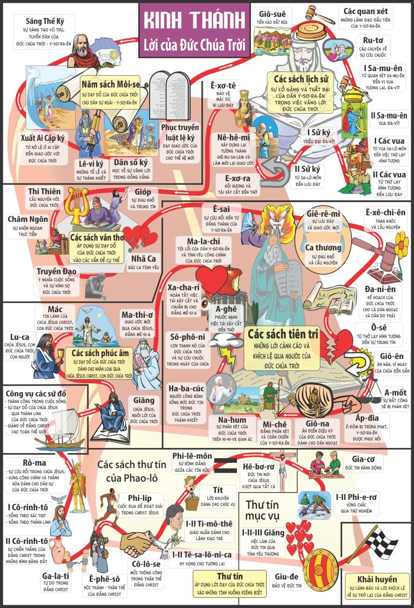
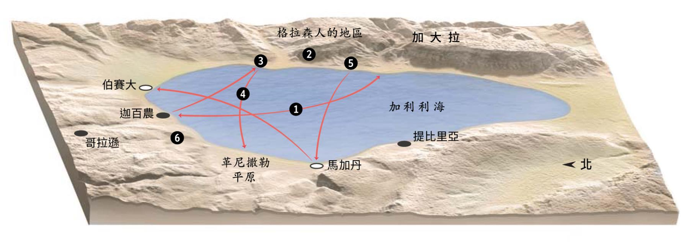
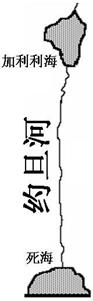
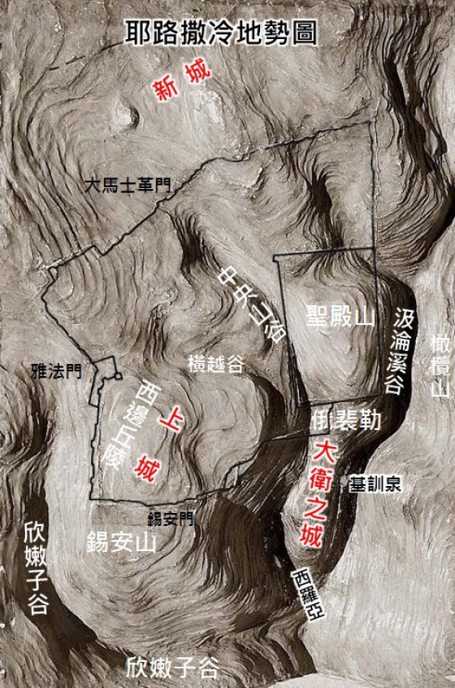
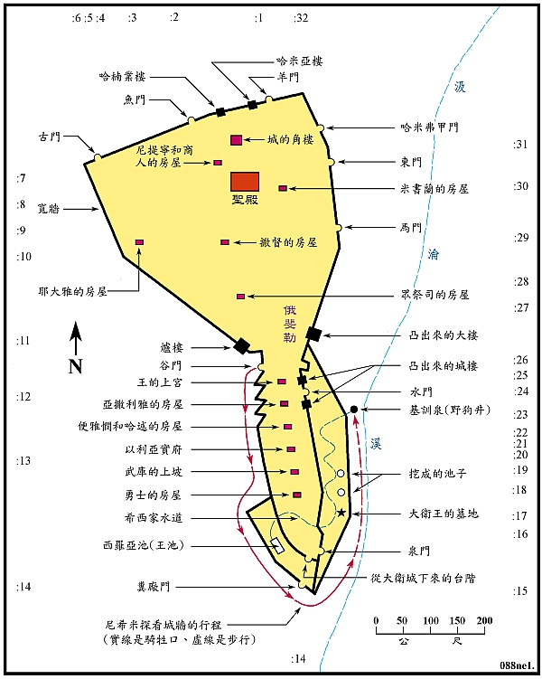
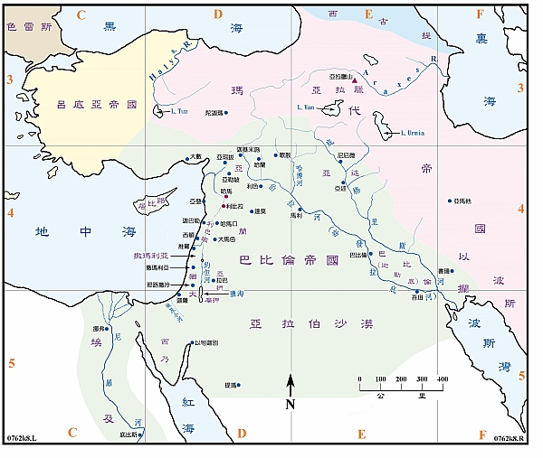

🎯 學習目標 (Learning Objectives)
- 掌握第 1-11 步的歷史脈絡
- 理解 Biển Ga-li-lê - Vịnh Ba Tư 的地理意義
- 認識相關的聖經人物和事件
- 應用歷史教訓到現代生活
- 建立完整的舊約歷史框架
★
【聖經舊約100步】A 各步內容 – Walk Through [Bible 100 OT Steps] -
★
ↈ〓
[Infographic] Bối cảnh lịch sử các sách Cựu Ước 旧约各卷书的历史背景


https://cunghocloichua.org/infographic-boi-canh-lich-su-cac-sach-cuu-uoc/
|
Bài học Tân Ước |
新約課程 |
|
[Bài học] Sách Công vụ Tông đồ| Bài 28: Hành trình đến Rôma – Phần 2
Chương 28: Hành trình đến Giêrusalem – Phần 2 Từ đảo Manta đến Rôma (28,1-31): Bơi vào bờ, mọi người được dân địa phương đối xử rất nhân đạo. Người ta đốt đống lửa cho họ sưởi vì trời mưa và lạnh. Chẳng những dân trên đảo, mà cả quan lớn nhất đảo tên là Púpliô cũng vui vẻ đón tiếp những người kém may mắn này. Sau phép lạ chữa cho thân sinh của quan Púpliô, Phaolô và mọi người được đối xử trọng hậu. Họ đã lưu lại đây suốt cả mùa đông. Hết mùa đông, đoàn áp giải Phaolô lại lên đường đi Rôma. Từ Manta đến Xyracuxa, rồi đến cảng Putêôli trong vịnh Napôli, từ cảng Putêôli đến Rôma. Đến nơi, các tín hữu tại Rôma đã ra đón Phaolô và các anh em. Ông không bị giam giữ trong tù, nhưng được hưởng chế độ nhà riêng; vẫn bị xiềng xích, nhưng được gặp gỡ những người thân quen. Hai năm tại Rôma, Phaolô đã gặp gỡ những người Do Thái hai lần. Ông tranh luận với họ về những điểm giáo lý mà ông đã trình bày về Đức Giêsu Kitô. Một số đã tin lời ông, một số lại không tin. Công việc chủ yếu của ông vẫn là rao giảng và giảng dạy. Rao giảng cho những người chưa biết Đức Kitô, và giảng dạy để củng cố đức tin cho các tín hữu. Dù lâm cảnh tù tội, nhưng Tin mừng của Đức Kitô vẫn được rao giảng cho đến tận cùng trái đất.
|
第 28 章：耶路撒冷之旅 - 第 2 部分 從曼塔島到羅馬（28:1-31）：游到岸邊，每個人都受到當地人非常人道的對待。由於下雨又冷，人們生火取暖。不只是島上的人們，就連島上最大的柑橘名叫普普利奧也高興地歡迎了這些不幸的人們。在治癒普波利奧父親的奇蹟之後，保羅和每個人都受到了尊重。他們整個冬天都待在這裡。 冬末，護送保羅的一行人啟程前往羅馬。從曼塔到塞浦路斯，再到那不勒斯灣的普特奧利港，從普特奧利港到羅馬。到達後，羅馬的信徒出來歡迎保羅和他的弟兄。他沒有被關在監獄裡，而是享受私人住房；仍然被束縛，但能夠見到熟悉的人。 在羅馬的兩年裡，保羅兩次會見猶太人。他與他們爭論他所提出的關於耶穌基督的教義觀點。有些人相信他，有些人不相信。他的主要工作仍然是傳道和教導。向不認識基督的人傳道，並教導加強信徒的信心。儘管他身陷囹圄，基督的福音仍然傳遍地極。
|
|
Chương 27: Hành trình đến Giêrusalem – Phần 1 Từ Giêrusalem đến đảo Manta: Gặp bão tố (27,1-44): Đoàn người lên tàu có tất cả 276 người, họ gồm nhiều thành phần khác nhau mà Luca không kể ra cụ thể. Những nhóm người chúng ta có thể kể ra đây là Phaolô và các anh em, trưởng cơ đội Giuliô và các binh lính, một số tù nhân khác và những người khác nữa. Tàu khởi hành từ Giêrusalem đến Xiđon, từ Xiđon đến Myra miền Lykia, từ Alexanria đến Bến Lành gần thành Laxaia. Gần đến ngày lễ Xá tội, Phaolô khuyên viên đội trưởng đừng ra khơi. Ông còn tiên báo có điềm chẳng lành. Nhưng viên đội trưởng không nghe theo lời khuyên của Phaolô, mà tin lời tài công và chủ tàu. Thế là họ quyết định ra khơi. Tàu khởi hành thuận lợi, nhưng chẳng được bao lâu, bão bắt đầu xuất hiện. Thế là con tàu cứ trôi dạt theo gió. Thủy thủ vứt đồ đạc và các trang bị xuống biển cho tàu nhẹ bớt. Họ sợ hãi và nhiều ngày chẳng ăn uống gì. Bấy giờ, Phaolô lên tiếng: sau vài lời trách cứ, ông mời gọi họ tin vào ông vì Thiên Chúa đã cho ông thấy thị kiến: ra trước tòa án Xêda. Sau 14 ngày không ăn uống, Phaolô đã cầm lấy bánh, dâng lời chúc tụng, bẻ ra và trao cho họ. Đây là cử chỉ chứng tỏ sự hiện diện của Thiên Chúa giữa mọi người. Thế là mọi người bắt đầu ăn uống trở lại. Sau 14 đêm vất vả, họ tiến vào đảo Manta. Khi đang tiến vào đảo, tàu bắc kẹt trên dải cát ngầm, phần đuôi tàu bị sóng đánh vỡ tan. Các binh lính định giết các tù nhân vì sợ họ nhảy xuống biển bơi vào bờ trốn thoát. Biết vậy, viên đội trưởng đã can ngăn và ra lệnh cho mọi người bơi vào bờ; ai không biết bơi thì bám vào các mảnh vỡ của tàu. Dù tàu bị vỡ, nhưng mọi người vẫn giữ được mạng sống.
|
第 27 章：耶路撒冷之旅 - 第 1 部分 從耶路撒冷到曼塔島：遭遇暴風雨（27:1-44）：登船的一群人共有276人，其中包括許多路加沒有具體提及的不同群體。我們在這裡可以提到的人群是保羅和他的兄弟、朱利奧上尉和他的士兵、其他一些囚犯和其他人。這艘船從耶路撒冷航行到西頓，從西頓航行到呂基亞的邁拉，從亞歷山大航行到拉克西亞附近的本蘭。 贖罪日臨近時，保羅勸百夫長不要出海。他也預言了一個不祥之兆。但船長並沒有聽保羅的勸告，而是相信了船長和船主。於是他們決定起航。船順利地出發了，但不久之後，暴風雨開始出現。於是船就一直隨風飄蕩。水手們把家具和設備丟進海裡，以減輕船的重量。他們很害怕，很多天沒有吃喝任何東西。然後保羅開口說話：在責備了幾句之後，他邀請他們相信他，因為上帝向他展示了一個異象：出現在凱撒的法庭上。 14天沒吃喝之後，保羅拿起餅來，祝福了，擘開，遞給他們。這是證明上帝臨在人群中的一個舉動。於是人們又開始吃飯了。 經過14個艱難的夜晚，他們進入了曼塔島。進島時，船擱淺在淺灘上，船尾被海浪沖破。士兵們擔心囚犯跳入海中游到岸邊逃跑，因此打算殺死他們。得知此事後，船長介入並命令大家游到岸邊。那些不會游泳的人會抓住船舶殘骸。雖然船壞了，但大家還是保住了性命。
|
|
Chương 26: Phaolô tại Xêdarê – Phần 3 Diễn từ của Phaolô trước vua Acríppa và Phéttô (26,1-32): Phaolô khởi đầu bài diễn từ đúng với nghệ thuật hùng biện qua cách nói lịch sự, với hy vọng vua Acríppa can thiệp vụ án của ông. Sau lời chào hỏi lịch sự, Phaolô nói về lý lịch của mình, kể lại biến cố Đamát và giải thích tại sao ông trở thành chứng nhân lãnh nhận sứ mệnh rao giảng Tin mừng của Đức Kitô. Nội dung giáo lý ông trình bày cũng giống như những lần ông đã nói ở nhiều nơi trước đó. Tổng trấn Phéttô cảm thấy thất vọng vì Phaolô cứ mải mê trình bày về Đức Giêsu Kitô mà chẳng quan tâm đến chuyện biện hộ cho mình. Vì thế ông bực mình và nói với Phaolô: “Ông điên thật rồi!” Ngược lại, những điều Phaolô giảng lại có vẻ tác động đến vua Acríppa. Sau đó, mọi người trong buổi họp đều khẳng định Phaolô vô tội. Tuy nhiên, vì đã kháng cáo lên hoàng đế, nên ông sẽ bị giải về Rôma để chờ ngày xét xử.
|
第 26 章：保羅在該撒利亞 – 第 3 部分 保羅在亞基帕王和非斯都面前講話（26:1-32）： 保羅按照修辭的藝術，以禮貌的言語開始了講話，希望亞基帕王能夠介入他的案件。在禮貌的寒暄之後，保羅講述了自己的背景，講述了大馬士革事件，並解釋了自己為何成為基督傳福音使命的見證人。他所講法的內容與他以前在許多地方所講過的內容是一樣的。 非斯都總督感到失望，因為保羅全神貫注於傳講耶穌基督，根本不關心為自己辯護。於是他很不高興，對保羅說：“你瘋了！”相反，保羅所講的道似乎對亞基帕王產生了影響。事後，與會者都確認保羅無罪。然而，由於他向皇帝上訴，他將被送回羅馬等待審判。
|
|
Chương 25: Phaolô tại Xêdarê – Phần 2 Chương này gồm 2 phần: 1. Phaolô và tổng trấn Phéttô (25,1-12): Sau khi nhậm chức được ba ngày, tổng trấn Phéttô từ Xêdarê xuống Giêrusalem. Tại đây, ông gặp giới lãnh đạo Do thái và họ yêu cầu vị tổng trấn ban cho họ ân huệ là mang Phaolô về Giêrusalem để xét xử. Thật ra, họ lại muốn mai phục dọc đường để giết Phaolô. Tuy nhiên, nhờ sự khôn ngoan của tổng trấn Phéttô, Phaolô lại thoát khỏi âm mưu của người Do thái. Tám ngày sau, phiên tòa diễn ra ở Xêdarê. Người Do Thái lại tố cáo Phaolô, và Phaolô mạnh dạn bác bỏ những lời tố cáo của họ. Khi vị tổng trấn hỏi Phaolô rằng: ngài có muốn được xét xử ở Giêrusalem không? Phaolô muốn kháng cáo lên hoàng đế Rôma và tổng trấn Phéttô đã chấp nhận. 2. Phaolô trình diện vua Acríppa (25,13-27): Trong thời gian ấy, vua Acríppa và bà Bécnikê cũng đến Xêdarê. Tổng trấn mới đem chuyện ông Phaolô thuật lại cho họ nghe từ đầu đến cuối. Nghe những lời ấy xong, vua Acríppa muốn gặp Phaolô. Thế là Phaolô lại có dịp rao giảng về Đức Giêsu Kitô cho họ.
|
第 25 章：保羅在該撒利亞 – 第 2 部分 本章包括2部分： 1. 保羅和總督非斯都（25:1-12）：總督非斯都上任三天后，從凱撒利亞前往耶路撒冷。在這裡，他會見了猶太領袖，他們請求總督允許他們將保羅帶回耶路撒冷受審。事實上，他們想沿途伏擊保羅，殺死他。然而，由於非斯都總督的智慧，保羅逃脫了猶太人的陰謀。八天后，審判在凱撒利亞進行。猶太人再次控告保羅，保羅勇敢地駁斥了他們的指控。當巡撫問保羅：你想在耶路撒冷受審嗎？保羅想向羅馬皇帝上訴，非斯都總督接受了。 2. 保羅向亞基帕王覲見（25:13-27）：當時，亞基帕王和百尼基夫人也來到了該撒利亞。新總督把保羅的故事從頭到尾講給他們聽。亞基帕王聽了這話，想要見保羅。因此保羅有機會再向他們傳講耶穌基督。
|
|
Chương 24: Phaolô tại Xêdarê – Phần 1 Phaolô và tổng trấn Phêlích (24,1-27): 5 ngày sau khi đến Xêdarê, tổng trấn Phêlích đem vụ án ra xét xử. Bên nguyên cáo gồm thượng tế Khannania, các kỳ mục và luật sư Téctulô; bên bị cáo chỉ có một mình Phaolô. Luật sư Téctulô tố cáo Phaolô 3 tội: (1) thứ ôn dịch và chuyên gây bạo loạn; (2) đầu xỏ phái Nadarét; (3) xúc phạm Đền thờ; ông tố cáo luôn vị chỉ huy Rôma ngăn cản họ xét xử Phaolô theo Lề Luật. Ở phần bị cáo biện hộ, Phaolô đã vạch trần sự cáo gian, ông nói thẳng vào vấn đề rao giảng về Đức Giêsu, Đấng đã chết và sống lại. Sau đó, Phaolô đã bênh vị chỉ huy. Kết cục, tổng trấn đã cho ngưng phiên tòa chờ ngày tiếp tục xét xử. Ít ngày sau cuộc xét xử, tổng trấn muốn nghe Phaolô nói về Đức Giêsu. Khi Phaolô nói về đức công chính, sự tiết độ và cuộc phán xét mai sau, Phêlích đã khiếp sợ. Sau đó, Phaolô tiếp tục bị giam. Trong thời gian đó, Phêlích cũng mất chức tổng trấn.
|
第 24 章：保羅在該撒利亞 – 第 1 部分 保羅和腓力斯總督（24:1-27）：抵達該撒利亞 5 天后，腓力斯總督將此案送交審判。原告包括大祭司卡納尼亞（Khannania）、長老們和律師塞斯庫勒斯（Thesculus）；被告一方只有保羅一人。特克圖洛律師指控保羅犯下三項罪行：（1）瘟疫和暴動； (2) 拿撒勒教派的領袖； (3) 褻瀆聖殿；他還指責羅馬指揮官阻止他們依照律法審判保羅。在被告的辯護中，保羅揭穿了虛假指控，並直接談到了傳講耶穌這位死而復活的人的問題。保羅隨後為指揮官辯護。最終，州長暫停了審判，直到審判繼續進行。 審判幾天后，總督想聽聽保羅對耶穌的看法。當保羅談到公義、節制和即將到來的審判時，腓力斯感到害怕。此後，保羅繼續被監禁。在此期間，菲利克斯也失去了州長的職位。
|
|
Chương 23: Phaolô tại Giêrusalem – Phần 2 Chương này gồm 3 phần: 1. Phaolô trước Thượng Hội đồng (23,1-11): Mở đầu phiên xử là những lời tranh luận giữa Phaolô và thầy Thượng tế. Sau đó, Phaolô biện hộ cho mình trước toàn thể Thượng Hội đồng. Ông đã lấy cớ rao giảng về kẻ chết sống lại nên ông bị điệu đến đây. Vì thế, những người Pharisêu đã bênh vực ông. Thế là những người Pharisêu và Xađốc tranh luận với nhau. Càng lúc tình hình càng trở nên căng thẳng, nên viên chỉ huy cho quân lính đưa Phaolô về đồn. Đêm ấy, Chúa đã hiện ra với ông qua thị kiến và khích lệ ông vững lòng làm chứng cho Người. 2. Người Do Thái âm mưu giết hại Phaolô (23,12-22): Ngày kế tiếp, 40 người Do Thái từ Asia thề lập mưu giết Phaolô. Họ phối hợp với Thượng Hội đồng bằng cách nhờ Thượng Hội đồng cho gọi Phaolô sang để điều tra cho cặn kẽ. Trên đường áp giải Phaolô đi, họ sẽ phục kích và giết Phaolô. Nhờ đứa cháu trai con người chị ông Phaolô nghe được, cậu bé đã đến gặp Phaolô. Phaolô nhờ viên cai ngục dẫn cậu ta đến gặp vị chỉ huy. Sau khi biết được âm mưu của người Do Thái, vị chỉ lên kế hoạch giải Phaolô đến tổng trấn Phêlích đang ở Xêdarê. Phaolô tại Xêdarê 3. Phaolô bị giải đến Xêdarê (23,23-35): Viên chỉ huy đã tập hợp một đội quân hùng hậu để áp giải Phaolô an toàn đến tổng trấn Phêlích. Đoạn đường áp giải được chia làm hai chặng. Chặng 1: từ Giêrusalem đến Antipátri. Đây là đoạn đường nguy hiểm và dễ bị người Do Thái phục kích, nên cần nhiều quân hộ tống áp giải. Chặng 2: từ Antipátri đến Xêdarê, đoạn đường này bằng phẳng và an toàn hơn. Vì thế, viên chỉ huy và quá một nửa đoàn quân trở về Giêrusalem. Đến Xêdarê, đoàn hộ tống giao Phaolô và bức thư của vị chỉ huy cho tổng trấn. Phaolô và đoàn hộ tống đến nơi bình an. Tổng trấn Phêlích tiếp Phaolô cách hững hờ và cho giam ông vào dinh Hêrôđê chờ ngày xét xử.
|
第 23 章：保羅在耶路撒冷 –第 2 部分 本章包括3部分： 1. 保羅在主教會議前（23:1-11）：審判以保羅和大司祭之間的爭論開始。然後保羅在整個主教會議上為自己辯護。他以宣講死人復活為藉口，所以被帶到了這裡。因此，法利賽人為他辯護。於是法利賽人和撒都該人就互相爭論。隨著局勢越來越緊張，指揮官命令士兵將保羅帶到車站。當晚，神在異像中向他顯現，鼓勵他堅定地為神作見證。 2. 猶太人密謀殺害保羅（23:12-22）：第二天，40 個來自亞洲的猶太人發誓密謀殺害保羅。他們與主教會議協調，要求主教會議傳喚保羅來徹底調查。在護送保羅的途中，他們伏擊並殺害了保羅。感謝保羅姊姊的姪子聽說了這件事，男孩去見保羅。保羅請獄卒帶他去見千夫長。在得知猶太人的陰謀後，他只打算帶保羅去見該撒利亞的總督腓力斯。 保羅在該撒利亞 3. 保羅被帶到該撒利亞（23:23-35）：指揮官召集了一支強大的軍隊，護送保羅安全到總督腓力斯那裡。護送路線分為兩個階段。第一階段：從耶路撒冷到安提帕特里。這是一條危險的路，很容易遭到猶太人的伏擊，所以需要很多護衛。第二階段：從安蒂帕特里到凱撒利亞，這條路更平坦、更安全。於是，統帥帶著一半以上的軍隊返回了耶路撒冷。到達該撒利亞後，護送者將保羅和指揮官的信交給總督。保羅和他的護送人員安全抵達。總督腓力斯冷漠地接待了保羅，並將他囚禁在希律王的宮殿裡等待審判。
|
|
Chương 22: Phaolô tại Giêrusalem – Phần 1 tiếp theo Phaolô nói với người Do thái (22,1-30): Vì nói được tiếng Hy Lạp, Phaolô chiếm được cảm tình của viên chỉ huy và ông ta cho phép Phaolô ngỏ lời với dân chúng. Phaolô đã ngỏ lời với họ bằng một bài biện hộ khá dài. Từ việc trình bày lý lịch của một người Biệt phái nhiệt thành đi bắt các Kitô hữu, ông kể về biến cố tại Đamát, nơi Chúa Giêsu đã hiện ra với ông. Tiếp theo, ông kể về thị kiến ông đã thấy trong Đền thờ đang khi cầu nguyện; Chúa đã hiện ra với ông. Tuy nhiên, dân chúng chẳng những không nghe, mà họ hò hét và la to tiếng phản đối. Khi quân lính chuẩn bị đánh đòn, Phaolô đã nại đến quyền công dân Rôma. Thế là ông thoát nạn và tiếp tục bị giam để chờ ngày ra trước Thượng Hội đồng.
|
第 22 章：保羅在耶路撒冷 –第 1 部分（續） 保羅對猶太人講話（22:1-30）：因為保羅講希臘語，所以他贏得了千夫長的青睞，他允許保羅向百姓講話。保羅對他們做了相當長的辯護。他從講述一個熱心的法利賽人去逮捕基督徒的背景開始，講述了耶穌在大馬士革向他顯現的事件。接下來，他講述了他在聖殿祈禱時所看到的異象。神向他顯現。然而，人們不但不聽，反而叫嚷、大聲抗議。當士兵準備鞭打他時，保羅訴諸他的羅馬公民身份。於是他逃脫並繼續被拘留，等待主教會議的前一天。
|
|
Chương 21: Hành trình truyền giáo thứ ba – Phần 2 Chương này chia làm 2 phần 1. Phaolô đến Giêrusalem (21,1-16): Rời Milêtô, Phaolô và các anh em xuống tàu đi đến đảo Cô, sau đó đến đảo Rôđô và Patara. Sau khi ghé Patara, đoàn lại tiếp tục xuống tàu đi Phênixi, rồi đến Xyria. Vì phải đổ hàng tại cảng, nên tàu cập bến Tia (Tirô). Tại đây, Phaolô và các bạn đồng hành gặp các tín hữu. Họ khuyên ông đừng lên Giêrusalem vì người Do Thái đang tìm cách bắt ông. Tuy nhiên, ông rất quyết tâm lên Giêrusalem. Thế là các tín hữu chia tay Phaolô và tiễn ông lên đường. Rời Tia, Phaolô đến Ptôlêmai, sau đó ông đến Xêdarê và lưu lại tại nhà phó tế Philípphê ít ngày. Nghe lời tiên tri của Agabô, các tín hữu khuyên Phaolô đừng lên Giêrusalem, giống như các tín hữu tại Tia. Không khuyên được ông, các tín hữu đành tiễn ông lên đường đi Giêrusalem. Phaolô tại Giêrusalem – Phần 1 Phaolô đến Giêrusalem và bị bắt (21,17-40): Tại Giêrusalem, Phaolô đã gặp gỡ Giacôbê, vị lãnh đạo Giáo hội tại Giêrusalem và các tín hữu. Ông tường thuật lại những gì đoàn truyền giáo đã làm và những kỳ công Thiên Chúa đã thực hiện trong chuyến đi. Các kỳ mục cho ông biết những rắc rối có thể ông sẽ gặp phải vì vấn đề liên quan đến Lề luật. Họ đưa ra giải pháp thực hiện nghi thức thanh tẩy và Phaolô đã thi hành đúng như lời khuyên của các kỳ mục. Tuy nhiên, việc làm của Phaolô vẫn không xoa dịu được những người Do Thái quá khích, và thế là ông đã bị bắt. Vì sợ dân chúng náo động trong dịp lễ Ngũ Tuần, chính quyền Rôma đã can thiệp.
|
第21章：第三次傳教之旅－第二部分 本章分為2部分 1. 保羅到達耶路撒冷（21:1-16）：離開米利都，保羅和他的兄弟們乘船前往哥爾島，然後前往羅多島和帕塔拉島。在帕塔拉停留後，一行人繼續登上火車前往腓尼基，然後前往敘利亞。由於該船要在港口卸貨，所以停靠在蒂亞（Tiro）。保羅和他的同伴在這裡遇見了信徒。他們建議他不要去耶路撒冷，因為猶太人試圖抓住他。然而，他堅決要去耶路撒冷。於是，信徒們就告別了保羅，打發他上路了。保羅離開推羅，前往托勒密，然後前往凱撒利亞，在執事腓立比家裡住了幾天。聽到亞甲的預言，信徒們勸保羅不要像推羅的信徒一樣去耶路撒冷。信徒們無法給他建議，只好送他到耶路撒冷。 保羅在耶路撒冷 –第 1 部分 保羅到達耶路撒冷並被捕（21:17-40）：在耶路撒冷，保羅會見了耶路撒冷教會的領袖雅各和信徒。他講述了宣教團在旅途中所做的事情以及上帝所行的奇事。長老告訴他，他可能會因為與律法有關的事而遇到麻煩。他們想出了舉行淨化儀式的解決方案，保羅聽從了長老的建議。然而，保羅的行為仍然沒有安撫猶太狂熱分子，因此他被逮捕了。由於擔心五旬節期間引起公眾騷動，羅馬政府進行了乾預。
|
|
|
|
|
Chương 20: Hành trình truyền giáo thứ ba – Phần 2 Chương này gồm 2 phần: 1. Phaolô tại Troa: Cứu người chết sống lại (20,1-12): Theo dự định ban đầu, Phaolô sẽ đáp tàu qua miền Makêđônia và miền Akhaia, sau đó về Giêrusalem. Tuy nhiên, sau khi thăm các anh em miền Makêđônia, ông tới Hy Lạp (Côrintô) và lưu lại đây ba tháng. Vì biết người Do Thái âm mưu hại ông, thay vì về Giêrusalem, đoàn truyền giáo đã chia làm hai để hành trình đến Troa. Tại đây, ngày Chúa nhật, các tín hữu họp nhau cử hành Nghi lễ Bẻ bánh, và trong nghi lễ này, bài giảng của Phaolô cứ kéo dài, nên một thanh niên tên là Êutykhô ngồi trên cửa sổ lầu ba đã ngủ gật và ngã xuống đất tắt thở. Phaolô đã cứu sống anh trước sự sửng sốt của các tín hữu. Sau đó, nghi lễ tiếp tục cho đến sáng và Phaolô từ biệt các tín hữu. 2. Phaolô tại Milêtô: Từ giã các kỳ mục Êphêxô (20,12-38): Từ Troa, đoàn truyền giáo tiếp tục chia làm hai và hẹn gặp nhau ở Átxô; đoàn thứ nhất đi tàu đến Átxô trước, đoàn thứ hai cùng với Phaolô đi đường bộ đến sau. Khi gặp nhau, họ xuống tàu đi tiếp, bỏ qua Êphêxô và cập bến ở Milêtô, cách Êphêxô khoảng 60 km. Tại đây, Phaolô cho mời các kỳ mục của Êphêxô xuống mà gặp gỡ họ. Cuộc gặp mặt thật cảm động. Sau đó, Phaolô từ biệt các anh em và đoàn truyền giáo lên tàu thẳng tiến Giêrusalem cho kịp lễ Ngũ Tuần.
|
第20章：第三次傳教之旅－第二部分 本章包括2部分： 1. 保羅在特羅亞：使死人復活（20:1-12）：按照原計劃，保羅要乘船經過馬其頓和亞該亞，然後返回耶路撒冷。然而，他在馬其頓探望了他的兄弟之後，又去了希臘（哥林多），並在那裡待了三個月。因為他們知道猶太人正在密謀傷害他，所以傳教士小組沒有返回耶路撒冷，而是分成兩路前往特羅亞。週日，信徒們聚集在這裡慶祝擘餅，在這個儀式中，保羅的講道繼續拖下去，於是坐在三樓窗戶上的一個名叫猶推古的年輕人睡著了，倒在地上睡著了。保羅救了他的命，令信徒們驚訝不已。禮拜一直持續到早上，保羅才向信徒們道別。 2. 保羅在米利都：告別以弗所的長老們（20:12-38）：從特羅亞來的宣教團繼續分成兩部分，安排在亞索會面；第一組先搭船前往阿索，第二組與保羅隨後搭乘陸路到達。相遇後，他們登上船繼續前行，繞過以弗所，在距離以弗所約60公里的米萊托登陸。保羅在這裡邀請以弗所的長老下來迎接他們。這次會面非常感人。隨後，保羅告別了弟兄們和宣教團，乘船前往耶路撒冷，趕上五旬節。
|
|
Chương 19: Hành trình truyền giáo thứ ba – Phần 1 Chương này gồm 4 phần: 1. Các môn đệ của Gioan Tẩy Giả (19,1-7): Phaolô khởi hành chuyến truyền giáo thứ ba từ Antiôkia miền Xyria. Khi tới Êphêxô, ông gặp các môn đệ của Gioan Tẩy Giả, và ông đã có cuộc đối thoại với họ. Qua nội dụng trao đổi, họ chưa hề chịp phép rửa nhân danh Đức Kitô và lãnh nhận Thánh Thần. Biết vậy, Phaolô đã rửa tội và đặt tay ban Thánh Thần cho họ. 2. Thành lập giáo đoàn Êphêxô (19,8-10): Đoạn này tóm lược hoạt động của Phaolô tại Êphêxô. Trong vòng ba tháng, ông đến hội đường để rao giảng, thảo luận và thuyết phục người Do Thái tin vào Đức Kitô. Tuy nhiên, nhiều người Do Thái chẳng những không tin điều ông rao giảng, họ còn nói xấu đạo. Đáp lại, ông Phaolô đã đoạn tuyệt với hội đường Do Thái và hướng về dân ngoại. 3. Các thầy phù thủy tại Êphêxô (19,11-22): Đoạn này tóm lược các dấu lạ chữa bệnh và trừ quỷ củ Phaolô tại Êphêxô. Khi người ta thấy Phaolô làm các dấu lạ nhân danh Đức Giêsu Kitô, những người Do Thái hành nghề trừ quỷ cũng thử lấy “danh ấy” để làm. Quỷ đã lột mặt nạ những người này và nói sự thật về Chúa Giêsu và Phaolô. Dân chúng sợ hãi và tán dương danh Chúa Giêsu. 4. Thợ bạc Êphêxô gây rối (19,23-40): Ông Đêmếtriô làm nghề thợ bạc, chuyên làm tượng nữ thần Atêmi, nữ thần phì nhiêu. Vì lời giảng dạy của Phaolô “thần linh do tay người phàm làm ra”, doanh tu bán tượng thần của ông bị ảnh hưởng. Vì thế, ông kích động các đồng nghiệp và dân chúng nổi lên chống lại Phaolô. Họ đã bắt Gaiô và Tríttakhô, những người đồng hành của Phaolô. Cuối cùng, viên thư ký của thành phố phải đứng ra dàn xếp vụ này.
|
第 19 章：第三次傳教之旅 –第 1 部分 本章包括4部分： 1. 施洗約翰的門徒（19:1-7）：保羅從敘利亞的安提阿出發，開始了他的第三次傳教之旅。當他到達以弗所時，他遇見了施洗約翰的門徒，並與他們對話。根據交換的內容，他們從未奉基督的名受洗並接受聖靈。保羅知道這一點，就為他們施洗，並按手給他們聖靈。 2. 以弗所教會的建立（19:8-10）：這段經文總結了保羅在以弗所的活動。三個月來，他到會堂傳道、討論、勸說猶太人相信基督。然而，許多猶太人不但不相信他所宣揚的，還詆毀宗教。作為回應，保羅與猶太會堂決裂，轉向外邦人。 3. 以弗所的術士（19:11-22）：這段經文總結了保羅在以弗所所行的醫病和驅魔的神蹟。當人們看到保羅奉耶穌基督的名行神蹟時，實行驅魔的猶太人也試圖用「那個名字」來做。魔鬼揭開了這些人的面具，並說出了有關耶穌和保羅的真相。人們敬畏並讚美耶穌的名。 4.以弗所銀匠惹麻煩（19:23-40）：德米特里先生是一名銀匠，專門製作生育女神阿耳忒彌斯的雕像。由於保羅教導“神是人手造的”，他賣偶像的生意受到了影響。於是，他煽動同僚和百姓起來反抗保羅。他們逮捕了保羅的同伴蓋奧和特里塔喬。最後，市書記官不得不了結此案。
|
|
Chương 18: Hành trình truyền giáo thứ hai – Phần 3 Chương này gồm 3 phần: 1. Tại Côrintô (18,1-17): Rời Athen, Phaolô đến Côrintô, thủ phủ của tỉnh Akhaia, ở đây ông chờ Timôthê và Xila từ Thêxalônica đến. Phaolô gặp gia đình ông Aquila và bà Prítkila và ở lại đây làm nghề dệt lều với họ. Dù bận rộn, nhưng Phaolô vẫn rao giảng Tin mừng vào những ngày sabát trong hội đường của người Do Thái. Khi Xila và Timôthê đến, Phaolô chuyên tâm vào việc rao giảng Tin mừng. Dù có nhiều người tin theo và trở lại, Phaolô và các bạn đồng hành vẫn gặp chống đối từ những người Do Thái. Họ mang Phaolô đến thống đốc Rôma và tố cáo ông với tội danh: “Xúi giục người ta tôn thờ Thiên Chúa trái với Lề Luật” (18,13). 2. Trở lại Antiôkhia và chuẩn bị cho hành trình thứ ba (18,18-23): Phaolô từ giã anh em ở Côrintô để đến Êphêxô; cùng đi với ông có vợ chồng của Aquila. Trước khi rời khỏi đây, ông đã xuống tóc vì có lời khấn. Phaolô để vợ chồng Aquila ở lại đây. Còn ông chỉ lưu lại thời gian ngắn để thảo luận với những người Do Thái. Sau đó, ông rời Êphêxô để đi Giêrusalem để báo cáo cho các vị lãnh đạo của Hội thánh. Xong việc, ông trở lại Antiôkia và chuẩn bị cho chuyến truyền giáo thứ ba. 3. Hoạt động của Apôlô tại Êphêxô (18,24-28): Apôlô là người Do Thái, sống ở Alexandria, một người có tài hùng biện. Ông biết đạo Chúa qua các đồ đệ của Gioan Tẩy Giả. Nhờ ông bà Aquila và Pritkila, ông hiểu biết đầy đủ và chắc chắn hơn về đạo. Sau khi Phaolô rời Côrintô, cộng đoàn ở đây không có người phụ trách. Vì thế, Apôlô đã đến Côrintô để giúp đỡ họ.
|
第 18 章：第二次傳教之旅 –第 3 部分 本章包括3部分： 1. 在哥林多（18:1-17）：保羅離開雅典，前往亞該亞省的首府哥林多，在那裡等候提摩太和西拉從帖撒羅尼迦到來。保羅遇見了亞居拉和普利基拉的家人，並留在這裡與他們一起做帳篷編織工。儘管很忙，保羅仍然在安息日在猶太會堂傳福音。當西拉和提摩太到達後，保羅就致力於傳福音。儘管許多人相信並歸信，保羅和他的同伴仍然遭到猶太人的反對。他們把保羅帶到羅馬巡撫那裡，指控他「煽動百姓違背律法敬拜上帝」（18:13）。 2. 返回安提阿，準備第三次旅程（18:18-23）：保羅告別哥林多的弟兄，前往以弗所；陪伴他的是亞居拉和他的妻子。離開這裡前，他因為發誓，剃了光頭。保羅把亞居拉和他的妻子留在這裡。他只停留了很短的時間與猶太人討論。然後他離開以弗所前往耶路撒冷向教會領袖報告。完成工作後，他返回安提阿，準備第三次傳教之旅。 3. 亞波羅在以弗所的活動（18:24-28）：亞波羅是猶太人，住在亞歷山大，是一位能言善道的人。他透過施洗約翰的門徒認識了上帝。感謝亞居拉夫婦和普利基拉，他對宗教有了更完整、更確定的認識。保羅離開哥林多後，這裡的社區無人負責。於是亞波羅就前往哥林多幫助他們。
|
|
Chương 17: Hành trình truyền giáo thứ hai – Phần 2 Chương này gồm 2 phần: 1. Tại Thêxalônica và Bêroia (17,1-15): Rời Philipphê, Phaolô và các bạn đồng hành đến Thêxalônica, thủ phủ của tỉnh Makêđônia, thuộc đế quốc Rôma. Phaolô đã rao giảng Tin mừng cho người Do Thái tại đây và nhiều người đã tin và chịu phép rửa. Thế là cộng đoàn Thêxalônica được hình thành. Tuy nhiên, một số người Do Thái vì ghen tức nên chống đối các Kitô hữu, cụ thể là ông Giaxon, người đón tiếp nhóm truyền giáo. Rời Thêxalônica, Phaolô và nhóm đồng hành đến Bêroia, một thành phố quan trọng thứ ba trong tỉnh Makêđônia. Phaolô và các anh em đã vào hội đường mà rao giảng Tin mừng. Rất nhiều người đã tin theo, kể cả những người Hy lạp và các phụ nữ thượng lưu. Tuy nhiên, nhóm người Do Thái ở Thêxalônia đã kéo xuống Bêroia để chống đối Phaolô. Vì thế, ông đã để Xila và Timôthê ở lại Bêroa, để có thể lui tới chăm sóc các Kitô hữu tại Philípphê và Thêxalônica, còn ông lên đường đến Athen. 2. Bài giảng về thần vô danh tại Athen (17,16-34): Athen là thành phố nổi tiếng của Hy Lạp, là trung tâm văn hóa, trí thức, tôn giáo đa thần. Rảo quanh thành phố, Phaolô đã nổi giận vì ở đây có quá nhiều thần. Vì thích nghe tư tưởng mới lạ, trí thức nơi đây đã mời Phêrô đến giảng Tin mừng. Từ bàn thờ kính thần vô danh, Phaolô chỉ cho họ Đức Giêsu Kitô là ai. Khi ông giảng đến đoạn kẻ chết sống lại, họ đã bỏ đi hết. Bài giảng lần này được coi là không thành công cho lắm.
|
第 17 章：第二次傳教之旅 –第 2 部分 本章包括2部分： 1. 在帖撒羅尼迦和比羅亞（17:1-15）： 離開腓立比，保羅和他的同伴前往羅馬帝國馬其頓省的首都帖撒羅尼迦。保羅在這裡向猶太人傳福音，許多人相信並受洗。這樣，帖撒羅尼迦社區就形成了。然而，有些猶太人出於嫉妒，反對基督徒，特別是歡迎傳教士團體的傑克森先生。 離開帖撒羅尼迦，保羅和他的同伴前往馬其頓省第三重要的城市比亞。保羅和他的兄弟們走進會堂宣講福音。許多人都相信這一點，包括希臘人和上層女性。然而，帖撒羅尼迦的一群猶太人下到比羅亞反對保羅。因此，他把西拉和提摩太留在庇哩亞，以便探望和照顧腓立比和帖撒羅尼迦的基督徒，然後他就啟程前往雅典。 2.在雅典對未知之神的講道（17，16-34）：雅典是希臘的著名城市，是文化、知識和多神教的中心。保羅在城裡走來走去，因為這裡有太多的神而生氣。由於喜歡聽新思想，這裡的知識分子邀請彼得去傳福音。保羅從未知神的祭壇上向他們展示了耶穌基督是誰。當他到了死人復活的地步時，他們都離開了。這次講座被認為不是很成功。
|
|
Chương 16: Hành trình truyền giáo thứ hai – Phần 1 Chương này được chia làm ba phần: 1. Chọn Timôthê (16,1-5): Để chuẩn bị nhân sự cho chuyến truyền giáo thứ hai, ngoài Xila, Phaolô còn chọn thêm Timôthê. Ông không phải là người gốc Do Thái thuần túy, mà cha ông là người Hy Lạp, mẹ là người Do Thái. Phaolô cắt bì cho Timôthê, mục đích để ông có thể giảng dạy về Chúa Kitô trong các hội đường Do Thái dễ dàng hơn. 2. Đi qua miền Tiểu Á, Thị kiến người Makêđônia (16,6-10): Phaolô, Xila và Timôthê đi qua vùng Tiểu Á, nhưng các ông không rao giảng Tin mừng tại vùng này. Trong một thị kiến, Phaolô thấy có một người miền Makêđônia van xin ông sang miền ấy để giúp họ. Đây là một vùng rộng lớn nằm ở phía bắc Hy Lạp, cửa ngõ tiến vào châu Âu. Vâng lệnh Thiên Chúa, họ đã lên đường. 3. Tại Philípphê, Phaolô và Xila bị bắt giam và được giải thoát lạ lùng (16,11-40): Phaolô và các bạn đồng hành xuống thuyền đi về hướng Tây Bắc đến đảo Xamốtrakê, và ngày hôm sau họ đến Nêapôli rồi từ đây, họ đến Philípphê, một thị trấn quan trọng trong miền Makêđônia. Tại đây, các ông đã làm quen và rao giảng cho các phụ nữ. Đây là những người đầu tiên tại Philípphê nghe giảng và theo đạo, một trong số đó là bà Lydia. Vì Phaolô trừ quỷ cho một đầy tớ gái và việc quỷ xuất khỏi cô khiến cô không nghe lời chủ nhân nữa. Vì thế, nhiều người quay sang chống Phaolô và nhóm truyền giáo. Sau đó, Phaolô và Xila đã bị bắt giam. Tuy nhiên, Thiên Chúa đã giải thoát hai ông và cả nhà viên cai ngục đã được rửa tội.
|
第 16 章：第二次傳教之旅 –第 1 部分 本章分為三個部分： 1. 選擇提摩太（16，1-5）：為了準備第二次宣教旅行的人員，除了西拉之外，保羅還選擇了提摩太。他不是純猶太血統，但他的父親是希臘人，母親是猶太人。保羅給提摩太行了割禮，好讓他更容易在猶太會堂裡教導基督。 2.經過小亞細亞，馬其頓人的異象（16:6-10）：保羅、西拉和提摩太經過小亞細亞，但他們並沒有在這個地區傳福音。在異像中，保羅看見一個馬其頓人懇求他去那個地區幫助他們。這是位於希臘北部的一大片地區，也是通往歐洲的門戶。聽從神的命令，他們出發了。 3. 在腓立比，保羅和西拉被囚禁並奇蹟般地獲釋（16:11-40）：保羅和他的同伴上了船，向西北航行到薩莫拉基島，第二天他們從這裡到達了尼亞波利斯。在這裡，他們認識了婦女並向她們傳道。他們是腓立比第一批聽道並信奉宗教的人，其中之一就是莉迪亞。 因為保羅為一個女僕驅鬼，鬼就從她身上出來，使她不再聽從主人的話。因此，許多人反對保羅和宣教團體。後來，保羅和西拉被監禁。然而，上帝釋放了這兩個人，獄卒的全家都接受了洗禮。
|
|
Chương 15: Công đồng Giêrusalem Mục tiêu của Công đồng Giêrusalem là giải quyết vấn đề: Những người ngoại trở lại đạo có phải chịu cắt bì và giữ Luật Môsê không? Một số tín hữu gốc Do thái đến giáo đoàn Antiôkhia và nói với các tín hữu gốc dân ngoại rằng để được cứu độ, chỉ tin vào Chúa Giêsu chưa đủ, họ phải chịu cắt bì và giữ Luật Môsê. Để giải quyết vấn đề này, cộng đoàn đã chử Phaolô, Barnaba và một số người khác nữa đi Giêrusalem. Sau khi họp bàn cùng các Tông đồ, Công đồng đưa ra giải pháp dung hòa làm hài lòng cả các tín hữu Do Thái lẫn dân ngoại. Công đồng quyết định: Không được gây phiền hà cho các tín hữu gốc dân ngoại, nghĩa là không nên đòi buộc họ phải cắt bì và giữ Luật Môsê. Ngược lại, họ được khuyên giữ ít tập tục như kiêng thức ăn ố uế, tránh gian dâm, kiêng ăn tiết hay loài vật không cắt tiết. Phaolô và Barnaba chia tay: Đoạn cuối chương 15 là khởi đầu của chuyến truyền giáo thứ hai. Đang khi chuẩn bị cho chuyến đi, Phaolô và Barnaba đã xảy ra tranh cái vì vấn đề đưa Marcô đi theo. Phaolô không muốn cho Marcô đi theo, vì ông đã bỏ về trong chuyến thứ nhất. Thế là Phaolô và Barnaba chia tay.
|
第15章：耶路撒冷會議 耶路撒冷會議的目標是解決這個問題：異教皈依者必須受割禮並遵守摩西律法嗎？ 有些猶太信徒來到安提阿教會，告訴外邦信徒，要得救，僅僅相信耶穌是不夠的，必須受割禮並遵守摩西律法。為了解決這個問題，社區派保羅、巴拿巴和其他一些人到耶路撒冷。 在與使徒會面後，理事會提出了一個讓猶太和外邦信徒都滿意的折衷方案。會議決定：不給異教出身的信徒製造麻煩，即不要求他們受割禮並遵守摩西律法。相反，他們被勸告要遵守一些習俗，例如禁食不潔的食物、禁慾淫亂、禁食血或不割血的動物。 保羅和巴拿巴分手：第 15 章的結尾是第二次宣教旅行的開始。在準備旅行時，保羅和巴拿巴為帶馬可一起去的問題發生了爭執。保羅不想讓馬可和他一起去，因為他在第一次旅行時就離開了。於是保羅和巴拿巴分道揚鑣。
|
|
Chương 13: Hành trình truyền giáo thứ nhất – (Phần 1) Chương này gồm 2 phần: 1. Phaolô tại đảo Sýp: Phù thủy Êlyma (13,1-12): Saolô, Barnaba và Márcô khởi hành chuyến truyền giáo thứ nhất từ Antiôkia, miền Syria. Cộng đoàn tại đây đã ăn chay, cầu nguyện và đặt tay trên các ông, rồi tiễn họ đi. Điểm đầu tiên các ông đến là Xalamin, sau đó đi đường bộ đến Paphô. Tại đây, Saolô đã đổi tên thành Phaolô; tên của một công dân Rôma thực thụ. Cũng tại nơi này, khi Phaolô đang giảng giáo lý cho tổng đốc Xécgiô Phaolô, thầy phù thủy Êlyma đã cố tình ngăn cản. Ông ta bị trừng phạt, và hình phạt là phải bị mù cả hai mắt. 2. Phaolô tại Antiôkia miền Pixiđia (13,13-51): Từ Paphô thuộc đảo Sýp, các ông vượt biển đến Pécghê miền Pamphylia. Tại đây, Marcô đã bỏ về Giêrusalem; còn hai ông tiếp tục đi đến Antiôkia, miền Pamphylia. Tại đây, trong các ngày Sabát, hai ông đã vào hội đường Do Thái mà giảng dạy cho họ. Kết quả là có nhiều người Do Thái và dân ngoại đã tin theo.
|
第13章：第一次傳教之旅－（第1部分） 本章包括2部分： 1. 保羅在塞浦路斯：以呂馬的女巫（13:1-12）：掃羅、巴拿巴和馬可從敘利亞的安提阿出發，開始了第一次傳教之旅。這裡的社區禁食、祈禱並按手在他們身上，然後送他們離開。他們到達的第一個地點是哈拉明，然後取道前往帕福。在這裡，掃羅改名為保羅；真正的羅馬公民的名字。也是在這個地方，當保羅向總督塞爾吉奧·保羅宣講教理問答時，巫師以呂馬故意阻止了他。他受到了懲罰，懲罰就是雙眼失明。 2. 保羅在皮西底的安提阿（13:13-51）：他們從塞浦路斯的帕福，渡海到旁菲利亞的佩爾格。在這裡，馬可動身前往耶路撒冷。他們兩人繼續前往潘菲利亞的安提阿。在這裡，他們在安息日進入猶太會堂教導他們。結果，許多猶太人和外邦人都相信了。
|
|
Chương 12: Hoạt động của Phêrô và những sự kiện khác – (Phần 3) Chương này gồm 2 phần: 1. Phêrô được giải cứu cách lạ lùng (12,1-19): Giáo hội tại Giêrusalem bước vào thời kỳ bị bách hại. Sau khi chém đầu Giacôbê, vua Hêrôđê cho bắt cả Phêrô trong khi Hội thánh không ngừng cầu nguyện cho ông. Đêm trước ngày bị đem ra hành quyết, Chúa đã cho thiên thần đến giải thoát ông. 2. Cái chết của Hêrôđê, Barnaba và Saolô trở lại Antiôkia (12,20-25): Số phận của vua Hêrôđê đã được Thiên Chúa định đọat vì tất cả những khổ đau ông đã gây ra cho các tín hữu Chúa. Nhà vua đã bị thiên sứ Thiên Chúa đánh phạt. Ông bị giòi bọ rúc rỉa cho đến chết. Riêng Saolô và Barnaba, sau khi hoàn thành nhiệm vụ mang tiền quyên góp hỗ trợ cho giáo đoàn mẹ Giêrusalem, hai ông trở lại Antiôkhia. Từ đây, Antiôkhia trở thành điểm khởi hành cho các chuyến truyền giáo của Saolô tại Tiểu Á và Hy lạp.
|
第12章： 彼得的活動和其他事件－（第3部分） 本章包括2部分： 1. 彼得奇蹟似地獲救（12:1-19）：耶路撒冷教會進入迫害時期。在斬首雅各之後，希律王逮捕了彼得，而教會則不斷為他祈禱。在他被處決的前一天晚上，上帝派了一位天使來拯救他。 2. 希律、巴拿巴和掃羅返回安提阿時的死亡（12:20-25）：希律王的命運是由神決定的，因為他給神的信徒帶來了所有的苦難。國王受到了上帝天使的懲罰。他被蛆蟲吃掉直到死去。至於掃羅和巴拿巴，在完成為耶路撒冷母會帶來捐款的任務後，就返回了安提阿。從這裡開始，安提阿成為掃羅前往小亞細亞和希臘傳教的出發點。
|
|
Chương 14: Hành trình truyền giáo thứ nhất – (Phần 2) Chương này gồm 2 phần: 1. Phaolô tại Icôniô (14,1-7): Tương tự như tại Antiôkia miền Pixidia, tại Icôniô, Phaolô và Barnaba vào các hội đường của người Do Thái mà giảng dạy về Đức Kitô và thực hiện những dấu lạ kèm theo để củng cố lời giảng dạy. 2. Phaolô tại Lýtra và Đécbê: Chữa người bại chân (14,8-28): Rời Icôniô, Phaolô và Barnaba đi đến vùng Lycaonia. Trong vùng này, hai ông rao giảng tại Lýtra, Đécbê và một ít nơi khác. Sách Công vụ Tông đồ chỉ thuật lại một sự kiện xảy ra tại Lýtra; đó là việc Phaolô chữa lành cho một người bị bại chân. Dân chúng khi chứng kiến phép lạ đã gọi Barnaba là thần Dớt và Phaolô là thần Hécme. Họ đem bò và vòng hoa đến để tế hai ông, và cả hai phải rất vất vả mới ngăn cản được họ.
|
第14章：第一次傳教之旅－（第2部分） 本章包括2部分： 1. 保羅在以哥念 (14:1-7)：與皮西底的安提阿類似，在以哥念，保羅和巴拿巴進入猶太人的會堂教導基督，並行神蹟來強化教導。 2. 保羅在路得和特庇：醫治癱瘓的人（14:8-28）：保羅和巴拿巴離開以哥念，前往呂高尼亞。在這一地區，這兩個人在呂特拉、特庇和其他一些地方傳道。 《使徒行傳》只敘述了發生在利特拉的一件事；這就是保羅醫治一個腿癱瘓的人。當人們目睹這個神蹟時，他們稱巴拿巴為宙斯神，稱保羅為赫拉克勒斯神。他們帶來了牛和花圈來祭祀這兩個人，兩人都費了很大的力氣才阻止他們。
|
|
Chương 11: Hoạt động của Phêrô và những sự kiện khác – (Phần 2) Chương này gồm 2 phần:
1. Phêrô biện
minh tại
Giêrusalem (11,1-18) 2. C: Vì biến cố Stêphanô chịu tử đạo, các tín hữu đã chạy đến Antiôkia, và Hội thánh tại đây đã được thành lập. Khi hay tin tốt lành ấy, Giáo hội mẹ tại Giêrusalem đã cử Barnaba đến xem xét tình hình. Barnaba đi Tạcxô tìm Phaolô và đưa ông đến Antiôkia. Hai ông đã ở lại đây để chăm sóc giáo đoàn và gây quỹ giúp đỡ Giáo hội tại Giêrusalem.
|
第11章： 彼得的活動和其他事件－（第2部分） 本章包括2部分：
1.彼得在耶路撒冷的辯護（11:1-18） 2. 安提阿教會（11:19-30）：因司提反殉道，信徒逃到安提阿，教會就在這裡建立。耶路撒冷的母會聽到這個好消息後，派巴拿巴去查看情況。巴拿巴前往大數尋找保羅，並把他帶到安提阿。兩人留在這裡照顧會眾並籌集資金幫助耶路撒冷的教會。
|
|
Chương 10: Hoạt động của Phêrô và những sự kiện khác – (Phần 1) Chương này kể về hoạt động truyền giáo của Phêrô và sự trở lại của viên đại đội trưởng Cornêliô. Cả hai cùng được Chúa cho nhìn thấy thị kiến. Với Cornêliô, Chúa cho thiên thần báo cho ông biết: phải cho người đi tìm Simon để được nghe những lời đem lại sự sống đời đời; còn với Simon Phêrô, Chúa cho ông thấy thị kiến một tấm khăn buộc bốn góc với đủ các sinh vật bốn chân, rắn rết và chim trời từ trên trời thả xuống và ông được lệnh giết mà ăn. Khi được người của Cornêliô mời, ông đã lên đường đi với họ. Đến nơi, cả hai cùng được nghe thị kiến của nhau. Bấy giờ Phêrô mới nghiệm ra rằng: Thiên Chúa ban ơn cứu độ cho tất cả mọi người thành tâm thiện chí, bất kể họ thuộc dân tộc nào. Ông đã giảng Tin mừng Đức Kitô cho cả nhà Cornêliô, và tất cả đã chịu phép rửa.
|
第10章：彼得的活動和其他事件－（第1部分） 本章講述彼得的傳教活動和百夫長哥尼流的歸來。兩人都得到了上帝的異象。上帝派天使通知哥尼流：他必須派人去找西門，聽聽帶來永生的話語；至於西門彼得，上帝向他展示了一個異象，一塊布的四個角綁著，上面有所有四足生物、蛇、蜈蚣和鳥類從天上掉下來，並命令他殺死並吃掉。 當哥尼流的手下邀請他時，他就和他們一起出發了。當他們到達時，兩人都聽到了對方的異象。彼得這才明白：神賜救恩給所有善意的人，不分種族。他向哥尼流全家傳講基督的福音，他們都受了洗。
|
|
|
|
|
Chương 9: Ơn gọi của Saolô (9,1-31) Chương này được chia làm 3 phần: 1. Saolô được gọi làm Tông Đồ (9,1-19a): Trên đường đi Đamát để bắt các tín hữu, Saolô đã gặp Đấng Phục Sinh. Một luồng sáng từ trời quật ông từ trên ngựa ngã xuống đất, và ông nghe lời Đức Giêsu chất vấn ông. Sau biến cố ấy, Saolô đã bị mù. Đức Giêsu đã hiện ra với Khanania và sai ông đến đặt tay trên Saolô để ông được sáng mắt. 2. Saolô rao giảng tại Đamát (9,19b-25): Saolô đã bắt đầu một cuộc sống mới, cuộc sống của người môn đệ Đức Kitô. Ông giảng dạy về Chúa Giêsu trong các hội đường Do Thái ở Đamát. Sau đó, người Do Thái âm mưu bách hại Saolô. Tuy nhiên, nhờ các đồ đệ, ông đã trốn thoát. 3. Saolô tới thăm Giêrusalem (9,26-31): Ra khỏi Đamát, ông thẳng tiến Giêrusalem để trình diện và nhập đoàn với các tín hữu. Ông muốn liên kết với giáo đoàn mẹ và trình diện với những vị hữu trách của Hội thánh. Nhờ Barnaba bảo lãnh, các Tông đồ tại Giêrusalem đã đón nhận ông một cách nồng nhiệt. Ông tiếp tục rao giảng về Chúa Giêsu cho những người Do Thái. Hoạt động của Phêrô và những sự kiện khác Phêrô làm phép lạ (9,32-43): Phêrô tiếp tục rao giảng Tin mừng và đi thăm các vùng lân cận Giêrusalem. Ông cũng làm nhiều dấu lạ để củng cố cho lời rao giảng. Ông đã chữa một người tê bại tại Lốt và cứu sống bà Tabitha tại Giaphô.
|
第 9 章：掃羅的呼召（9:1-31） 本章分為3部分： 1. 掃羅被召成為使徒（9:1-19a）：在去大馬士革逮捕信徒的路上，掃羅遇見了復活者。一道光從天而降，把他從馬背上打倒在地，他聽到耶穌在質問他。那次事件之後，掃羅雙眼失明。耶穌向亞拿尼亞顯現，並派他按手在掃羅身上，使他能看見。 2. 掃羅在大馬士革傳道（9:19b-25）：掃羅開始了新的生活，基督門徒的生活。他在大馬士革的猶太會堂裡教導耶穌。於是，猶太人密謀迫害掃羅。不過，多虧弟子的幫助，他才得以逃脫。 3. 掃羅訪問耶路撒冷（9:26-31）：他離開大馬士革，直奔耶路撒冷，與信徒會合。他想與母會建立聯繫，並向教會領袖展示自己。由於巴拿巴的保證，耶路撒冷的宗徒們熱烈歡迎他。他繼續向猶太人傳講耶穌。 彼得的活動和其他事件 彼得創造奇蹟（9:32-43）：彼得繼續傳福音並訪問耶路撒冷週邊地區。他也行了許多神蹟來支持他的講道。他在羅德治好了一名癱瘓的人，並在約福救了塔比莎的命。
|
|
Chương 8: Tin mừng đến Samari (8,1-40) Chương này được chia làm 3 phần: 1. Philípphê đến Samari (8,1-8): Hội thánh tại Giêrusalem bị bắt bớ dữ dội sau cái chết của phó tế Stêphanô. Một người bắt đạo khét tiếng được nhắc ở đây là Saolô. Ông đã đi lùng sục để bắt các Kitô hữu ở khắp nơi. Vì thế, phó tế Philípphê đã đến Samari. Ông không chỉ rao giảng Chúa Giêsu Kitô, mà còn thực hiện nhiều dấu lạ như chữa lành nhiều bệnh nhân và trừ quỷ. Dân chúng vui mừng và Tin mừng lan rộng. 2. Phù thủy Simon (8,9-25): Thấy những dấu lạ điềm thiêng Philípphê đã thực hiện, thầy phù thủy Simon đã tin theo. Tuy nhiên, lòng tin của ông không chân thật và bị lộ rõ khi đem tiền đặt dưới chân các Tông đồ để mua quyền được đặt tay ban Thánh Thần. Ông đã bị Phêrô và Gioan quở trách. Sau đó ông đã sám hối. 3. Philípphê rửa tội cho viên thái giám (8,26-40): Thánh Thần đã thúc giục Philípphê tiến lên để đuổi kịp viên thái giám người Êthiốp. Sau khi lên xe và cắt nghĩa đoạn sách Isaia nói về Đấng Kitô cho viên quan nghe, tới chỗ có nước, Philípphê đã rửa tội cho ông.
|
第 8 章：撒瑪利亞的好消息（8:1-40） 本章分為3部分： 1. 腓利到撒瑪利亞（8:1-8）：執事司提反去世後，耶路撒冷教會遭受了嚴重的迫害。這裡提到的一位臭名昭著的迫害者是掃羅。他到處尋找基督徒。因此，腓利執事去了撒瑪利亞。他不只宣揚耶穌基督，也行了醫治許多病人、驅鬼等許多神蹟。人歡欣鼓舞，福音傳開。 2. 巫師西門（8:9-25）：巫師西門看見腓力所行的神蹟奇事，就相信了。然而，他的信仰並不真誠，當他把錢放在使徒腳前以購買按手聖靈的權利時，他的信仰就清楚地顯露出來。他受到彼得和約翰的責備。然後他悔改了。 3. 腓利為太監施洗（8:26-40）：聖靈催促腓力向前追上衣索比亞太監。腓利上了車，向官員解釋了《以賽亞書》中關於基督的段落，當他到達水邊時，腓力為他施洗。
|
|
Chương 7: Nhóm bảy người (Phần 2) Chương này được chia làm 2 phần: 1. Diễn từ của Stêphanô (7,1-54): Trước sự cáo buộc của Thượng hội đồng Do thái, Stêphanô trả lời bằng một bài giảng, tóm lược lại lịch sử cứu độ như sau: Ơn cứu độ của Thiên Chúa được thực hiện qua Chúa Giêsu Kitô, được ban trước hết cho người Do thái và giờ đây phải được loan truyền cho muôn dân. Trong kế hoạch của Thiên Chúa, Israel được đặt làm ánh sáng muôn dân để mang ơn cứu độ đến cho mọi người (Cv 13,47). Nhưng họ chẳng những không chu toàn vai trò đó mà còn từ chối Đấng Kitô và cản trở công việc rao giảng Tin mừng. 2. Stêphanô tử đạo (7,55-60): Không địch nổi với những lời lẽ khôn ngoan mà Thánh Thần đã ban cho ông. Toàn thể hội đồng lớn tiếng, bịt tai và lôi Stêphanô ra ngoài ném đá mà bỏ qua thủ tục tuyên án. Những gì diễn ra trong cuộc tử đạo của Stêphanô cho thấy: cái chết của ông mô phỏng theo cái chết của Chúa Giêsu: tha thứ cho kẻ bách hại mình trước khi chết và chết trong sự phó thác vào Thiên Chúa.
|
第7章：七人小組（第二部） 本章分為 2 部分： 1. 司提反的演講（7:1-54）：面對猶太大會的指責，司提反以佈道回應，他總結救恩的歷史如下： 神的救恩是透過耶穌基督成為可能的，首先賜給了猶太人，現在要向萬民宣告。在上帝的計劃中，以色列被安置為萬國之光，為所有人帶來救恩（使徒行傳13:47）。但他們不但沒有盡到這個作用，反而拒絕了基督，阻礙了傳福音的工作。 2. 司提反殉道（7:55-60）：無法與聖靈賜給祂的智慧話語相比。整個議會都提高聲音，摀住耳朵，把史蒂芬拖出去用石頭砸他，無視量刑程序。司提反的殉難表明，他的死是效法耶穌的死：在死前寬恕迫害他的人，並相信上帝而死。
|
|
Chương 6: Nhóm bảy người – (Phần 1) Chương này được chia làm 2 phần: 1. Lập Nhóm bảy người (6,1-7): Số người tin vào Chúa Giêsu ngày càng đông, thuộc nhiều tầng lớp, giai cấp và nhiều nền văn hóa khác nhau. Vì thế, trong cộng đoàn nảy sinh vài vấn đề. Cụ thể là sự tranh cãi giữa các tín hữu Do thái bản xứ và các tín hữu theo văn hóa Hy lạp trong việc phân phối lương thực hằng ngày. Đứng trước sự tranh chấp giữa nhóm tín hữu Do Thái bản xứ và Do thái Hy Lạp, các Tông đồ đưa ra cách giải quyết: chọn 7 người để chuyên lo việc phục vụ. 2. Giới thiệu phó tế Stêphanô (6,8-15): Stêphanô là một trong 7 phó tế mà các Tông đồ đã đặt tay cầu nguyện. Ông là người được đầy Thánh Thần và có tài ăn nói. Ông đã tranh luận với năm nhóm đối thủ khác nhau về Đức Kitô và ơn cứu độ. Đối thủ của ông không địch nổi những lời lẽ khôn ngoan mà Thần Khí đã ban cho ông. Vì thế, họ vu cáo ông xúc phạm Đền thờ và Lề luật, và ông đã bị bắt.
|
第6章：七人小組－（第1部分） 本章分為 2 部分： 1. 建立七人小組（6,1-7）：相信耶穌的人數正在增加，來自許多不同的階級、種姓和文化。因此，社會上出現了一些問題。具體來說，就是本土猶太信徒和追隨希臘文化的信徒在日常食物分配上的爭議。面對本土猶太信徒與希臘猶太人的爭執，使徒們想出了一個解決辦法：選出7人專門事奉。 2. 執事司提反介紹（6,8-15）：司提反是七位使徒按手禱告的執事之一。他被聖靈充滿，並有言語的恩賜。他與五個不同群體的反對者就基督和救恩進行辯論。他的對手無法與聖靈賜給他的智慧話語匹敵。因此，他們誣告他褻瀆聖殿和律法，他被捕了。
|
|
Chương 5: Những hoạt động tại Giêrusalem – (Phần 4) Chương này được chia làm 2 phần: 1. Khanania và Xaphira gian lận (5,1-11): Khanania và vợ là Xaphira đã bán thửa đất và đem dâng cho các Tông đồ một phần, nhưng lại nói dối là dâng tất cả. Thời Giáo hội sơ khai, việc dâng cúng là tự nguyện, vợ chồng ông hoàn toàn không bị ép buộc. Khanania và vợ đã phạm tội lừa dối Thánh Thần và cộng đoàn. Cả hai đã bị Chúa phạt. 2. Truyền giáo và bị bách hại (5,12-42): Nhờ lời rao giảng về Đức Kitô và các phép lạ, các Tông đồ đã tạo được ảnh hưởng lớn trong dân chúng. Vì thế, họ đã bị giới lãnh đạo Do Thái bắt và bị tống giam. Khi bị đem ra xét xử, Thiên Chúa lại cho một người trong Thượng hội đồng tên là Gamaliên can thiệp. Các Tông đồ bị đánh đón và sau đó được thả ra.
|
第 5 章：在耶路撒冷的活動 –（第 4 部分） 本章分為 2 部分： 1. 欺詐性的卡納尼亞和薩菲拉（5:1-11）：卡納尼亞和他的妻子沙菲拉賣掉了一塊土地，並將其中一部分交給使徒，但撒謊說他們把全部都給了。在早期教會，奉獻是自願的，他和他的妻子根本沒有被強迫。卡納尼亞和他的妻子犯下了欺騙聖靈和社區的罪。兩人都受到了上天的懲罰。 2. 宣教與迫害（5:12-42）：由於基督的宣講和神蹟，使徒們在人民中產生了巨大的影響。因此，他們被猶太領袖逮捕並監禁。當他受審時，上帝允許主教會議中一個名叫加馬利安的人介入。使徒們遭到毆打，然後被釋放。
|
|
Chương 5: Những hoạt động tại Giêrusalem – (Phần 4) Chương này được chia làm 2 phần: 1. Khanania và Xaphira gian lận (5,1-11): Khanania và vợ là Xaphira đã bán thửa đất và đem dâng cho các Tông đồ một phần, nhưng lại nói dối là dâng tất cả. Thời Giáo hội sơ khai, việc dâng cúng là tự nguyện, vợ chồng ông hoàn toàn không bị ép buộc. Khanania và vợ đã phạm tội lừa dối Thánh Thần và cộng đoàn. Cả hai đã bị Chúa phạt. 2. Truyền giáo và bị bách hại (5,12-42): Nhờ lời rao giảng về Đức Kitô và các phép lạ, các Tông đồ đã tạo được ảnh hưởng lớn trong dân chúng. Vì thế, họ đã bị giới lãnh đạo Do Thái bắt và bị tống giam. Khi bị đem ra xét xử, Thiên Chúa lại cho một người trong Thượng hội đồng tên là Gamaliên can thiệp. Các Tông đồ bị đánh đón và sau đó được thả ra.
|
第 4 章：在耶路撒冷的活動 –（第 3 部分） 本章分為 2 部分： 1. 主教會議前的彼得和約翰（4:1-22）：猶太領袖逮捕彼得和約翰有兩個原因：他們向人們宣講復活，吸引了許多人。感謝聖靈代表他們在陪審團面前發言，這兩個人被認為是明智和勇敢的。最後，他們同意只威脅然後釋放這兩個人。 2. 信徒團體（4:23-37）：信徒團體因彼得和約翰被釋放而讚美感謝神。感謝神的恩典和使徒們的帶領，基督徒團體一心一意，一切共享，放膽見證，信徒人數日益增多。
|
|
Chương 4: Những hoạt động tại Giêrusalem – (Phần 3) Chương này được chia làm 2 phần: 1. Phêrô và Gioan trước Thượng Hội Đồng (4,1-22): Giới lãnh đạo Do Thái cho bắt Phêrô và Gioan vì hai lý do: hai ông đã giảng dạy về sự sống lại cho dân chúng và lôi kéo nhiều người. Nhờ Thánh Thần nói thay cho hai ông trước hội đồng xét xử, hai ông được đánh giá là khôn ngoan và mạnh dạn. Cuối cùng, họ đã thống nhất chỉ đe dọa và sau đó thả hai ông ra. 2. Cộng đoàn các tín hữu (4,23-37): Công đoàn tín hữu dâng lời ca tụng và tạ ơn Thiên Chúa vì Phêrô và Gioan đã được thả ra. Nhờ ơn Thiên Chúa và sự lãnh đạo của các Tông đồ, cộng đoàn Kitô hữu một lòng một ý, để mọi sự làm của chung, mạnh dạn làm chứng và số tín hữu mỗi ngày một thêm đông.
|
第 3 章：在耶路撒冷的活動 –（第 2 部分） 本章分為2部分 1. 彼得治癒了一個瘸腿的人（3:1-10）：彼得奉耶穌基督的名醫治了那個自出生以來就是瘸腿的人，坐在聖殿美麗的門前乞討。這個奇蹟不僅為瘸子帶來了成果，也讓許多人相信了上帝。 2. 彼得向百姓傳道（3:11-26）：眾人看見瘸子痊癒了，都很希奇，歸榮耀給神，就跑到所羅門院子裡見彼得和約翰。彼得藉此機會向他們傳講耶穌基督。講道內容與五旬節第一次講道相同。
|
|
Chương 2: Những hoạt động tại Giêrusalem – (Phần 1) Chương này được chia làm 3 phần: 1. Lễ Ngũ Tuần (2,1-13): Lễ Ngũ Tuần là một trong ba lễ lớn của người Do thái (lễ Lều, lễ Vượt Qua), được cử hành vào ngày thứ năm mươi sau lễ Vượt Qua. Đây là lễ tưởng niệm việc Thiên Chúa ban Lề Luật và thiết lập Giao Ứớc với dân Israel tại núi Xinai. Chính trong lễ này, Chúa Thánh Thần ngự xuống trên các Tông Đồ. Vì vậy, lễ Hiện Xuống là lễ Ngũ Tuần mới. 2. Bài giảng của Phêrô (2,14-41): Phêrô là người rao giảng nhưng với tư cách là người đứng đầu và là đại diện cho các Tông Đồ. Nội dung rao giảng của ông trở thành bài giáo lý căn bản của giáo lý Kitô giáo: Đức Giêsu là Đấng Kitô. Thiên Chúa đã cho Người từ cõi chết sống lại. Ai tin vào Người và chịu phép rửa thì được cứu độ. Sau bài giảng đó, 3000 người đã trở lại. 3. Cộng đoàn tín hữu đầu tiên (2,42-47): Đây là một trong những bảng tóm lược sinh hoạt của Hội thánh sơ khai được thuật lại trong sách Công vụ Tông đồ. Cộng đoàn tín hữu thể hiện một cộng đoàn lý tưởng sống theo Tin mừng. Đó là một cộng đoàn phụng vụ, bác ái và truyền giáo.
|
第 2 章：在耶路撒冷的活動–（第 1 部分） 本章分為3部分： 1. 五旬節（2,1-13）：五旬節是猶太三大節慶之一（住棚節、逾越節），在逾越節後第五十天慶祝。這是紀念上帝在西乃山頒布律法並與以色列人立約的節日。正是在這個節日期間，聖靈降臨在使徒身上。因此，五旬節是新的五旬節。 2. 彼得的講道（2:14-41）：彼得以使徒的元首和代表的身份講道。他的講道內容成為基督教教義的基本教義：耶穌是基督。神使他從死裡復活。凡相信他並受洗的人都會得救。那場講座結束後，有3000人回來了。 3. 第一個信徒團體（2:42-47）：這是使徒行傳中所記載
|
|
Chương 1: Những sự kiện trước Chúa Thánh Thần Hiện Xuống Chương này được chia làm 3 phần: 1. Lời tựa (1,1-5): Giống như quyển Tin mừng thứ ba, Luca mở đầu sách Tông Đồ Công Vụ bằng một lời tựa theo cách viết của các nhà văn Hy lạp thời bấy giờ. Ông đề tặng sách cho Thêôphilô, một nhân vật có địa vị trong xã hội đã được biết về Tin mừng. Trong lời tựa này, Luca tóm lược lại nội dung quyển Tin mừng mà ông gọi là “quyển thứ nhất” để sau đó ông trình bày tiếp tục nội dung của “quyển thứ hai”, sách Tông Đồ Công Vụ. 2. Chúa Giêsu thăng thiên (1,6-14): Đây là một sự kiện quan trọng, kết thúc sứ vụ của Chúa Giêsu tại trần gian và bước vào vinh quang với Chúa Cha. Vì khi Chúa Giêsu ra đi, Đấng Bảo Trợ sẽ đến với các môn đệ. 3. Chọn Mátthia (1,15-26): Phêrô đề nghị chọn người thay thế Giuđa dựa theo hai tiêu chuẩn: người ấy đã từng ở với Chúa Giêsu và là chứng nhân sự phục sinh của Người. Hai người được đề cử là Giuse và Mátthia. Sau khi cầu nguyện và rút thăm, Mátthia đã trúng thăm. Ông được kể vào số 12 môn đệ của Đức Giêsu.
|
第一章：五旬節前的事件
本章分為3部分： 1. 序言（1,1-5）：與第三卷福音書一樣，路加以當時希臘作家風格的序言開始使徒行傳。他將這本書獻給提奧菲勒斯，一位了解福音的社會傑出人物。在這篇序言中，路加總結了福音書的內容，他稱之為“第一本書”，以便他可以繼續呈現“第二本書”，即使徒行傳的內容。 2. 耶穌升天（1:6-14）：這是一件重要的事件，結束了耶穌在地上的使命，並與父神一同進入榮耀。因為當耶穌離開時，中保就會來到門徒那裡。 3. 選擇馬提亞（1:15-26）：彼得建議根據兩個標準選擇某人來代替猶大：他曾與耶穌在一起，並且是他復活的見證人。被提名的兩人是約瑟夫和馬蒂亞斯。經過祈禱和抽籤，馬蒂亞斯贏得了抽籤。他被算作耶穌的十二門徒之一。
|
|
|
|
[Bài viết]
Ý nghĩa
số
40 trong Kinh Thánh
[文章]聖經中數字40的意義

聖經書卷名稱 舊約 (中英越文)
https://creationism.org/vietnamese/saBibleGrid_vi.htm
|
Tiếng Việt |
Bible Books Grid ttp://www.creationism.org/vietnamese/saBibleGrid_vi.htm |
|
||||||||||
|
Cựu
Ước |
Năm sách của
Môi-se, Các sách Lịch
sử
& Các sách văn thơ |
|
||||||||||
|
排序 |
章數. |
VIETNAMESE |
ENGLISH |
|
|
|
GREEK |
Chinese 中文 |
||||
|
50 |
Sáng thế ký |
Genesis |
Gen. |
ge |
בְּרֵאשִׁית |
Γένεση |
创世记 / 創世記 |
|||||
|
2 |
40 |
Xuất Ê-díp-tô ký |
Exodus |
Exo. |
ex |
שְׁמוֹת |
Έξοδος |
出埃及记 / 出埃及記 |
||||
|
3 |
27 |
Lê vi ký |
Leviticus |
Lev. |
le |
וַיִּקְרָא |
Λευιτικό |
利未记 / 利未記 |
||||
|
4 |
36 |
Dân số ký |
Numbers |
Num. |
nu |
בְּמִדְבַּר |
Αριθμοί |
民数记 / 民數記 |
||||
|
5 |
34 |
Phục truyền Luật lệ ký |
Deuteronomy |
Deu. |
de |
דְּבָרִים |
Δευτερονόμιο |
申命记 / 申命記 |
||||
|
6 |
24 |
Giô-suê |
Joshua |
Jos. |
js |
יְהוֹשֻׁעַ |
Ιησούς του Ναυή |
约书亚记 / 約書亞記 |
||||
|
7 |
21 |
Các quan xét |
Judges |
Jdg. |
jg |
שׁוֹפְטִים |
Κριτές |
士师记 / 士師記 |
||||
|
8 |
4 |
Ru-tơ |
Ruth |
Rut. |
rt |
רוּת |
Ρουθ |
路得记 / 路得記 |
||||
|
9 |
31 |
I Sa-mu-ên |
1 Samuel |
1Sa. |
1s |
שְׁמוּאֵל א |
1 Σαμουήλ |
撒母耳记上 / 撒母耳記上 |
||||
|
10 |
24 |
II Sa-mu-ên |
2 Samuel |
2Sa. |
2s |
שְׁמוּאֵל ב |
2 Σαμουήλ |
撒母耳记下 / 撒母耳記下 |
||||
|
11 |
22 |
I Các vua |
1 Kings |
1Ki. |
1k |
מְלָכִים א |
1 Βασιλέων |
列王纪上 / 列王記上 |
||||
|
12 |
25 |
II Các vua |
2 Kings |
2Ki. |
2k |
מְלָכִים ב |
2 Βασιλέων |
列王纪下 / 列王記下 |
||||
|
13 |
29 |
I Sử ký |
1 Chronicles |
1Ch. |
1h |
דִּבְרֵי הַיָּמִים א |
1 Χρονικών |
历代志上 / 歷代志上 |
||||
|
14 |
36 |
II Sử ký |
2 Chronicles |
2Ch. |
2h |
דִּבְרֵי הַיָּמִים ב |
2 Χρονικών |
历代志下 / 歷代志下 |
||||
|
15 |
10 |
Ê-xơ-ra |
Ezra |
Ezr. |
er |
עֶזְרָא |
Έσδρας |
以斯拉记 / 以斯拉記 |
||||
|
16 |
13 |
Nê-hê-mi |
Nehemiah |
Neh. |
nh |
נְחֶמְיָה |
Νεεμίας |
尼希米记 / 尼希米記 |
||||
|
17 |
10 |
Ê-xơ-tê |
Esther |
Est. |
es |
אֶסְתֵּר |
Εσθήρ |
以斯帖记 / 以斯帖記 |
||||
|
18 |
42 |
Gióp |
Job |
Job |
jb |
אִיּוֹב |
Ιώβ |
约伯记 / 約伯記 |
||||
|
19 |
150 |
Thi thiên |
Psalms |
Psa. |
ps |
תְּהִלִּים |
Ψαλμοί |
诗篇 / 詩篇 |
||||
|
20 |
31 |
Châm ngôn |
Proverbs |
Pro. |
pr |
מִשְׁלֵי |
Παροιμίες |
箴言 / 箴言 |
||||
|
21 |
12 |
Truyền đạo |
Ecclesiastes |
Ecc. |
ec |
קֹהֶלֶת |
Εκκλησιαστής |
传道书 / 傳道書 |
||||
|
22 |
8 |
Nhã ca |
Song of Solomon |
Sng. |
sn |
שִׁיר הַשִּׁירִים |
Άσμα Σολομώντος |
雅歌 / 雅歌 |
||||
|
23 |
66 |
Ê-sai |
Isaiah |
Isa. |
is |
יְשַׁעְיָהוּ |
Ησαΐας |
以赛亚书 / 以賽亞書 |
||||
|
24 |
52 |
Giê-rê-mi |
Jeremiah |
Jer. |
je |
יִרְמְיָהוּ |
Ιερεμίας |
耶利米书 / 耶利米書 |
||||
|
25 |
5 |
Ca thương |
Lamentations |
Lam. |
la |
אֵיכָה |
Θρήνοι |
耶利米哀歌 / 耶利米哀歌 |
||||
|
26 |
48 |
Ê-xê-chi-ên |
Ezekiel |
Ezk. |
ek |
יְחֶזְקֵאל |
Ιεζεκιήλ |
以西结书 / 以西結書 |
||||
|
27 |
12 |
Đa-ni-ên |
Daniel |
Dan. |
dn |
דָּנִיֵּאל |
Δανιήλ |
但以理书 / 但以理書 |
||||
|
28 |
14 |
Ô-sê |
Hosea |
Hos. |
ho |
הוֹשֵׁעַ |
Ωσηέ |
何西阿书 / 何西阿書 |
||||
|
29 |
3 |
Giô-ên |
Joel |
Jol. |
jl |
יוֹאֵל |
Ιωήλ |
约珥书 / 約珥書 |
||||
|
30 |
9 |
A-mốt |
Amos |
Amo. |
am |
עָמוֹס |
Αμώς |
阿摩司书 / 阿摩司書 |
||||
|
31 |
1 |
Áp-đia |
Obadiah |
Oba. |
ob |
עֹבַדְיָה |
Αβδιού |
俄巴底亚书 / 俄巴底亞書 |
||||
|
32 |
4 |
Giô-na |
Jonah |
Jnh. |
jh |
יוֹנָה |
Ιωνάς |
约拿书 / 約拿書 |
||||
|
33 |
7 |
Mi-chê |
Micah |
Mic. |
mi |
מִיכָה |
Μιχαίας |
弥迦书 / 彌迦書 |
||||
|
34 |
3 |
Na-hum |
Nahum |
Nah. |
na |
נַחוּם |
Ναούμ |
那鸿书 / 那鴻書 |
||||
|
35 |
3 |
Ha-ba-cúc |
Habakkuk |
Hab. |
ha |
חֲבַקּוּק |
Αββακούμ |
哈巴谷书 / 哈巴谷書 |
||||
|
36 |
3 |
Sô-phô-ni |
Zephaniah |
Zep. |
zp |
צְפַנְיָה |
Σοφονίας |
西番雅书 / 西番雅書 |
||||
|
37 |
2 |
A-ghê |
Haggai |
Hag. |
hg |
חַגַּי |
Αγγαίος |
哈该书 / 哈該書 |
||||
|
38 |
14 |
Xa-cha-ri |
Zechariah |
Zec. |
zc |
זְכַרְיָה |
Ζαχαρίας |
撒迦利亚 / 撒迦利亞書 |
||||
|
39 |
4 |
Ma-la-chi |
Malachi |
Mal. |
ml |
מַלְאָכִי |
Μαλαχίας |
玛拉基书 / 瑪拉基書 |
||||
聖經書卷名稱 ( 新約 (中英越文)
|
Tân
Ước |
Các sách Phúc Âm, Các thư
tín
& Sách
tiên
Tri |
|
排序 |
章數. |
VIETNAMESE |
ENGLISH |
|
|
HEBREW |
GREEK |
Chinese 中文 |
|
28 |
Ma-thi-ơ |
Matthew |
Mat. |
mt |
על-פי מתי |
Ματθαίος |
马太福音 / 馬太福音 |
|
|
41 |
16 |
Mác |
Mark |
Mrk. |
mr |
על-פי מרקוס |
Μάρκος |
马可福音 / 馬可福音 |
|
42 |
24 |
Lu-ca |
Luke |
Luk. |
lu |
על-פי לוקס |
Λουκάς |
路加福音 / 路加福音 |
|
43 |
21 |
Giăng |
John |
Jhn. |
jn |
על-פי יוחנן |
Ιωαννη |
约翰福音 / 約翰福音 |
|
44 |
28 |
Công Vụ các sứ đồ |
Acts |
Act. |
ac |
מעשי השליחים |
Πράξεις |
使徒行传 / 使徒行傳 |
|
45 |
16 |
Rô-ma |
Romans |
Rom. |
ro |
אל הרומים |
Ρωμαίους |
罗马书 / 羅馬書 |
|
46 |
16 |
1 Cô-rinh-tô |
1 Corinthians |
1Co. |
1c |
א' אל הקורינתים |
Κορινθίους α' |
哥林多前书 / 哥林多前書 |
|
47 |
13 |
2 Cô-rinh-tô |
2 Corinthians |
2Co. |
2c |
ב' אל הקורינתים |
Κορινθίους b' |
哥林多后书 / 哥林多後書 |
|
48 |
6 |
Ga-la-ti |
Galatians |
Gal. |
ga |
אל הגלאטים |
Γαλάτες |
加拉太书 / 加拉太書 |
|
49 |
6 |
Ê-phê-sô |
Ephesians |
Eph. |
ep |
אל האפסים |
Εφεσίους |
以弗所书 / 以弗所書 |
|
50 |
4 |
Phi-líp |
Philippians |
Php. |
ph |
אל הפיליפים |
Φιλιππησίους |
腓立比书 / 腓立比書 |
|
51 |
4 |
Cô-lô-se |
Colossians |
Col. |
co |
אל הקולוסים |
Κολοσσαείς |
歌罗西书 / 歌羅西書 |
|
52 |
5 |
1 Tê-sa-lô-ni-ca |
1 Thessalonians |
1Th. |
1t |
א' אל התסלוניקים |
1 Θεσσαλονικείς |
帖撒罗尼迦前书 / 帖撒羅尼迦前書 |
|
53 |
3 |
2 Tê-sa-lô-ni-ca |
2 Thessalonians |
2Th. |
2t |
ב' אל התסלוניקים |
2 Θεσσαλονικείς |
帖撒罗尼迦后书 / 帖撒羅尼迦後書 |
|
54 |
6 |
1 Ti-mô-thê |
1 Timothy |
1Ti. |
1i |
א' אל טימותיאוס |
1 Τιμόθεο |
提摩太前书 / 提摩太前書 |
|
55 |
4 |
2 Ti-mô-thê |
2 Timothy |
2Ti. |
2i |
ב' אל טימותיאוס |
2 Τιμόθεο |
提摩太后书 / 提摩太後書 |
|
56 |
3 |
Tích |
Titus |
Tts. |
ts |
אל טיטוס |
Τίτος |
提多书 / 提多書 |
|
57 |
1 |
Phi-lê-môn |
Philemon |
Phm. |
pm |
אל פילימון |
Φιλήμονα |
腓利门书 / 腓利門書 |
|
58 |
13 |
Hê-bơ-rơ |
Hebrews |
Heb. |
he |
אל העברים |
Εβραίους |
希伯来书 / 希伯來書 |
|
59 |
5 |
Gia-cơ |
James |
Jam. |
ja |
יעקב |
Ιακωβου |
雅各书 / 雅各書 |
|
60 |
5 |
1 Phi-e-rơ |
1 Peter |
1Pe. |
1p |
א' פטרוס |
1 Πέτρου |
彼得前书 / 彼得前書 |
|
61 |
3 |
2 Phi-e-rơ |
2 Peter |
2Pe. |
2p |
ב' פטרוס |
2 Πέτρου |
彼得后书 / 彼得後書 |
|
62 |
5 |
1 Giăng |
1 John |
1Jn. |
1j |
א' יוחנן |
1 Ιωάννη |
约翰一书 / 約翰一書 |
|
63 |
1 |
2 Giăng |
2 John |
2Jn. |
2j |
ב' יוחנן |
2 Ιωάννη |
约翰二书 / 約翰二書 |
|
64 |
1 |
3 Giăng |
3 John |
3Jn. |
3j |
ג' יוחנן |
3 Ιωάννη |
约翰三书 / 約翰三書 |
|
65 |
1 |
Giu-đe |
Jude |
Jde. |
jd |
יהודה |
Ιουδα |
犹大书 / 猶大書 |
|
66 |
22 |
Khải huyền |
Revelation |
Rev. |
re |
ההתגלות |
Αποκάλυψη |
启示录 / 啟示錄 |
★Kinh Thánh Sơ đồ các Sách 聖經書卷表

https://i.ibb.co/4g0zK02/Bible-Map-Vn.jpg
{kind=link}
★Các sách tiên tri trong Kinh Thánh 聖經中的預言書

https://i.ibb.co/B2GnqWz/Cac-sach-tien-tri-trong-kinh-thanh.jpg
{kind=link}
【聖經舊約100步】 Walk Through Old Testament in 100 Steps - 100 bước lịch sử Cựu Ước
|
步名 |
Name of s Steps |
Action |
Tên bước |
Công việc |
Nghiên cứu Kinh Thánh (Bible Study) |
|
1.加利利海 |
Sea of Galilee |
Two hand formed a circle |
1. Biển hồ Galilee |
Hai tay vây thành một cái vòng |
赛 Isa Ê-sai 9:1 |
|
2.約但河 |
Jordan River |
A hand move like a snake |
2. Sông Giô-đanh |
Bàn tay di chuyển như rắn, từ biển hồ Galilee di chuyển về phía nam |
书 Jos Giô-suê 3:14-17 |
|
3.死海 |
Dead Sea |
Two hand formed a circle |
3. biển Chết |
Tạo một vòng tròn bằng cả hai tay |
创 Gen Sáng thế ký13:11-13; 创 Gen Sáng thế ký19:12-13, 16-17 创 Gen Sáng thế ký19:23-25 结 Eze Ê-xê-chi-ên 47:8-10 |
|
4.地中海 |
Mediterranean Sea |
Two hand point to the west |
4. Địa Trung Hải |
Đưa hai tay ra hướng về phía tây |
拿 Jon Giô-na 1:1-4、15-17 |
|
5.以色列 |
Israel |
To Israel, two hand draw a big circle |
5.Y-sơ-ra-ên |
Đặt hai tay cạnh nhau, rồi dang rộng ra hai bên. |
出 Exo Xuất Ê-díp-tô ký 19:5-6 |
|
6.埃及 |
Egypt |
To Egypt, two hand draw a big circle |
6.Ê-díp-tô |
Đến Ê-díp-tô và hai tay vẽ một vòng tròn |
创 Gen Sáng thế ký12:10-20 |
|
7.尼羅河 |
River Nile |
A hand move from north like a snake toward Mediterranean Sea |
7. Sông Ni-lơ |
Hướng về phía bắc, bàn tay di chuyển như rắn đến biển Địa Trung Hải |
出 Exo Xuất Ê-díp-tô ký 2:3-5 |
|
8.西乃山 |
Mount Sinai |
To Sinai, two hand’s finger tip form a mountain tip |
8. Núi Si-na-i |
Đi bộ đến Núi Sinai, hai đầu ngón tay chạm vào nhau và tạo thành một ngọn núi |
出 Exo Xuất Ê-díp-tô ký 19:20-21 |
|
9.亞述 |
Assyria |
To Assyria, two hands draw a big circle |
9. A-si-ri |
Đi đến A-si-ri và hai tay vẽ một vòng tròn |
代下 2Ch II Sử ký 32:7-8 |
|
10.巴比倫 |
Babylon |
To Babylon, two hands draw a big circle |
10. Ba-bi-lôn |
Đi đến Ba-bi-lôn và hai tay vẽ một vòng tròn |
哈 Hab Ha-ba-cúc 1:6 赛 Isa Ê-sai 13:19 |
|
11.波斯灣 |
Persian Gulf |
To Persian Gulf, right hand draw a half circle to the right side |
11. Vịnh Ba-tư |
Đi đến Vịnh Ba Tư, uốn cong chánh tay phải dọc theo hình bán nguyệt ở bên phải cong ra. |
|
|
12.四件大事 |
Four Big events |
Go to Babylon, rise 4 fingers |
12. Bốn đại sự |
Đi đến gần Babylon và giơ bốn ngón tay lên |
|
|
13.創造 |
Creation |
Point to 1st finger |
13. Sáng tạo |
Chỉ vào ngón thứ nhất |
创 Gen Sáng thế ký1:1 创 Gen Sáng thế ký1:31上 来 Heb Hê-bơ-rơ 11:3 |
|
14.墮落 |
Fall |
Point to 2nd finger |
14. Rơi xuống |
Chỉ vào ngón thứ hai |
创 Gen Sáng thế ký2:17 创 Gen Sáng thế ký3:6 罗 Rom 5:12 |
|
15.洪水 |
Flood |
Point to 3rth finger |
15. Hồng thuỷ |
Chỉ vào ngón thứ ba |
创 Gen Sáng thế ký6:13-14 创 Gen Sáng thế ký7:11-12 |
|
16.列國 |
Nations |
Point to 4th finger |
16. Các Nước |
Chỉ vào ngón thứ tư |
创 Gen Sáng thế ký11:4 创 Gen Sáng thế ký11:7-9 |
|
17.吾珥 |
Ur |
Go to Ur, two hands from a cross sign |
17. Ủ-rơ |
Đi đến Ủ-rơ, hai cánh tay giao xếp thành hình chữ thập |
创 Gen Sáng thế ký11:31上 创 Gen Sáng thế ký15:7 |
|
18.立約 |
Covenant |
Two hands from up and down side sake together |
18. Lập giao ước |
Hai bàn tay trên dưới vỗ tay, rồi nắm lấy nhau |
创 Gen Sáng thế ký12:1-3 |
|
19.三部分 |
Three parts |
Rise 3 fingers |
19. Bà bộ phận |
Giơ ba ngón tay lên |
|
|
20.土地 |
Land |
Point to 1st finger |
20. Đất đai |
Chỉ vào ngón thứ mhất |
创 Gen Sáng thế ký13:14-15 |
|
21.後裔 |
Descendant |
Point to 2nd finger |
21. Hậu tuệ |
Chỉ vào ngón thứ hai |
创 Gen Sáng thế ký15:5 创 Gen Sáng thế ký17:4-5 |
|
22.賜福 |
Blessing |
Point to 3rth finger |
22. Bạn phước |
Chỉ vào ngón thứ ba |
创 Gen Sáng thế ký12:2-3 |
|
23.去吧! |
Go! |
Point to Israel |
23. Hãy đi ! |
Chỉ về Y-sơ-ra-ên |
创 Gen Sáng thế ký12:1 来 Heb Hê-bơ-rơ 11:8 |
|
24.因信而行 |
Go by Faith |
Right hand wrap left fist, walk toward west north direction |
24. Bởi tin mà hành |
Tay phải nắm lấy nắm đấm tay trái, rồi bước về hướng tây bắc |
创 Gen Sáng thế ký15:6 罗 Rom Rô-ma 4:13 加 Gal 3:6-7 |
|
25.進入以色列 |
Enter Israel |
Put forward two hands, walk into Israel |
25. Vào Y-sơ-ra-ên |
Hai tay đưa thẳng về phía trước, bước vào Y-sơ-ra-ên |
创 Gen Sáng thế ký12:5
|
|
26.以外的以實瑪利 |
Outside is Ishmael |
Left hand as holding a cup, right hand moved from the outside of left hand |
26. Bên ngoài ích-ma-ên |
Tay trái làm hình cốc, ngón trỏ tay phải vòng theo miệng cốc khoanh vòng tròn |
创 Gen Sáng thế ký16:2-3、15 创 Gen Sáng thế ký17:20-21 |
|
27.以內的以撒 |
Inside is Isaac |
Left hand as holding a cup, close right fingers, and put into the left hand’s palm |
27. Bên trong Y- sắc |
Tay trái làm hinh cốc, những ngón tay phải xum lại với nhau và đặt vào trong tay trái |
创 Gen Sáng thế ký21:1-3 加 Gal 4:22-23 |
|
28.雙胞胎 |
Twin |
Two index finger close together, and then separate from opposite side |
28. Con sinh đôi |
Hai ngón tay trỏ hợp nhau lại , sau đó rời nhau ra hai bên |
创 Gen Sáng thế ký25:23-26
|
|
29.以掃 |
Esau |
Act as pulling a bow |
29. Ê-sau |
Làm hình như đang céo cung tên |
创 Gen Sáng thế ký25:27 创 Gen Sáng thế ký36:43下 来 Heb Hê-bơ-rơ 12:16 |
|
30.雅各 |
Jacob |
Two hands touching face |
30. Gia-cốp |
Hai tay sở mặt |
创 Gen Sáng thế ký25:27 创 Gen Sáng thế ký32:28 何 Hos Ô-sê 12:3-5 |
|
31.十二個兒子 |
12 sons |
Two forefinger make a cross, and then separate into 2 fingers |
31. Mười hai con trai |
Ngón tay trỏ xếp thành hình chữ thập, sau đó phân khai và chỉ lên phía trên |
创 Gen Sáng thế ký35:23-26
|
|
32.約瑟被賣到埃及 |
Joseph sold to Egypt |
Two hands as tied up, and walk to Egypt |
32.Giô-sép bị bán đến Ai-cập |
Hai tay bị trói , và đi đến Ai-cập |
创 Gen Sáng thế ký37:23-24、28
|
|
33.400年 |
400 years |
Rise 4 fingers |
33. 400 Năm |
Dơ bốn ngón tay lên |
创 Gen Sáng thế ký15:13 出 Exo Xuất Ê-díp-tô ký 12:40 |
|
34.差遣摩西 |
Sent Moses |
Act as take off a shoe |
34.Sai phái Môi-se |
Làm như đang cởi giày |
出 Exo Xuất Ê-díp-tô ký 3:10 徒Act 7:34 |
|
35.容我的百姓去 |
“Let my people go!” |
Put two hand before the mouth, as shout out loud |
35.Để cho đân ta đi |
Đặt hai tay cạnh miệng, như là đang loan tin |
出 Exo Xuất Ê-díp-tô ký 5:1
|
|
36.“做夢!” |
“No way” |
Two hand make a cross, and separate downwards |
36.“chiêm bao!” |
Đặt chéo tay cánh tay, và trải chung xuống |
出 Exo Xuất Ê-díp-tô ký 5:2 出 Exo Xuất Ê-díp-tô ký 9:35 |
|
37. 十灾 |
Ten Plagues |
Right hand’s finger close together, as bite the left arms |
37. Mười tai nan |
Các ngón tay phải chụm vào nhau, làm như muỗi đốt ở cẳng tay trái |
出 Exo Xuất Ê-díp-tô ký 3:19-20
|
|
38.逾越節 |
Passover |
Right hand cross the left fist |
38.Lễ vượt qua |
tay phải đặt trên nắm đấm tay trái |
出 Exo Xuất Ê-díp-tô ký 12:21-24 |
|
39.過紅海 |
Cross Red Sea |
Two palms claps together, take one step forewords the east side |
39.vượt qua biển đỏ |
Vỗ tay rồi tách hai tay ra, và bước một bước về phía đông. |
出 Exo Xuất Ê-díp-tô ký 14:10、21-23、28-29 |
|
40.西乃山 |
Mount Sinai |
Go to Mount Sinai, two hand’s finger tip join together as a mountain top |
40.Núi Si-na-i |
Đi đến Núi Si-na-i và chạm hai đầu ngón tay vào nhau để tạo thành một ngọn tháp |
出 Exo Xuất Ê-díp-tô ký 19:1-2 |
|
41.頒布律法 |
Law Given |
Two palms put together upward |
41.Công bố Luật pháp |
Chắp hai bàn tay lại với nhau, lòng bàn tay hướng lên trên |
出 Exo Xuất Ê-díp-tô ký 24:12、18 出 Exo Xuất Ê-díp-tô ký 34:30-32 |
|
42.會幕 |
Tabernacle |
Two forefinger put together as a top, thumbs representing the door |
42.Đền tạm |
Ngón trỏ chạm vào nhau tạo thành “hình tháp” và ngón cái tượng trưng cho cánh cửa |
出 Exo Xuất Ê-díp-tô ký 39:32、42-43 来 Heb Hê-bơ-rơ 8:5 |
|
43.祭司 |
Priest |
Two palm join together upward, with the right hand’s finger moving |
43.Thầy tế lễ |
Lòng bàn tay hướng lên, ngọ nguậy các ngón của bàn tay phải |
|
|
44.利未人 |
Levi |
Two palm join together upward, with the left hand’s finger moving |
44.Người Lê-vi |
Lòng bàn tay hướng lên, ngọ nguậy các ngón của bàn tay trái |
出 Exo Xuất Ê-díp-tô ký 29:44-4 民 Num Dân số ký 1:50-51 |
|
45.數點人數 |
Number |
Use index finger point to people as counting numbers |
45.Đếm Dân số |
Dùng ngón trỏ chỉ đám đông, như là đang đếm người |
民 Num Dân số ký 1:2 民 Num Dân số ký 1:45-46 |
|
46.加低斯綠洲 |
Kadesh Oasis |
Go to Kadesh Oasis, two hands make a cross |
46.Ốc đảo Ca-đê |
Đi đến Ốc đảo Ca-đê và khoanh tay thành hình chữ thập |
民 Num Dân số ký 10:12 民 Num Dân số ký 13:26 |
|
47.十二個探子 |
12 Spies |
Right hand put in front of forehead, look into Israel |
47.Mười hai thám tử |
Đặt tay phải lên trán và nhìn về phía Y-sơ-ra-ên |
民 Num Dân số ký 13:31-33
|
|
48.十個說：“不能上去!” |
10 says: “Can not go!” |
10 finger spread out, with 2 thumbs pointing downward |
48.Mười người nói：“không lên đó!” |
Xòe mười ngón tay ra rồi chỉ hai ngón cái xuống |
民 Num Dân số ký 13:31-33
|
|
49.兩個說：“立刻上去!” |
2 says: “Go now!” |
2 forefinger rise up, then moved 2 thumbs forewords |
49.hai người nói：“Hảy đi lên!” |
Giơ hai ngón tay trỏ lên, sau đó duỗi hai ngón cái ra và đưa về phía trước |
民 Num Dân số ký 13:30 民 Num Dân số ký 14:6-9 |
|
50.大家說：“回埃及去吧!” |
Every one says: “Go back to Egypt!” |
Rise 2 thumbs, make a circle, and pointing to Egypt |
50.Mọi người nói：“Về Ê-díp-tô đi !” |
Giơ hai ngón tay cái lên, trước hết khoanh tròn, sau đó chỉ vào Ai-Cập |
民 Num Dân số ký 14:2-4
|
|
51.飄流四十年 |
40 Years of Wandering |
Put all finger in the head, the body turn slowly |
51.Trôi dạt bốn mươi năm |
Chùm các ngón tay lại đặt trên đỉnh đầu và từ từ xoay thân thể |
民 Num Dân số ký 14:34 诗 Psm 95:10-11 |
|
52.死海北邊 |
North of Dead Sea |
Go to north of Dead Sea, with two hand make a cross |
52.Phía bắc của Biển Chết |
Đi về phía bắc Biển Chết và khoanh tay thành hình chữ thập |
民 Num Dân số ký 33:48-49 |
|
53.摩西打氣 |
Moses Encouraging |
Like pump air into a tire |
53.Môi-se Cổ vũ (bơm hơi) |
Giống như bơm hơi vào lốp xe |
申 Deu Phục truyền Luật lệ ký1:1、5
|
|
54.摩西死了 |
Moses Dead |
With one fist hold in the chest, close eye and head moved to the left |
54.Môi-se chết rồi |
Ấn nắm tay vào ngực, nhắm mắt lại và nghiêng sang trái |
申 Deu Phục truyền Luật lệ ký34:4-6
|
|
55.約書亞將軍 |
General Joshua |
Make a salute |
55.Tướng quân Giô-suê |
chào nghiêm |
申 Deu Phục truyền Luật lệ ký31:7-8
|
|
56.過約但河 |
Crossing Jordan River |
With two hands clap together and then separate, crossing the river from east to the west |
56.Qua sông Giô-đanh |
Sau khi vỗ tay, tách hai tay ra và bước một bước dài từ phía đông sông sang phía tây sông. |
书 Jos Giô-suê 3:15-16
|
|
57.劃分土地 |
Division of Land |
With right as cutting the left arm |
57.Phân chia đất |
Dùng tay phải rạch trên cánh tay trái, làm như cắt gì đó |
书 Jos Giô-suê 21:43-45
|
|
58.約書亞死了 |
Joshua Dead |
With one fist hold in the chest, close eye and head moved to the left |
58.Giô-suê chết rồi |
Ấn nắm tay vào ngực, nhắm mắt lại và nghiêng sang trái |
书 Jos Giô-suê 24:29-30
|
|
59.惡性循環 |
Vicious Circle |
Use forefinger turn down and make circles |
59.Ác tính tuần hoàn |
Dùng ngón trỏ xoay vòng tròn hướng xuống bên dưới |
尼 Neh Nê-hê-mi 9:26-28 |
|
60.行惡 |
Sinned |
Point to the east |
60.Hành ác |
Chỉ về phía đông trên la bàn trước mặt |
士 Deu Các quan xét 2:11 士 Deu Các quan xét 3:7 士 Deu Các quan xét 10:6 |
|
61.懲罰 |
Punishment |
Point to the south |
61.Trừng phạt |
Chỉ về phía nam trên la bàn trước mặt |
士 Deu Các quan xét 2:13-15
|
|
62.呼求 |
Cried for help |
Point to the west |
62.Cầu cứu |
Chỉ về hướng Tây trên la bàn trước mặt |
士 Deu Các quan xét 10:15-16
|
|
63.拯救 |
Salvation |
Point to the north |
63.Chửng cứu |
Chỉ về phía bắc trên la bàn trước mặt |
士 Deu Các quan xét 2:18 |
|
64.三個國王 |
Three Kings |
Two hand’s finger tip close together, as make a crown upon the head |
64. Ba vị vua |
Chắp các đầu ngón tay lại với nhau tạo thành một chiếc vương miện tròn rồi đội lên đầu. |
撒上 1Sa I Sa-mu-ên 11:15 代上 1Ch 11:3 代上 1Ch 29:23 |
|
65.無心無意的掃羅 |
Saul the Heartless |
Use right hand to make circle before the chest |
65.Sự vô tâm vô ý của Sau-lơ |
Dùng tay phải khoanh vòng tròn trước ngực |
撒上 1Sa I Sa-mu-ên 10:1 撒上 1Sa I Sa-mu-ên 15:23 代上 1Ch 10:13 |
|
66.全心全意的大衛 |
David the Whole Hearted |
Two hands joined together make a heart’s shape |
66.Sự toàn tâm toàn ý của Đa-vít |
Tạo hình trái tim bằng hai tay đặt trước ngực |
撒上 1Sa I Sa-mu-ên 16:7、13 撒上 1Sa I Sa-mu-ên 17:50 撒上 1Sa I Sa-mu-ên 18:9 撒上 1Sa I Sa-mu-ên 24:11 撒下 2Sa 5:3-5 |
|
67.半心半意的所羅門 |
Solomon the Half hearted |
Use right hand to cut the heart into half |
67.Sự bán tâm bán ý của Sa-lô-môn |
Tay phải cắt đi nửa trái tim |
王上 1Ki I Các vua 2:12 代下 2Ch II Sử ký 1:12 代下 2Ch II Sử ký 8:16 王上 1Ki I Các vua 11:4-6 |
|
68.王國分裂 |
Kingdom Divided |
Two hands back to back as insert downward to separate into two side |
68. Vương quốc bị chia rẽ |
Đặt hai mu bàn tay lại với nhau và sau đó dang rộng chúng sang hai bên |
王上 1Ki I Các vua 12:6、8 王上 1Ki I Các vua 12:20 |
|
69.北和南 |
North and South |
First point to the north and then south of Israel. |
69.Bắc và Nam |
Chỉ tay lần lượt về phía bắc và phía nam của đất Y-sơ-ra-ên |
|
|
70.以色列和猶大 |
Israel and Judah |
First point to the north and then south of Israel. |
70. Y-sơ-ra-ên và Giu-đa |
Chỉ tay lần lượ về phía bắc và phía nam |
王上 1Ki I Các vua 11:31 代下 2Ch II Sử ký 11:12 |
|
71.撒瑪利亞和耶路撒冷 |
Samaria and Jerusalem |
First point to the north and then south of Israel. |
71. Sa-ma-ri và Giê-ru-sa-lem |
Chỉ tay lần lượ về phía bắc và phía nam |
王上 1Ki I Các vua 16:24 代下 2Ch II Sử ký 6:6 |
|
72.亞述帝國興起 |
Rise of Assyrian Kingdom |
Go to Assyria, two hand rise up to the shoulder’s level |
72. Sự trỗi dậy của Đế quốc A-si-ri |
Đi đến A-si-ri và từ từ giơ tay lên đến vai |
王下 2Ki 19:11 鸿 Nah Na-hum 1:7-8 |
|
73.北國 |
Northern Kingdom |
Point to the North Kingdom, go there |
73. Vương Quốc miền bắc |
Chỉ vào Vương Quốc miền bắc và đi đến đó |
|
|
74.歪曲真理 |
Distortion of Truth |
Two hand as twisting a towel |
74. Bóp méo sự thật |
Tạo động tác xoắn khăn bằng cả hai tay |
王上 1Ki I Các vua 12:26-30
|
|
75.拜偶像 |
Idolatry |
Two hand close up and sake up and down |
75. Thờ thần tượng |
Chắp hai bàn tay lại với nhau và lên xuống di chuyển chúng |
何 Hos Ô-sê 4:1、12 王下 2Ki 17:7、12 |
|
76.差遣先知 |
Sent prophets |
With left hand rise to the chest, right hand pointing in front |
76. Sai phái tiên tri |
Tay trái đưa lên ngực rồi dừng lại, tay phải chỉ về phía trước |
王下 2Ki 17:13-14
|
|
77.被亞述擄走 |
Captured by Assyrian |
Take the neck part of the cloth, and go to Assyrian |
77. Bị A-si-ri bắt đi |
Chộp lấy cổ áo đi bộ đến A-si-ri |
王下 2Ki 17:21-23 |
|
78.異族通婚 |
Mixed Marriage |
With two hand closed together, and move the 2 thumbs up and down |
78.Thông hôn cùng ngoại tộc |
Hai tay đan lại với nhau và di chuyển ngón cái lên xuống |
王下 2Ki 17:24 王下 2Ki 17:33 王下 2Ki 17:41 |
|
79.巴比倫帝國興起 |
Rise of Babylon Kingdom |
Go to Babylon, rise two hand to shoulder’s position |
79. Sự trỗi dậy của Đế quốc Ba-bi-lôn |
Đi đến Ba-bi-lôn và từ từ giơ tay lên cao bằng vai |
|
|
80.征服亞述 |
Conquered Assyrian |
Right hand hold fist, and strike the left palm |
80. Chinh phục A-si-ri |
Tay phải nắm lại và đánh xuống lòng bàn tay trái bên dưới |
鸿 Nah Na-hum1:7-8 |
|
81.南國 |
Southern Kingdom |
Point to Southern Kingdom, go there |
81.Vương Quốc miền Nam |
Chỉ về vương Quốc miền nam và đi tới đó |
|
|
82.徒具儀式 |
Window-Dressing Ritual |
With two hands close together as in prayer, the head move to other side as in sleeping |
82. Nghi lễ đơn thuần |
Nắm tay như cầu nguyện, nghiêng đầu như ngủ |
耶Jer. Giê-rê-mi 7:21-24 结Ezk. Ê-xê-chi-ên 23:49 |
|
83.拜偶像 |
Idolatry |
Two hand close up and sake up and down |
83.Thờ thần tượng |
Chắp hai bàn tay lại với nhau và lên xuống di chuyển chúng |
王下 2Ki 17:12
|
|
84.差遣先知 |
Sent Prophets |
With left hand rise to the chest, right hand pointing in front |
84. Sai phái tiên tri |
Tay trái đưa lên ngực rồi dừng lại, tay phải chỉ về phía trước |
耶Jer. Giê-rê-mi 26:4-6 |
|
85.被巴比倫擄走 |
Captured by Babylon |
Take the neck part of the cloth, and act as go to Babylon |
85.Bị Ba-bi-lôn bắt đi |
Chộp lấy cổ áo và kéo nó về phía Ba-bi-lôn |
耶Jer. Giê-rê-mi 5:15、17
|
|
86.三個階段 |
Three stages |
Take up 3 fingers |
86. Ba giai đoạn |
Giơ ba ngón tay lên |
|
|
87.但以理被擄走 |
Daniel Captured |
Rise up 1st finger, the other hands take the neck part of the cloth |
87.Đa-ni-ên bị bắt đi lưu đày |
Giơ một ngón tay lên và chộp lấy cổ áo bằng tay kia |
但 Dan Đa-ni-ên 1:1-4
|
|
88.以西結被擄走 |
Ezekiel Captured |
Rise up 2nd finger, the other hands take the neck part of the cloth |
88.Ê-xê-chi-ên bị bắt đi lưu đày |
Giơ hai ngón tay lên và chộp lấy cổ áo bằng tay kia |
代下 2Ch II Sử ký 36:9-10 |
|
89.所有的都被擄走 |
All Captured |
Rise up 3rd finger, the other hands take the neck part of the cloth |
89. Mọi thứ đều bị cướp đi |
Giơ ba ngón tay lên và chộp lấy cổ áo bằng tay kia |
代下 2Ch II Sử ký 36:13-14、17、20 |
|
90.拆毀聖殿和城墻 |
Destruction of Temple and Wall |
Rise two fist in front of the chest, put down one fist, then put down other fist |
90. Phá hủy đền thờ và tường thành |
Nắm hai tay trước ngực rồi ngã xuống riêng ra |
代下 2Ch II Sử ký 36:18-19
|
|
91.七十年 |
70 Years |
Go to Babylon, rise 7 fingers |
91. Bảy mươi năm |
Đi đến Ba-bi-lôn và giơ bảy ngón tay lên |
耶 Jer. Giê-rê-mi Jer 25:11 代下 2Ch II Sử ký 36:21 |
|
92.波斯帝國興起 |
Rise of Persian Kingdom |
Go to Persian, two hand rise up to shoulder’s level |
92. Sự trỗi dậy của Đế quốc Ba Tư |
Đi đến Ba-tư và từ từ giơ tay lên đến vai |
|
|
93.征服巴比倫 |
Conquered Babylonia |
Right hand get a fist, strike to the left palm |
93. Chinh phục Ba-bi-lô |
Nắm tay phải và đánh xuống lòng bàn tay trái phía dưới |
赛 Isa Ê-sai 48:14 但 Dan 5:28、30 |
|
94.回歸 |
Return |
With two hand stretch out, go to Israel |
94. Trở về |
Vươn hai tay về phía trước, tiến về phía Y-sơ-ra-ên |
耶 Jer. Giê-rê-mi 29:10 代下 2Ch II Sử ký 36:23 |
|
95.重建聖殿和城墻 |
Restoration of Temple and Wall |
With two arms put in front of the chest, rise the first fist and then the second fist |
95. Xây lại đền thờ và tường thành |
Khoanh hai tay trước ngực, lần lượt giơ nắm đấm tay phải và tay trái |
亚 Isa. Ê-sai 6:15 赛 Isa Ê-sai 45:13 拉 Ezr Ê-xơ-ra 1:3 尼 Neh Nê-hê-mi 7:1 |
|
96.三個階段 |
Three Stages |
Rise up three fingers |
96. Ba giai đoạn |
giơ ba ngón tay lên |
|
|
97.所羅巴伯 |
Zerubbabel |
Point to the 1st finger |
97, Xô-rô-ba-bên |
Chỉ vào ngón tay đầu tiên |
该 Hag A-ghê 2:23 该 Hag A-ghê 1:14 |
|
98.以斯拉 |
Ezra |
Point to the 2nd finger |
98. Ezra |
Chỉ vào ngón thứ hai |
拉 Ezr Ê-xơ-ra 7:8-10
|
|
99.尼希米 |
Nehemiah |
Point to the 3rd finger |
99. Nê-hê-mi |
Chỉ vào ngón thứ ba |
尼 Neh Nê-hê-mi 2:5 尼 Neh Nê-hê-mi 2:17 |
|
100.沉默 400年 |
400 Years of Silent |
Put 4 fingers before the mouth, then turn 4 finger back in front of the mouth |
100. 400 năm im lặng |
Che miệng bằng bốn ngón tay, rồi lật lòng bàn tay lại đẩy về phía trước |
赛 Isa Ê-sai 53:1-11 诗 Psm Thi thiên 22 |
|
|
|
|
|
|
|
【聖經新約100步】 Walk Through New Testament in 100 Steps - Lịch sử Tân Ước trong 100 bước
|
步名 |
Name of s Steps |
Action |
Tên bước |
Công việc |
Nghiên cứu Kinh Thánh (Bible Study) |
|
1.加利利海 |
Sea of Galilee |
Two hand formed a circle |
1 . Biển hồ Galilê |
Tạo một vòng tròn bằng cả hai tay |
赛 Isa Ê-sai 9:1 |
|
2.約但河 |
Jordan River |
A hand move like a snake |
2.Sông Jordan |
Bàn tay di chuyển như rắn, di chuyển về phía nam từ biển hồ Galilee |
书 Jos Giô-suê 3:14-17 |
|
3.死海 |
Dead Sea |
Two hand formed a circle |
3 . Biển Chết |
Tạo một vòng tròn bằng cả hai tay |
创 Gen Sáng thế ký13:11-13; 创 Gen Sáng thế ký19:12-13, 16-17 创 Gen Sáng thế ký19:23-25 结 Eze Ê-xê-chi-ên 47:8-10 |
|
4.地中海 |
Mediterranean Sea |
Two hand point to the west |
4. biển Địa Trung Hải |
Giơ hai tay về phía tây |
拿 Jon Giô-na 1:1-4、15-17 |
|
5.以色列 |
Israel |
To Israel, two hand draw a big circle |
5 . Ga-li-lê |
Hãy đến Galilê và dùng tay vẽ một vòng tròn |
出 Exo Xuất Ê-díp-tô ký 19:5-6 |
|
6.埃及 |
Egypt |
To Egypt, two hand draw a big circle |
6 . Sa-ma-ri |
Đi đến Samaria và dùng tay vẽ một vòng tròn |
创 Gen Sáng thế ký12:10-20 |
|
7.尼羅河 |
River Nile |
A hand move from north like a snake toward Mediterranean Sea |
7 . xứ Giu-đê |
Đến Judaea và vẽ một vòng tròn bằng tay của bạn |
出 Exo Xuất Ê-díp-tô ký 2:3-5 |
|
8.西乃山 |
Mount Sinai |
To Sinai, two hand’s finger tip form a mountain tip |
8 . Đêcapolis |
Đi đến Decapolis và dùng tay vẽ một vòng tròn |
出 Exo Xuất Ê-díp-tô ký 19:20-21 |
|
9.亞述 |
Assyria |
To Assyria, two hands draw a big circle |
9 . Perea |
Đi bộ đến Perea và vẽ một vòng tròn bằng tay của bạn |
代下 2Ch II Sử ký 32:7-8 |
|
10.巴比倫 |
Babylon |
To Babylon, two hands draw a big circle |
10 . Ai Cập |
Đến Ai Cập và vẽ một vòng tròn bằng tay của bạn |
哈 Hab Ha-ba-cúc 1:6 赛 Isa Ê-sai 13:19 |
|
11.波斯灣 |
Persian Gulf |
To Persian Gulf, right hand draw a half circle to the right side |
11 . Châu Á |
Đi bộ đến Châu Á và vẽ một vòng tròn bằng tay của bạn |
|
|
12.四件大事 |
Four big events |
Go to Babylon, rise 4 fingers |
12 . Hy Lạp |
Đến Hy Lạp và dùng tay vẽ một vòng tròn |
|
|
13.創造 |
Creation |
Point to 1st finger |
13 . la Mã |
Hãy đến Rome và chắp tay thành hình thánh giá |
创 Gen Sáng thế ký1:1 创 Gen Sáng thế ký1:31上 来 Heb Hê-bơ-rơ 11:3 |
|
14.墮落 |
Fall |
Point to 2nd finger |
14 . Hy Lạp chinh phục Ba Tư |
Quay trở lại Hy Lạp và tát Ba Tư bằng nắm đấm |
创 Gen Sáng thế ký2:17 创 Gen Sáng thế ký3:6 罗 Rom 5:12 |
|
15.洪水 |
Flood |
Point to 3rth finger |
15 ．Rome chinh phục Hy Lạp |
Quay trở lại Rome và tát Hy Lạp bằng nắm đấm |
创 Gen Sáng thế ký6:13-14 创 Gen Sáng thế ký7:11-12 |
|
16.列國 |
Nations |
Point to 4th finger |
16 . Niềm hy vọng vào Đấng Messia |
Đến Judea, giơ tay lên, nhìn lên bầu trời |
创 Gen Sáng thế ký11:4 创 Gen Sáng thế ký11:7-9 |
|
17.吾珥 |
Ur |
Go to Ur, two hands from a cross sign |
17 . Bêlem |
Hãy đến Bêlem và chắp tay thành thánh giá |
创 Gen Sáng thế ký11:31上 创 Gen Sáng thế ký15:7 |
|
18.立約 |
Covenant |
Two hands from up and down side sake together |
18 . Sinh |
Đôi tay như ôm em bé và đung đưa nhẹ nhàng |
创 Gen Sáng thế ký12:1-3 |
|
19.三部分 |
Three parts |
Rise 3 fingers |
19 . Thiên thần và pháp sư |
Vỗ tay như cánh rồi chỉ vào hai bên thái dương |
|
|
20.土地 |
Land |
Point to 1st finger |
20 . Chạy trốn sang Ai Cập |
Giả vờ chạy và đi bộ đến Ai Cập |
创 Gen Sáng thế ký13:14-15 |
|
21.後裔 |
Descendant |
Point to 2nd finger |
21 . Vua Herod qua đời |
Ấn nắm tay vào ngực, nhắm mắt lại và nghiêng sang trái |
创 Gen Sáng thế ký15:5 创 Gen Sáng thế ký17:4-5 |
|
22.賜福 |
Blessing |
Point to 3rth finger |
22 . Đi đến Nazareth |
Chỉ vào Nazareth và đi bộ đến đó |
创 Gen Sáng thế ký12:2-3 |
|
23.去吧! |
Go! |
Point to Israel |
23 . Ba mươi tuổi |
Giơ ba ngón tay lên |
创 Gen Sáng thế ký12:1 来 Heb Hê-bơ-rơ 11:8 |
|
24.因信而行 |
Go by Faith |
Right hand wrap left fist, walk toward west north direction |
24 ．được rửa tội |
Đi đến sông Jordan, bịt mũi, ngả lưng |
创 Gen Sáng thế ký15:6 罗 Rom Rô-ma 4:13 加 Gal 3:6-7 |
|
25.進入以色列 |
Enter Israel |
Put forward two hands, walk into Israel |
25 . Vượt qua cám dỗ |
Đi về phía Tây Biển Chết gần sông Jordan, Tay trái như cầm Kinh thánh , tay phải đẩy sang bên phải |
创 Gen Sáng thế ký12:5
|
|
26.以外的以實瑪利 |
Outside is Ishmael |
Left hand as holding a cup, right hand moved from the outside of left hand |
26 . Nước biến thành rượu |
Đi bộ đến Galilee, giống như rót rượu vào chai |
创 Gen Sáng thế ký16:2-3、15 创 Gen Sáng thế ký17:20-21 |
|
27.以內的以撒 |
Inside is Isaac |
Left hand as holding a cup, close right fingers, and put into the left hand’s palm |
27 . Giêrusalem |
Chỉ vào Jerusalem và đi bộ đến đó |
创 Gen Sáng thế ký21:1-3 加 Gal 4:22-23 |
|
28.雙胞胎 |
Twin |
Two index finger close together, and then separate from opposite side |
28 . Dọn dẹp chùa |
Tay phải như vung roi |
创 Gen Sáng thế ký25:23-26
|
|
29.以掃 |
Esau |
Act as pulling a bow |
29 . Sự thật tái sinh |
Một tay giơ hai ngón tay lên và đung đưa tay kia như trẻ con |
创 Gen Sáng thế ký25:27 创 Gen Sáng thế ký36:43下 来 Heb Hê-bơ-rơ 12:16 |
|
30.雅各 |
Jacob |
Two hands touching face |
30 . Người phụ nữ bên giếng |
Đến Samaria và giả vờ kéo thùng nước từ giếng |
创 Gen Sáng thế ký25:27 创 Gen Sáng thế ký32:28 何 Hos Ô-sê 12:3-5 |
|
31.十二個兒子 |
12 sons |
Two forefinger make a cross, and then separate into 2 fingers |
31 . Ga-li-lê |
Chỉ vào Galilee và đi bộ đến đó |
创 Gen Sáng thế ký35:23-26
|
|
32.約瑟被賣到埃及 |
Joseph sold to Egypt |
Two hands as tied up, and walk to Egypt |
32 ．Hai năm |
Giơ hai ngón tay lên |
创 Gen Sáng thế ký37:23-24、28
|
|
33.400年 |
400 years |
Rise 4 fingers |
33 ．Ba hành trình |
giơ ba ngón tay lên |
创 Gen Sáng thế ký15:13 出 Exo Xuất Ê-díp-tô ký 12:40 |
|
34.差遣摩西 |
Sent Moses |
Act as take off a shoe |
34 . Bốn công việc |
giơ bốn ngón tay lên |
出 Exo Xuất Ê-díp-tô ký 3:10 徒Act 7:34 |
|
35.容我的百姓去 |
“Let my people go!” |
Put two hand before the mouth, as shout out loud |
35 . Thuyết giáo |
Tay trái dường như đang cầm một cuốn Kinh thánh, còn tay phải giơ ngón trỏ lên vẫy. |
出 Exo Xuất Ê-díp-tô ký 5:1
|
|
36.“做夢!” |
“No way” |
Two hand make a cross, and separate downwards |
36 . Thực hiện phép lạ |
Bẻ ngón tay của cả hai tay |
出 Exo Xuất Ê-díp-tô ký 5:2 出 Exo Xuất Ê-díp-tô ký 9:35 |
|
37. 十灾 |
Ten Plagues |
Right hand’s finger close together, as bite the left arms |
37 . Tuyển đệ tử |
Sử dụng hai tay của bạn song song , từ trái sang phải để lấy thứ gì đó. |
出 Exo Xuất Ê-díp-tô ký 3:19-20
|
|
38.逾越節 |
Passover |
Right hand cross the left fist |
38 . Tôn vinh Chúa Cha |
Giơ hai tay lên ngang vai rồi giơ lên trời, nhìn chằm chằm vào bầu trời |
出 Exo Xuất Ê-díp-tô ký 12:21-24 |
|
39.過紅海 |
Cross Red Sea |
Two palms claps together, take one step forewords the east side |
39 . Hai phản ứng |
H già lên hai ngón tay |
出 Exo Xuất Ê-díp-tô ký 14:10、21-23、28-29 |
|
40.西乃山 |
Mount Sinai |
Go to Mount Sinai, two hand’s finger tip join together as a mountain top |
40 . Mọi người đều nói: “Đẹp quá!” |
Đặt hai tay cạnh nhau ở thắt lưng rồi dang rộng ra, sau đó giơ hai ngón tay cái lên |
出 Exo Xuất Ê-díp-tô ký 19:1-2 |
|
41.頒布律法 |
Law given |
Two palms put together upward |
41 . Người đứng đầu nói: "Tội ác!" |
Đặt 2 tay cạnh nhau trước trán rồi tách ra, sau đó hướng ngón cái xuống dưới |
出 Exo Xuất Ê-díp-tô ký 24:12、18 出 Exo Xuất Ê-díp-tô ký 34:30-32 |
|
42.會幕 |
Tabernacle |
Two forefinger put together as a top, thumbs representing the door |
42 . Ba kết quả |
giơ ba ngón tay lên |
出 Exo Xuất Ê-díp-tô ký 39:32、42-43 来 Heb Hê-bơ-rơ 8:5 |
|
43.祭司 |
Priest |
Two palm join together upward, with the right hand’s finger moving |
43 ．Dạy bằng dụ ngôn |
Giơ ba ngón tay lên và dùng tay kia chỉ vào ngón đầu tiên |
|
|
44.利未人 |
Levi |
Two palm join together upward, with the left hand’s finger moving |
44 ．Lời tiên tri về cái chết |
Chỉ vào ngón thứ hai |
出 Exo Xuất Ê-díp-tô ký 29:44-4 民 Num Dân số ký 1:50-51 |
|
45.數點人數 |
Number |
Use index finger point to people as counting numbers |
45 ．Trang bị cho đệ tử |
Chỉ vào ngón thứ ba |
民 Num Dân số ký 1:2 民 Num Dân số ký 1:45-46 |
|
46.加低斯綠洲 |
Kadesh Oasis |
Go to Kadesh Oasis, two hands make a cross |
46 . Giu-đê |
Chỉ vào Judea và bước qua |
民 Num Dân số ký 10:12 民 Num Dân số ký 13:26 |
|
47.十二個探子 |
12 Spies |
Right hand put in front of forehead, look into Israel |
47 ．Chúa Giêsu đã nói: “Ta là Thiên Chúa!” |
Chỉ vào mũi hai lần rồi chỉ lên bầu trời |
民 Num Dân số ký 13:31-33
|
|
48.十個說：“不能上去!” |
10 says: “Can not go!” |
10 finger spread out, with 2 thumbs pointing downward |
48 . "Tôi là ánh sáng!" |
Chỉ vào mũi hai lần, sau đó duỗi nắm tay và xòe các ngón tay ra nhanh chóng |
民 Num Dân số ký 13:31-33
|
|
49.兩個說：“立刻上去!” |
2 says: “Go now!” |
2 forefinger rise up, then moved 2 thumbs forewords |
49 . "Tôi là cánh cửa!" |
Chỉ vào mũi 2 lần rồi mở tay phải ra như cánh cửa |
民 Num Dân số ký 13:30 民 Num Dân số ký 14:6-9 |
|
50.大家說：“回埃及去吧!” |
Every one says: “Go back to Egypt!” |
Rise 2 thumbs, make a circle, and pointing to Egypt |
50 ．"Tôi là một người chăn cừu giỏi" |
Chỉ vào mũi hai lần, sau đó dùng một tay như cầm gậy và tay kia như vuốt ve chở cừu |
民 Num Dân số ký 14:2-4
|
|
51.飄流四十年 |
40 years of wandering |
Put all finger in the head, the body turn slowly |
51 . Perea |
Chỉ vào Biệt thự và đi bộ qua |
民 Num Dân số ký 14:34 诗 Psm 95:10-11 |
|
52.死海北邊 |
North of Dead Sea |
Go to north of Dead Sea, with two hand make a cross |
52 . Lazarus bước ra! |
Với lòng bàn tay của cả hai tay hướng lên trên, duỗi chúng về phía trước, sau đó kéo chúng lại |
民 Num Dân số ký 33:48-49 |
|
53.摩西打氣 |
Moses Encouraging |
Like pump air into a tire |
53 ．Batimê, đứng dậy đi! |
Với lòng bàn tay của cả hai tay hướng lên trên, mở rộng chúng xuống và về phía trước, sau đó thu (kéo) chúng lại |
申 Deu Phục truyền Luật lệ ký1:1、5
|
|
54.摩西死了 |
Moses dead |
With one fist hold in the chest, close eye and head moved to the left |
54 ．Xa-chê, xuống nhanh lên! |
Với lòng bàn tay của cả hai tay hướng lên trên, đưa chúng lên trên và về phía trước, sau đó kéo chúng lại |
申 Deu Phục truyền Luật lệ ký34:4-6
|
|
55.約書亞將軍 |
General Joshua |
Make a salute |
55 ．Giêrusalem |
Chỉ vào Jerusalem và đi bộ đến đó |
申 Deu Phục truyền Luật lệ ký31:7-8
|
|
56.過約但河 |
Crossing Jordan River |
With two hands clap together and then separate, crossing the river from east to the west |
56 ．Hoan hô! |
Giơ tay lên như cầm cành cây và đung đưa từ bên này sang bên kia |
书 Jos Giô-suê 3:15-16
|
|
57.劃分土地 |
Division of land |
With right as cutting the left arm |
57 ．Dọn dẹp ngôi đền một lần nữa |
Một tay giơ hai ngón tay, một tay vung roi |
书 Jos Giô-suê 21:43-45
|
|
58.約書亞死了 |
Joshua Dead |
With one fist hold in the chest, close eye and head moved to the left |
58 ．Bữa ăn tối cuối cùng |
Thực hiện động tác xé bánh mì |
书 Jos Giô-suê 24:29-30
|
|
59.惡性循環 |
Vicious Circle |
Use forefinger turn down and make circles |
59 . Bị bắt và bị đánh |
Tay như bị trói |
尼 Neh Nê-hê-mi 9:26-28 |
|
60.行惡 |
Sinned |
Point to the east |
60 . Peter phủ nhận |
Dùng tay che mặt và quay đầu sang một bên |
士 Deu Các quan xét 2:11 士 Deu Các quan xét 3:7 士 Deu Các quan xét 10:6 |
|
61.懲罰 |
Punishment |
Point to the south |
61 . Đóng đinh |
Giơ tay ra hai bên, giống như bị đóng đinh |
士 Deu Các quan xét 2:13-15
|
|
62.呼求 |
Cried for help |
Point to the west |
62 . Hồi sinh sau ba ngày |
Giữ hai tay trước ngực, ngồi xổm xuống, đứng dậy lần nữa và giơ cao hai tay |
士 Deu Các quan xét 10:15-16
|
|
63.拯救 |
Salvation |
Point to the north |
63 . Hơn năm trăm nhân chứng |
giơ năm ngón tay lên |
士 Deu Các quan xét 2:18 |
|
64.三個國王 |
Three Kings |
Two hand’s finger tip close together, as make a crown upon the head |
64 . Sự thăng thiên của Chúa Con về trời |
Hướng ngón trỏ lên trên và duỗi thẳng cánh tay về phía bầu trời |
撒上 1Sa I Sa-mu-ên 11:15 代上 1Ch 11:3 代上 1Ch 29:23 |
|
65.無心無意的掃羅 |
Saul the heartless |
Use right hand to make circle before the chest |
65 . Chúa Thánh Thần ngự xuống |
Đan 2 ngón cái vào nhau và ngọ nguậy các ngón còn lại như chim bồ câu bay xuống |
撒上 1Sa I Sa-mu-ên 10:1 撒上 1Sa I Sa-mu-ên 15:23 代上 1Ch 10:13 |
|
66.全心全意的大衛 |
David the whole hearted |
Two hands joined together make a heart’s shape |
66 . Peter giải thích |
Khoanh tay trước ngực rồi tách ra |
撒上 1Sa I Sa-mu-ên 16:7、13 撒上 1Sa I Sa-mu-ên 17:50 撒上 1Sa I Sa-mu-ên 18:9 撒上 1Sa I Sa-mu-ên 24:11 撒下 2Sa 5:3-5 |
|
67.半心半意的所羅門 |
Solomon the half hearted |
Use right hand to cut the heart into half |
67 . Ba ngàn tín đồ |
Giơ ba ngón tay lên và nắm tay nhau |
王上 1Ki I Các vua 2:12 代下 2Ch II Sử ký 1:12 代下 2Ch II Sử ký 8:16 王上 1Ki I Các vua 11:4-6 |
|
68.王國分裂 |
Kingdom divided |
Two hands back to back as insert downward to separate into two side |
68 . Hãy đứng dậy và bước đi! |
Cong cánh tay của bạn lên trên như muốn bảo ai đó đứng dậy, rồi tiến về phía trước hai bước |
王上 1Ki I Các vua 12:6、8 王上 1Ki I Các vua 12:20 |
|
69.北和南 |
North and South |
First point to the north and then south of Israel. |
69 . cơn thịnh nộ của Chúa |
Dùng tay phải đánh vào hai ngón tay trái của bạn |
|
|
70.以色列和猶大 |
Israel and Judah |
First point to the north and then south of Israel. |
70 . Bị bức hại nặng nề |
Hai lòng bàn tay siết chặt vào nhau như muốn bóp nát thứ gì đó |
王上 1Ki I Các vua 11:31 代下 2Ch II Sử ký 11:12 |
|
71.撒瑪利亞和耶路撒冷 |
Samaria and Jerusalem |
First point to the north and then south of Israel. |
71. Saul độc ác |
Đặt tay vào móng vuốt cạnh mặt và nghiến răng |
王上 1Ki I Các vua 16:24 代下 2Ch II Sử ký 6:6 |
|
72.亞述帝國興起 |
Rise of Assyrian Kingdom |
Go to Assyria, two hand rise up to the shoulder’s level |
72 . Chúa Giêsu tỏa sáng |
Đi đến gần Damacus, tôi một tay che mặt bạn , tay kia chặn ánh sáng. |
王下 2Ki 19:11 鸿 Nah Na-hum 1:7-8 |
|
73.北國 |
Northern Kingdom |
Point to the North Kingdom, go there |
73 . Chào mừng dân ngoại |
Đến Caesarea , hãy như thể cầm một chiếc cốc bằng tay trái, đan các ngón tay của bàn tay phải vào nhau rồi đặt vào lòng bàn tay trái. |
|
|
74.歪曲真理 |
Distortion of truth |
Two hand as twisting a towel |
74 . An-ti-ốt |
Đi bộ đến thành phố Antioch, chắp tay hình chữ thập |
王上 1Ki I Các vua 12:26-30
|
|
75.拜偶像 |
Idolatry |
Two hand close up and sake up and down |
75 . Đã giao cho tôi |
Chắp hai bàn tay lại với nhau, đưa tay phải ra xa và mở rộng sang bên phải |
何 Hos Ô-sê 4:1、12 王下 2Ki 17:7、12 |
|
76.差遣先知 |
Sent prophets |
With left hand rise to the chest, right hand pointing in front |
76 . Chuyến truyền giáo đầu tiên |
Giữ một ngón tay |
王下 2Ki 17:13-14
|
|
77.被亞述擄走 |
Captured by Assyrian |
Take the neck part of the cloth, and go to Assyrian |
77 . Hai Người: Phaolô và Barnaba |
Giơ hai ngón tay lên và chỉ ngón trỏ của bàn tay kia vào từng ngón một |
王下 2Ki 17:21-23 |
|
78.異族通婚 |
Mixed marriage |
With two hand closed together, and move the 2 thumbs up and down |
78 . Châu Á |
Chỉ vào Châu Á và bước qua |
王下 2Ki 17:24 王下 2Ki 17:33 王下 2Ki 17:41 |
|
79.巴比倫帝國興起 |
Rise of Babylon Kingdom |
Go to Babylon, rise two hand to shoulder’s position |
79 . Đánh dấu co lại |
Vẫy tay tạm biệt và lùi lại hai bước |
|
|
80.征服亞述 |
Conquered Assyrian |
Right hand hold fist, and strike the left palm |
80 . Trở về Antiochia |
Chỉ vào Antioch và đi bộ qua |
鸿 Nah Na-hum1:7-8 |
|
81.南國 |
Southern Kingdom |
Point to Southern Kingdom, go there |
81 . Giêrusalem |
Chỉ vào Jerusalem và đi bộ đến đó |
|
|
82.徒具儀式 |
Window-dressing ritual |
With two hands close together as in prayer, the head move to other side as in sleeping |
82 . Hội nghị |
Chỉ vào ngôi chùa của bạn , như thể đang suy nghĩ trong một cuộc họp |
耶Jer. Giê-rê-mi 7:21-24 结Ezk. Ê-xê-chi-ên 23:49 |
|
83.拜偶像 |
Idolatry |
Two hand close up and sake up and down |
83 ．Có tuân theo luật cũ không? KHÔNG! |
Đặt hai lòng bàn tay vào nhau, sau đó bắt chéo và xòe xuống dưới |
王下 2Ki 17:12
|
|
84.差遣先知 |
Sent prophets |
With left hand rise to the chest, right hand pointing in front |
84 . Hành trình truyền giáo thứ hai |
Tới Antioch và giơ hai ngón tay lên |
耶Jer. Giê-rê-mi 26:4-6 |
|
85.被巴比倫擄走 |
Captured by Babylon |
Take the neck part of the cloth, and act as go to Babylon |
85 . Hai người: Phaolô và Silas |
Giơ hai ngón tay lên và chỉ ngón trỏ của bàn tay kia vào từng ngón một |
耶Jer. Giê-rê-mi 5:15、17
|
|
86.三個階段 |
Three stages |
Take up 3 fingers |
86 . Châu Á |
Chỉ vào Châu Á và bước qua |
|
|
87.但以理被擄走 |
Daniel captured |
Rise up 1st finger, the other hands take the neck part of the cloth |
87 . B gọi cho Timothy |
Giữ hai tay nhau trước ngực và kéo mạnh phía bên kia |
但 Dan Đa-ni-ên 1:1-4
|
|
88.以西結被擄走 |
Ezekiel captured |
Rise up 2nd finger, the other hands take the neck part of the cloth |
88 . Xin hãy đến và giúp đỡ chúng tôi! |
Tới Hy Lạp và rút tay từ phía dưới bên trái lên phía trên bên phải |
代下 2Ch II Sử ký 36:9-10 |
|
89.所有的都被擄走 |
All captured |
Rise up 3rd finger, the other hands take the neck part of the cloth |
89 . Hy Lạp |
Hướng tới Hy Lạp |
代下 2Ch II Sử ký 36:13-14、17、20 |
|
90.拆毀聖殿和城墻 |
Destruction of temple and wall |
Rise two fist in front of the chest, put down one fist, then put down other fist |
90 . Trở về Antiochia |
Chỉ vào Antioch và đi bộ qua |
代下 2Ch II Sử ký 36:18-19
|
|
91.七十年 |
70 years |
Go to Babylon, rise 7 fingers |
91 . Hành trình truyền giáo thứ ba |
Giơ ba ngón tay lên |
耶 Jer. Giê-rê-mi Jer 25:11 代下 2Ch II Sử ký 36:21 |
|
92.波斯帝國興起 |
Rise of Persian Kingdom |
Go to Persian, two hand rise up to shoulder’s level |
92 . Châu Á |
Chỉ vào Châu Á và bước qua |
|
|
93.征服巴比倫 |
Conquered Babylonia |
Right hand get a fist, strike to the left palm |
93 ．Hy Lạp |
Chỉ vào Hy Lạp và đi bộ qua |
赛 Isa Ê-sai 48:14 但 Dan 5:28、30 |
|
94.回歸 |
Return |
With two hand stretch out, go to Israel |
94 . Đi đến Giêrusalem |
Chỉ vào Jerusalem và đi bộ đến đó |
耶 Jer. Giê-rê-mi 29:10 代下 2Ch II Sử ký 36:23 |
|
95.重建聖殿和城墻 |
Restoration of temple and wall |
With two arms put in front of the chest, rise the first fist and then the second fist |
95 ．Cuộc náo loạn! |
Nắm tay bằng cả hai tay và vẫy chúng lên trên một cách không đều |
亚 Isa. Ê-sai 6:15 赛 Isa Ê-sai 45:13 拉 Ezr Ê-xơ-ra 1:3 尼 Neh Nê-hê-mi 7:1 |
|
96.三個階段 |
Three stages |
Rise up three fingers |
96 ．Bị ràng buộc với Rome |
Đi về phía Rome với đôi tay bị trói |
|
|
97.所羅巴伯 |
Zerubbabel |
Point to the 1st finger |
97 ．Gió thổi mạnh |
Tay anh ấy (bạn) dường như bị trói, cơ thể anh ấy (bạn) lắc lư từ bên này sang bên kia, và anh ấy tiếp tục đi về phía Rome. |
该 Hag A-ghê 2:23 该 Hag A-ghê 1:14 |
|
98.以斯拉 |
Ezra |
Point to the 2nd finger |
98 . la Mã |
Dừng lại ở Rome |
拉 Ezr Ê-xơ-ra 7:8-10
|
|
99.尼希米 |
Nehemiah |
Point to the 3rd finger |
99 . John viết sách Khải Huyền |
Đi đến một nơi giữa Hy Lạp và Châu Á , một tay như cầm tờ giấy , tay kia viết lên đó |
尼 Neh Nê-hê-mi 2:5 尼 Neh Nê-hê-mi 2:17 |
|
100.沉默 400年 |
400 years of silent |
Put 4 fingers before the mouth, then turn 4 finger back in front of the mouth |
100 . Chúa sẽ đến sớm thôi! |
Hãy giơ tay lên và nhìn lên bầu trời |
赛 Isa Ê-sai 53:1-11 诗 Psm Thi thiên 22 |
|
|
|
|
|
|
|
【聖經舊約100步】A 各步內容 – Walk Through [Bible 100 OT Steps]
尸
聖經的起源
歷史簡介：舊約代表 Tóm tắt lịch sử: Niên đại Cựu Ước

以色列的水
以色列民族 Quốc gia Israel
1.加利利海 Sea of Galilee 1. Biển hồ Galilee
|
1.加利利海 |
Sea of Galilee |
Two hand formed a circle |
1 . Biển hồ Galilê |
Tạo một vòng tròn bằng cả hai tay |
赛 Isa Ê-sai 9:1 |
加利利海是一個梨形的湖，面積約10×20 公里。它又稱為“革尼撒勒湖”（路5:1）和“提比哩亞海”（約6:1, 21:1）。舊約稱它為“基尼烈湖”（民34:11）。這個湖水深而秀麗，平均水深約40 公尺。一個猶太拉
比曾經這樣講過：“耶和華造了七個大海，但革尼撒勒湖是祂所喜愛的。”湖被群山環繞；山高700 公尺以上。冰冷而強烈的北風從這些山上吹來，在盆穀狀的湖面上與熱空氣相遇，容易形成快速而強烈的風暴，
將漁夫困于湖中（參看路8:22-25, 5:1-11；約21:1-3）。
加利利海沿岸有很多城市。迦百農是其中一個城市，是彼得和安得烈的家鄉（可 1:21、29），也是馬太收稅的地方（太9:9；可2:1、13-14）。抹大拉的馬利亞的故鄉⎯⎯ 抹大拉，也是在這湖邊。不過，迦伯農、哥拉汛、伯賽大等城市的正確位置已經無法查考，因為這些市鎮已經湮滅了。這跟耶穌責備這些不肯悔改的城市的事實相符（太11:20-24）。
Quốc gia Israel Bắc và Nam Biển Galilê
革尼撒勒, 迦百農, 伯賽大 Gennesaret, Capernaum, Bethsaida gen SA ret, Capernaum, Bethsaida
2.約但河 Jordan River 2. Sông Giô-đanh
|
2.約但河 |
Jordan River |
A hand move like a snake |
2.Sông Jordan |
Bàn tay di chuyển như rắn, di chuyển về phía nam từ biển hồ Galilee |
书 Jos Giô-suê 3:14-17 |
約但河是全世界水位最低的河。它不是大河，但在它的岸邊卻發生過很多事情。它從加利利海蜿蜒曲折地沿著河谷流下，直到110 公里外的死海。約但河河谷寬約6 至22 公里，河的兩岸長滿植物，有荊棘和蒺藜。施洗約翰也在這裏給人施洗（太3:1-7）。
約但河河谷兩旁都是山；它的東岸比西岸高。約但河的東岸是低加波利和比利亞，西岸是加利利、撒瑪利亞和猶太。
在以色列，愈向南雨水愈少：加利利海以北每年降雨量大約600毫米；加利利海大約400 毫米；但近死海的耶利哥大約只有125 毫米。
约但河蜿蜒的河道 Dòng chảy uốn khúc của sông Jordan
約旦河流入死海 Jordan River emptying into the Dead Sea
3.死海 Dead Sea 3. biển Chết
|
3.死海 |
Dead Sea |
Two hand formed a circle |
3 . Biển Chết |
Tạo một vòng tròn bằng cả hai tay |
创 Gen Sáng thế ký13:11-13; 创 Gen Sáng thế ký19:12-13, 16-17 创 Gen Sáng thế ký19:23-25 结 Eze Ê-xê-chi-ên 47:8-10 |

當你的手遊到南邊的時候，就把那裏指定為死海的位置。（最好是用一張椅子或地上的一件東西來當死海，因為人會比較介意被指定為“死海”！）這跟“加利利海”的動作是一樣的，兩手張開，圍成一個圈，好像在一個人的頭上戴一頂帽子。
死海是一個面積約16×85 公里的湖，也是約但河的終點。在舊約裏，它稱為“鹽海”（創14:3），也稱為 “東海”（珥2:20；亞14:8）。它的水位是全世界最低的，在海平面約420 公尺以下，兩邊的懸崖有600 至700公尺高。在古代，它盛產的鹽和不時浮上水面的瀝青，都很有價值。位於死海西岸的隱基底，就是大衛為了逃避掃羅追殺而躲藏的地方（撒上 24:1）；而位於東岸的城鎮馬蓋爾斯，就曾經是希律王囚禁施洗約翰之處（可1:14，6:17）。
死海是世界上海拔最低、鹽分最高的湖泊 Biển Chết là hồ thấp nhất và mặn nhất trên thế giới
死海古卷 Cuộn Biển Chết
结 47:8-10 “这水往东方流去，必下到亚拉巴，直到海。所发出来的［水］，必流入盐海，使水变甜。”
4.地中海 Mediterranean Sea 4. Địa Trung Hải
|
4.地中海 |
Mediterranean Sea |
Two hand point to the west |
4. Địa Trung Hải |
Đưa hai tay ra hướng về phía tây |
拿 Jon Giô-na 1:1-4、15-17 |
地中海是一個大海，沿岸是歐洲、北非、小亞細亞、巴勒斯坦等地。它是沿岸各城通商的最佳路線，因此大大促進了各地的文化交流。雖然舊約也曾經提及這大海（例如：詩29:3,104:25-26），但由於以色列缺少港口，以色列人很少遠洋出海。
以色列人一直把地中海視為世上的神秘禁地。然而，在他們不情願的情況下，希臘和羅馬軍隊將這個神秘世界帶到他們當中。
新約時代的地中海跟舊約時代的一樣大，但在耶穌的時代，因著羅馬帝國的擴張，相比之下這個海好像縮小了。當時，地中海沿岸的土地都已納入羅馬帝國的版圖之內，陸上和海上的交通路線都很發達，這個海也就變成了羅馬帝國的“池塘”一樣。
在整個羅馬帝國時代，政治情況一般來說也很穩定。這段時期稱為“羅馬的太平盛世”。
地中海是在以色列的西岸, 沿岸是欧洲、北非、亚西亚、巴勒斯坦等地。 Biển Đông Địa Trung Hải nằm trên bờ biển phía tây của Israel
今日中東仍是战火频生 Ngày nay, Trung Đông vẫn còn đầy rẫy các cuộc chiến tranh
5.以色列 Israel 5.Y-sơ-ra-ên
|
5.以色列 |
Israel |
To Israel, two hand draw a big circle |
5.Y-sơ-ra-ên |
Đặt hai tay cạnh nhau, rồi dang rộng ra hai bên. |
出 Exo Xuất Ê-díp-tô ký 19:5-6 |
以色列這名字的意思是“與神較力者”（參創32:28）。這光榮的名字起初是神賜給雅各的，後來由雅各十二個兒子的後裔所形成的國家，也稱為以色列（參出1:7）。
由於聖經所載的很多事情都在這地發生，你可能會以為以色列很大，有新疆那麼大。但事實上，這地一點也不大；加利利海至地中海的距離其實只有大概50 公里，而死海至地中海的距離大概是90 公里。北京與天津之間的地區已足夠把整個以色列都藏進去。
當所羅門的王權結束之後，以色列分裂為南北兩國，北國十個支派稱為以色列，南國則叫做猶大（參撒上11:8）。但即使國家分裂了，“以色列”這個名字仍然可以用來稱呼所有與神立約的子民（參賽5:7）。今天，以色列國的成立可說是絕無僅有：在亡國超過1700 年之後，以色列再度成為一個國家！它是世上惟一一個可以這樣做的國家！
舊約中的以色列國是神以獨特的方式建立的，國民都是屬祂的子民；這是因為神以立約的方式，與他們建立了特殊的關係（參出19:5-6）。
耶稣时代的巴勒斯坦地图 Bản đồ Palestine vào thời Chúa Giêsu
以色列地東西向地形剖面圖 Hồ sơ địa hình Đông-Tây của Israel
加利利海畔的兩座名山 Hai ngọn núi nổi tiếng trên bờ biển Galilee

以色列地形图
沙漠地区的修道院 Tu viện ở vùng sa mạc
7.尼羅河 River Nile 7. Sông Ni-lơ
|
7.尼羅河 |
River Nile |
A hand move from north like a snake toward Mediterranean Sea |
7. Sông Ni-lơ |
Hướng về phía bắc, bàn tay di chuyển như rắn đến biển Địa Trung Hải |
出 Exo Xuất Ê-díp-tô ký 2:3-5 |
流過埃及中心地帶的尼羅河，是世界上最長的河流，長約6693 公里，自南至北流經今日的烏干達、蘇丹和埃及。5000 多年以來，尼羅河流域一直都有人聚居，靠的就是河水的滋養。
每年夏季，尼羅河都會氾濫，聖經作者也熟知這種情況（參賽23:10; 摩8:8, 9:5）。由於汛期穩定，農民可以按時倚賴河水灌溉農田，使農作物得以茁壯成長。因為埃及幾乎終年不下雨，人民完全倚靠這條河生活，逐漸形成對這河的崇拜。此外，他們也敬拜青蛙、雀鳥、牛只等生物，以及太陽、月亮等等。
尼羅河 River Nile Sông Nile

13.創造 Creation 13. Sáng tạo
|
13.創造 |
Creation |
Point to 1st finger |
13. Sáng tạo |
Chỉ vào ngón thứ nhất |
创 Gen Sáng thế ký1:1 创 Gen Sáng thế ký1:31上 来 Heb Hê-bơ-rơ Hê-bơ-rơ 11:3 |
經文：
創1:1 起初_____創造天地。
創 1:31 上 神看著一切所造的都__________……
來 11:3 我們因著信，就知道諸世界是借神_____造成的；這樣，所看見的，並不是從顯然之物造出來的。
★聖經故事圖畫版 -畫說聖經 BibleHappyHour--Door43-Open Bible Stories-
|
English 英文 |
Chinese 中文 |
Tiếng Việt越南文 |
YouTube (English) |
|
|
BibleHappyHour PDF |
|
|
創造 tạo

https://freewechat.com/a/MzI5MjU4OTA4Ng==/2247486196/2
★ot_013_Tất cả mọi thứ được tạo ra qua Lời Đức Chúa Trời 万物都是籍着神的道（‘道’或作‘话语’）被造
萬象的更新

C.婚姻的設立

★ot_013_01. Khởi nguyên 01.起源 1
★ot_013_01. Khởi nguyên 01.起源 2

14.墮落 Fallen 14. Rơi xuống
|
14.墮落 |
Fall |
Point to 2nd finger |
14. Rơi xuống |
Chỉ vào ngón thứ hai |
创 Gen Sáng thế ký2:17 创 Gen Sáng thế ký3:6 罗 Rom Rô-ma 5:12 |
經文：
創2:17 只是分別善惡樹上的果子，你不可_____，因為你吃的日子必定_____。
創 3:6 於是女人見那棵樹的果子好作食物，也悅人的眼目，且是可喜愛的，能使人有智慧，就摘下果子來__________；又給她丈夫，她丈夫也__________。
羅 5:12 這就如_____是從一人入了世界，_____又是從_____來的；於是_____就臨到眾人，因為眾人都_______________。
★聖經故事圖畫版 -畫說聖經 BibleHappyHour--Door43-Open Bible Stories-
|
English 英文 |
Chinese 中文 |
Tiếng Việt越南文 |
YouTube (English) |
|
|
BibleHappyHour PDF |
|
人堕落 : 坠入引诱 不顺服 Con người sa ngã: rơi vào cám dỗ và bất tuân

Sáng-thế Ký 2:16, 17; 3:1-13, 24; Khải-huyền 12:9. 創 2:16, 17; 3:1-13、24 ；啟示錄 12:9。
★ot_014_02. Con người xuất hiện 02. 人類出現 2
★ot_014_02. Con người xuất hiện 02. 人類出現 2
★ot_014_03.
Thử thách và sa ngã
03. 試煉與墜落 1
★ot_014_03. Thử thách và sa ngã 03. 試煉與墜落 2
★ot_014_04. CAIN và ABEL 04. 該隱和亞伯 1
★ot_014_04. CAIN và ABEL 04. 該隱和亞伯 2
15.洪水 Flood 15. Hồng thuỷ
|
15.洪水 |
Flood |
Point to 3rth finger |
15. Hồng thuỷ |
Chỉ vào ngón thứ ba |
创 Gen Sáng thế ký6:13-14 创 Gen Sáng thế ký7:11-12 |
經文：
創6:13-14 神就對挪亞說：“ ______________________________，他的__________已經來到我面前；因為地上__________他們的__________，我要把他們和地一併__________。14 你要用歌斐木造一隻__________，分一間一間的造，裏外抹上松香。
★聖經故事圖畫版 -畫說聖經 BibleHappyHour--Door43-Open Bible Stories-
|
English 英文 |
Chinese 中文 |
Tiếng Việt越南文 |
YouTube (English) |
|
|
BibleHappyHour PDF |
|
洪水 Hồng thuỷ

https://freewechat.com/a/MzI5MjU4OTA4Ng==/2247486196/2
洪水的故事 故事的結構 (交叉平行的格式) Câu chuyện về cấu trúc câu chuyện lũ lụt (định dạng song song chéo)

★ot_015_挪亞方舟 Con tàu của Nô-ê

★ot_015_挪亞方舟 Con tàu của Nô-ê
Sáng-thế Ký 6:9-22; 7:1-9. 創 6:9-22；7:1-9。
★ot_015_05. Lụt hồng thủy 05.洪水 1

★ot_015_05. Lụt hồng thủy 05.洪水 2

★ot_015_06. Ra khỏi tàu 06. 下船 1

★ot_015_06. Ra khỏi tàu 06. 下船 2
16.列國 Nations 16. Các Nước
|
16.列國 |
Nations |
Point to 4th finger |
16. Các Nước |
Chỉ vào ngón thứ tư |
创 Gen Sáng thế ký11:4 创 Gen Sáng thế ký11:7-9 |
經文：
創11:4 他們說：“來吧！我們要建造一座_____和一座_____，塔頂通天，為要__________我們的_____，免得我們__________在全地上。”
創 11:7-9 我們下去，在那裏__________他們的口音，使他們的言語彼此不通。”8 於是，耶和華使他們從那裏__________在全地上；他們就停工不造那城了。9 因為耶和華在那裏__________天下人的言語，使眾人__________在全地上，所以那城名叫巴別。
巴別： Babel
巴比倫文的原意是「通往神的大門」 希伯來文卻是「變亂」之意。 Từ gốc Ba-by-lôn có nghĩa là "cổng vào Đức Chúa Trời", nhưng từ Hê-bơ-rơ có nghĩa là "hỗn loạn".

https://freewechat.com/a/MzI5MjU4OTA4Ng==/2247486196/2
★＞006/101 THÁP BA-BÊN - Khởi đầu của những ngôn ngữ khác nhau 寶貝之塔 - 不同語言的開始
https://www.youtube.com/watch?v=E8VIT7jctoY\\\
★ot_016_Người ta xây một tháp lớn 人們建造了一座大塔
Sáng-thế Ký 10:1, 8-10 創 10:1, 8-10，
世界民族诞生一览表

17.吾珥 Ur 17. Ủ-rơ
|
17.吾珥 |
Ur |
Go to Ur, two hands from a cross sign |
17. Ủ-rơ |
Đi đến Ủ-rơ, hai cánh tay giao xếp thành hình chữ thập |
创 Gen Sáng thế ký11:31上 创 Gen Sáng thế ký15:7 |
經文：
創11:31 上 他拉帶著他兒子亞伯蘭和他孫子哈蘭的兒子羅得，並他兒婦亞伯蘭的妻子撒萊，__________迦勒底的__________，要往迦南地去……
創 15:7 耶和華又對他說：“我是_______________，曾領你出了迦勒底的__________，為要將____________________為業。”
吾珥庙塔 Tháp của đền Ur

他拉帶著亞伯蘭、和羅得，亞伯蘭的妻子撒萊，出了迦勒底的吾珥， Và Terah đưa Abram và Lot, và Sarai, vợ của Abram, ra khỏi Chaldees

★ot_017_Vùng Mê-sô-pô-ta-mi 美索不达米亚

立约之类别 Các Loại Giao Ước
A Covenantal History １ 聖約歷史 １ Lịch Sử Giao Ước １:
Creation Covenant, Adamic Covenant , Noahic Covenant, Abrahamic Covenant. 創造之約、亞當之約、諾亞之約、亞伯拉罕之約。 Giao ước sáng tạo, Giao ước A-đam, Giao ước Nô-ê, Giao ước Áp-ra-ham.
Creation and Re-Creation (Numbers 14:21) Sự Sáng Tạo và Tái Tạo (Dân Số Ký 14:21)
★ot_018_Đức Giê Hô Va lập một giao ước với Áp Ra Ham. 和華與亞伯拉罕立約

★ot_018_07. APRAHAM được kêu gọi 07. 亞伯拉罕被稱為 2

★ot_018_08.
Giao ước giữa Chúa và Ápraham 08.
上帝與亞伯拉罕的約
1

★ot_018_08. Giao ước giữa Chúa và Ápraham 08. 上帝與亞伯拉罕的約 2
19.三部分 Three parts 19. Bà phận
|
19.三部分 |
Three parts |
Rise 3 fingers |
19. Bà bộ phận |
Giơ ba ngón tay lên |
|
經文：
創12:1-3 耶和華對亞伯蘭說：“你要離開________、________、_______，往我所要指示你的地去。2 我必叫你成為大_____，我必__________給你，叫你的名為大，你也要叫別人得福。3 為你祝福的，我必賜福與他。那咒詛你的，我必咒詛他，____________________都要因你得福。”
三个基本要素


「亞伯蘭信耶和華，耶和華就以此為他的義。」（創15:6） "Áp-ram tin nơi CHÚA, và Đức Giê-hô-va đã biến nó thành sự công bình của ông. (Sáng thế ký 15:6).
Sáng-thế Ký 21:1-7; 22:1-18. 創世記 21:1-7; 22:1-18。
22.賜福 Blessing 22. Bạn phước
|
22.賜福 |
Blessing |
Point to 3rth finger |
22. Bạn phước |
Chỉ vào ngón thứ ba |
创 Gen Sáng thế ký12:2-3 |
經文：
創12:2-3 我必叫你成為大國，我必__________給你，叫你的名為大，你也要叫別人__________，3 為你__________的，我必__________與他；那咒詛你的，我必咒詛他，地上的萬族都要因你__________。”
万族都要因你得福 và tất cả các quốc gia sẽ được ban phước qua các ngươi

亚伯拉罕之约 绝对性契约之类别 Giao ước Áp Ra Ham: Một loại giao ước tuyệt đối

国度与契约时间表 Dòng Thời Biểu Quốc Gia và Giao Ước

https://biblestudydownloads.org/resources/%E6%97%A7%E7%BA%A6%E5%85%A8%E4%B9%A6%E7%BA%B5%E8%A7%88-2/

https://freewechat.com/a/MzI5MjU4OTA4Ng==/2247486196/2
三種離開 Ba loại khởi hành

https://freewechat.com/a/MzI5MjU4OTA4Ng==/2247492002/3
因信 Bằng đức tin
★ot_018_09. Ápraham chịu thử thách 9. 亞伯拉罕受到考驗 1

25.進入以色列 Enter Israel 25. Vào Y-sơ-ra-ên
|
25.進入以色列 |
Enter Israel |
Put forward two hands, walk into Israel |
25. Vào Y-sơ-ra-ên |
Hai tay đưa thẳng về phía trước, bước vào Y-sơ-ra-ên |
创 Gen Sáng thế ký12:5
|
經文：
創12:5 亞伯蘭將他妻子撒萊和侄兒羅得，連他們在哈蘭所積蓄的財物，所得的人口，都帶往__________地去。他們就__________迦南地。
神呼召保护亚伯兰--出哈兰进迦南 Thiên Chúa kêu gọi Abram để bảo vệ ông - ra khỏi Harran và vào Canaan

http://zgggz.com/A/shangwu/chuangshijijiangzhang/2012-10-09/165.html
從吾珥出哈兰进迦南 Từ Ur, ra khỏi Haran, đến Canaan

https://www.hocsc.org/%E7%AC%AC%E5%9B%9B%E8%AA%B2
26.以外的以實瑪利 Outside is Ishmael 26. Bên ngoài ích-ma-ên
|
26.以外的以實瑪利 |
Outside is Ishmael |
Left hand as holding a cup, right hand moved from the outside of left hand |
26. Bên ngoài ích-ma-ên |
Tay trái làm hình cốc, ngón trỏ tay phải vòng theo miệng cốc khoanh vòng tròn |
创 Gen Sáng thế ký16:2-3、15 创 Gen Sáng thế ký17:20-21 |
經文：
創16:2-3、15 撒萊對亞伯蘭說：“_______________使我不能生育，求你和我的使女同房，或者我可以因她得孩子。”亞伯蘭聽從了撒萊的話。3 於是亞伯蘭的妻子撒萊，將使女埃及人__________給了丈夫為_____；那時亞伯蘭在迦南已經住了十年。……15 後來夏甲給亞伯蘭生了一個__________，亞伯蘭給他起名叫____________________。
創 17:20-21 至於____________________，我也應允你：我必__________給他，使他__________，極其繁多，他必_____十二個族長，我也要使他成為大_____。21 到明年這時節，撒拉必給你生__________，我要與他堅定所立的_____。”
夏甲與以實瑪利被逐 21:8-21
• 當時的人喜歡在嬰孩斷奶那一天(約三歲)大擺筵席歡宴賓客，如中國人的彌月酒。
• 撒拉看見女僕夏甲所生的兒子以實瑪利16歲戲弄以撒3歲，就大為不悅。
• 撒拉要求丈夫趕走夏甲和以實瑪利，這卻違反了當時的法律；而亞伯拉罕身為父親的本性也令他掛心兒子被逐後的遭遇，自然為兒子感到憂愁。
• 但神親自插手干預，叫他不用為兒子憂心；神會使他的兒子成為大國。
夏甲和以實瑪利被逐 Hagar và Ishmael bị trục xuất

★ot_026_Tiếng Khóc Của Ích-ma-ên 以實瑪利的呼喊
27.以內的以撒 Inside is Isaac 27. Bên trong là Isaac
|
27.以內的以撒 |
Inside is Isaac |
Left hand as holding a cup, close right fingers, and put into the left hand’s palm |
27. Bên trong Y- sắc |
Tay trái làm hinh cốc, những ngón tay phải xum lại với nhau và đặt vào trong tay trái |
创 Gen Sáng thế ký21:1-3 加 Gal 4:22-23 |
經文：
創21:1-3 耶和華按著先前的話眷顧撒拉，便照他_______________給撒拉成就。2 當亞伯拉罕年老的時候，撒拉_______________；到神_______________日期，就給亞伯拉罕生了一個__________。3 亞伯拉罕給撒拉所生的__________起名叫__________。
加 4:22-23 因為律法上記著，亞伯拉罕有兩個兒子：一個是__________生的，一個是__________之婦人生的。23 然而那__________所生的，是按著血氣生的；那__________之婦人所生的，是憑著__________生的。
★聖經故事圖畫版 -畫說聖經 BibleHappyHour--Door43-Open Bible Stories-
|
English 英文 |
Chinese 中文 |
Tiếng Việt越南文 |
YouTube (English) |
|
|
BibleHappyHour PDF |
|
★ot_027_10. Cưới vợ cho ISAAC 10. 為 ISAAC 娶老婆

以掃出賣長子名分 25:27-34 Ê-sau phản bội quyền thừa kế 25:27-34

30.雅各 Jacob 30. Gia-cốp
|
30.雅各 |
Jacob |
Two hands touching face |
30. Gia-cốp |
Hai tay sở mặt |
创 Gen Sáng thế ký25:27 创 Gen Sáng thế ký32:28 何 Hos Ô-sê 12:3-5 |
經文：
創25:27 兩個孩子漸漸長大，以掃善於打獵，常在田野。雅各為人__________，常住在__________裏。
創 32:28 那人說：“你的名不要再叫雅各，要叫_______________；因為你與_____與人較力，都_______________。”
何 12:3-5 他在腹中抓住_________________________，壯年的時候與_____較力。4-5 與天使較力並且得勝，哭泣__________；在伯特利遇見耶和華，耶和華萬軍之神在那裏曉諭我們以色列人，耶和華是他可紀念的名。
★聖經故事圖畫版 -畫說聖經 BibleHappyHour--Door43-Open Bible Stories-
|
English 英文 |
Chinese 中文 |
Tiếng Việt越南文 |
YouTube (English) |
|
|
BibleHappyHour PDF |
|
以撒祝福雅各 27:27-29 Y Sác ban phước cho Gia Cơ 27:27–29

https://freewechat.com/a/MzI5MjU4OTA4Ng==/2247486196/2
以撒與利百加 Isaac và Rebekah

★ot_030_12. GIACOB giành được lời chúc lành của cha 雅各贏得了父親的祝福 1

★ot_030_12. GIACOB giành được lời chúc lành của cha 雅各贏得了父親的祝福 2

★ot_030_13. GIACOB trẩy đi HARAN 雅各前往哈蘭 1

1
★ot_030_13. GIACOB trẩy đi HARAN 雅各前往哈蘭 2

★ot_030_14. GIACOB cưới hai vợ 雅各娶了兩個妻子。1

★ot_030_14. GIACOB cưới hai vợ 雅各娶了兩個妻子。2

雅各返回迦南
★ot_030_15. GIACOB trở về CANAAN 雅各返回迦南 1

★ot_030_15. GIACOB trở về CANAAN 雅各返回迦南 2
★ot_030_16. GIACOB gặp lại ESAU 雅各再次遇見以掃 1

★ot_030_ 16. GIACOB gặp lại ESAU 雅各再次遇見以掃 2

31.十二個兒子 12 sons 31. Mười hai con trai
|
31.十二個兒子 |
12 sons |
Two forefinger make a cross, and then separate into 2 fingers |
31. Mười hai con trai |
Ngón tay trỏ xếp thành hình chữ thập, sau đó phân khai và chỉ lên phía trên |
创 Gen Sáng thế ký35:23-26
|
經文：
創35:23-26 __________所生的是雅各的長子流便，還有西緬、利未、猶大、以薩迦、西布倫；24__________所生的是約瑟、便雅憫；25 拉結的使女__________所生的是但、拿弗他利；26 利亞的使女__________所生的是迦得、亞設，這是__________在巴旦亞蘭所生的兒子。
雅各祝福 Gia Cốp được ban phước

https://freewechat.com/a/MzI5MjU4OTA4Ng==/2247492002/3
雅各四妻妾十二子ㄧ女 創30:1-24 Bốn người vợ và mười hai thê thiếp của Gia-cốp, và mười hai người con trai của ông là Nugenesis 30: 1-24

https://freewechat.com/a/MzI5MjU4OTA4Ng==/2247486196/2
約瑟的故事(雅各的眾子) Câu Chuyện về Giô-sép (Các Con Trai của Gia Cốp)
★ot_032_ông giuse ở ai cập 約瑟被囚禁 1

★ot_032_ông giuse ở ai cập 約瑟被囚禁 2

★ot_032_Ông Giuse ở bị bán 約瑟被賣了 1

★ot_032_Ông Giuse ở bị bán 約瑟被賣了 2
★ot_032_17.
Giấc mộng của Giô-sép 17.
約瑟的夢
1

★ot_032_17. Giấc mộng của Giô-sép 17. 約瑟的夢 2

★ot_032_19. Giô-sép ở Ai Cập 19. 約瑟在埃及 1

★ot_032_19. Giô-sép ở Ai Cập 19. 約瑟在埃及 2

★ot_032_20. Giô-sép ở trong tù 20. 約瑟在監獄裡 1

★ot_032_20. Giô-sép ở trong tù 20. 約瑟在監獄裡 2

★ot_032_21. Mộng của Pha-ra-ôn 21.法老的夢 1

★ot_032_21. Mộng của Pha-ra-ôn 21.法老的夢 1
★ot_032_22. Ông Giu-se làm Ai Cập 22. 約瑟創造了埃及 1

★ot_032_22. Ông Giu-se làm Ai Cập 22. 約瑟創造了埃及 2

★ot_032_23. Gặp lại Bênjamin 23. 再次見到本傑明 1

★ot_032_23. Gặp lại Bênjamin 23. 再次見到本傑明 2

★ot_032_24. Ta là Giô-sép 24. 我是約瑟 1

★ot_032_24. Ta là Giô-sép 24. 我是約瑟 2
33. 400年 400 years 33. 400 Năm
|
33.400年 |
400 years |
Rise 4 fingers |
33. 400 Năm |
Dơ bốn ngón tay lên |
创 Gen Sáng thế ký15:13 出 Exo Xuất Ê-díp-tô ký 12:40 |
經文：
創15:13 耶和華對亞伯蘭說：“你要的確知道：你的後裔必寄居別人的地，又服事那地的人，那地的人要__________他們__________年。”
出 12:40 以色列人住在__________共有____________________年。
從迦南到埃及 Từ Canaan đến Ai Cập
34.差遣摩西 Sent Moses 34.Sai phái Môi-se
|
34.差遣摩西 |
Sent Moses |
Act as take off a shoe |
34.Sai phái Môi-se |
Làm như đang cởi giày |
出 Exo Xuất Ê-díp-tô ký 3:10 徒Act 7:34 |
經文：
出3:10 故此_____要打發你去見__________，使你可以將我的百姓以色列人______________________________。
徒 7:34 我的百姓在埃及所受的__________，我實在看見了，他們_________________________，我也聽見了。我下來要_______________。你來！
差遣摩西 Sent Moses Sai phái Môi-se
https://freewechat.com/a/MzI5MjU4OTA4Ng==/2247486360/2
Empowering the Staff, Moses &
Aaron’s
赋予摩西和亚伦权杖， Trao vương trượng
cho Moses và Aaron 
https://www.pinterest.com/pin/78883430967407244/
★ot_034_ĐỨC CHÚA TRỜI KÊU GỌI MÔI-SE (Xuất Ê-díp-tô ký 2:23-3:12) 神呼召摩西（出 2:23-3:12）

25. Người Israel trở thành nô lệ

★ot_034_26.
Môi-se sinh ra
26.摩西出生
1

★ot_034_27.
Môi-se trốn đi Mađian
27.
摩西逃往米甸
★ot_034_27. Môi-se trốn đi Mađian 27. 摩西逃往米甸 2
★ot_034_28. Môi-se và bụi gai bốc cháy 28. 摩西與燃燒的荊棘

★ot_034_28. Môi-se và bụi gai bốc cháy 28. 摩西與燃燒的荊棘 2

29. Môi-se hội kiến Pharaôn 29. 摩西會見法老

30. Thiên Chúa ra oai quyền lực 30. 上帝彰顯祂的大能

31. Tiếp tục những dịch họa 31. 繼續災禍

32. Vượt qua 32.克服


33. Dân Israel ra khỏi Ai Cập 33. 以色列人離開埃及
34. Dân Israel băng qua biển đỏ 34. 以色列人渡過紅海
35. Thiên Chúa lo liệu cho dân người 35. 上帝供應祂的子民
36. Môi-se trên núi Sinai
36.
摩西在西乃山
35.容我的百姓去 “Let my people go!” 35.Để cho đân ta đi
|
35.容我的百姓去 |
“Let my people go!” |
Put two hand before the mouth, as shout out loud |
35.Để cho đân ta đi |
Đặt hai tay cạnh miệng, như là đang loan tin |
出 Exo Xuất Ê-díp-tô ký 5:1
|
經文：
出5:1 後來摩西、亞倫去對法老說：“耶和華以色列的神這樣說：‘容我的百姓去……’”
容我的百姓去 “Let my people go!” Buông người của ta ra!

★ot_035_Môi-se và A-rôn gặp Pha-ra-ôn 摩西和亞倫遇見法老
Xuất Ê-díp-tô Ký 4:27-31; 5:1-23; 6:1-13, 26-30; 7:1-13. 出埃及記 4:27-31; 5:1-23；6:1-13, 26-30; 7:1-13。
★ot_035_29. Môi-se hội kiến Pharaôn 29. 摩西會見法老
★ot_035_30. Thiên Chúa ra oai quyền lực 30. 上帝彰顯祂的大能
★ot_035_30. Thiên Chúa ra oai quyền lực 30. 上帝彰顯祂的大能
31. Tiếp tục những dịch họa 31.繼續翻異像 1

31. Tiếp tục những dịch họa 31.繼續翻異像 2
★ot_034_32. Vượt qua 32.克服
★ot_035_35. Thiên Chúa lo liệu cho dân người 35. 上帝供應祂的子民
★ot_035_35. Thiên Chúa lo liệu cho dân người 35. 上帝供應祂的子民
36.“做夢!” “No way” 36.“chiêm bao!”
|
36.“做夢!” |
“No way” |
Two hand make a cross, and separate downwards |
36.“chiêm bao!” |
Đặt chéo tay cánh tay, và trải chung xuống |
出 Exo Xuất Ê-díp-tô ký 5:2 出 Exo Xuất Ê-díp-tô ký 9:35 |
經文：
出5:2 法老說：“_____________是誰，使我聽他的話，_________________呢？我不認識____________，也___________________________！”
出 9:35 法老的心__________，_______________________________，正如____________借著摩西所說的。
出4：21：神使法老的心剛硬 Xuất Ê-díp-tô ký 4:21: Đức Chúa Trời làm cứng lòng Pha-ra-ôn

摩西用十災對抗埃及王：再續三災令人受苦 Môi-se đã sử dụng mười bệnh dịch chống lại vua Ai Cập: ba bệnh dịch tiếp theo đang gây rắc rối
摩西用十災對抗埃及王：最後一災令人致命 Môi-se đã sử dụng mười bệnh dịch chống lại vua Ai Cập: bệnh dịch cuối cùng là chết người

★ot_037_Mười tai vạ十災
Xuất Ê-díp-tô Ký chương 7 đến 12. 出埃及記第 7 章至第 12 章。
(20-21) Chúa gọi Môi-se làm người giải phóng Y-sơ-ra-ên ra khỏi Ê-díp-tô với 10 tai họa (20-21)上帝呼召摩西用十灾将以色列人从埃及地拯救出来。

38.逾越節 Passover 38.Lễ vượt qua
|
38.逾越節 |
Passover |
Right hand cross the left fist |
38.Lễ vượt qua |
tay phải đặt trên nắm đấm tay trái |
出 Exo Xuất Ê-díp-tô ký 12:21-24 |
經文：
出12:21-24 於是摩西召了_______________的眾長老來，對他們說：“你們要按著家口取出羊羔， 把這__________________________ 。22 拿一把_______________，醮盆裏的_____，打在__________上和________________上。
逾越節 Passover 38.Lễ vượt qua

★ot_038_LỄ VƯỢT QUA 逾越節

★ot_039_35. Thiên Chúa lo liệu cho dân người 35. 上帝供應祂的子民

★ot_039_35. Thiên Chúa lo liệu cho dân người 35. 上帝供應祂的子民

40.西乃山 Mount Sinai 40.Núi Si-na-i
|
40.西乃山 |
Mount Sinai |
Go to Mount Sinai, two hand’s finger tip join together as a mountain top |
40.Núi Si-na-i |
Đi đến Núi Si-na-i và chạm hai đầu ngón tay vào nhau để tạo thành một ngọn tháp |
出 Exo Xuất Ê-díp-tô ký 19:1-2 |
經文：
出19:1-2 以色列人出埃及地以後，滿了_______________的那一天，就來到__________的曠野。2 他們離了利非訂，來到__________的曠野，就在那裏的__________安營。
摩西帶領以色列人出埃及 Môi-se đã dẫn dân Y-sơ-ra-ên ra khỏi Ai Cập

★ot_040_úi Si-na-i 西乃山

★ot_040_ (22) Chúa phán với Môi-se và dân Y-sơ-ra-ên trên núi Si-nai (22)然后，上帝在西奈山对摩西和以色列人讲话
★ot_040_
36. Môi-se trên núi Sinai
36.
摩西在西乃山
41.頒布律法 Law given 41.Công bố Luật pháp
|
41.頒布律法 |
Law given |
Two palms put together upward |
41.Công bố Luật pháp |
Chắp hai bàn tay lại với nhau, lòng bàn tay hướng lên trên |
出 Exo Xuất Ê-díp-tô ký 24:12、18 出 Exo Xuất Ê-díp-tô ký 34:30-32 |
經文：
出24:12、18 耶和華對摩西說：“你上_____到我這裏來住在這裏，我要將__________並我所寫的__________和__________賜給你，使你可以教訓百姓。”……18 摩西進入雲中上_____，在_____上__________晝夜。
出 34:30-32 亞倫和以色列眾人看見摩西的面皮__________，就怕挨近他。31 摩西叫他們來，於是亞倫和會眾的官長都到他那裏去，摩西就與他們說話。
32 隨後以色列眾人都近前來，他就把_______________在_______________與他所說的一切_____，都吩咐他們。
頒佈律法 出20-31章
一. 誡命 20章（道德律）
二 . 典章 21-23章（民法）
三. 律例 24-31章（宗教律、包括會幕等的製作）
頒布律法

出埃及記 20:2-17 ; 34:1–17, 28 ;申命記 6:24-25；7:12–13
舊約的十誡 (出20:3-17) Mười Điều Răn của Cựu Ước (Xuất Ê-díp-tô ký 20:3-17)

(22-23) và Chúa cho biết kế hoạch xây dựng Đền tạm và 10 điều răn (22-23)上帝还将十诫和建造帐幕的计划赐予他们

★ot_041_37. Con bò vàng 37.金牛 2

42.會幕 Tabernacle 42.Đền tạm
|
42.會幕 |
Tabernacle |
Two forefinger put together as a top, thumbs representing the door |
42.Đền tạm |
Ngón trỏ chạm vào nhau tạo thành “hình tháp” và ngón cái tượng trưng cho cánh cửa |
出 Exo Xuất Ê-díp-tô ký 39:32、42-43 来Hew 8:5 |
經文：
出39:32、42-43 __________，就是__________，一切的工就這樣作完了。
_____耶和華所吩咐摩西的，以色列人都照樣作了。……42 這__________工作，都是以色列人照耶和華所吩咐摩西作的。43_______________怎樣吩咐的，他們就怎樣作了。摩西__________一切的工都作成了，就給他們__________。
來 8:5 他們供奉的事本是天上事的__________和__________，正如摩西將要造帳幕的時候，蒙神警戒他，說：“你要謹慎，作各樣的物件都要照著在山上指示你的樣式。”
會幕 Tabernacle Đền tạm

https://freewechat.com/a/MzI5MjU4OTA4Ng==/2247486360/2
會幕共有 7 件聖物，形成了“十字”形狀。Có bảy thánh tích thiêng liêng trong nhà tạm tạo thành hình dạng của một konjac với một cây thánh giá nhân sâm
|
特別是約翰福音有明顯的指涉。 |
Tin Mừng Gioan nói riêng có những tài liệu tham khảo rõ ràng. |
|
|
1．約翰福音書的顯示
|
1. Trưng bày Tin Mừng Gioan (1) Bàn thờ bằng đồng (Giăng 1:29): Chiên Con của Đức Chúa Trời là của lễ chuộc tội. Bàn Thờ Đồng (Ga 12:32-33): Chúa Giêsu sẽ bị treo trên thập giá. (2) Laver (Ga 2): Dọn dẹp đền thờ. Laver (Ga 13): Chúa Giêsu rửa chân cho các môn đệ như một dấu hiệu thánh thiện. (3) Bàn Bánh Trình Diễn (Giăng 4-6): Có đồ ăn và đồ uống, bánh sự sống và nước sống. (4) Chân Đèn Vàng (Ga 8-9): Người ta nói hai lần rằng “Ta (Chúa Giêsu) là ánh sáng thế gian” (8:12, 9:5); (5) Lư hương bằng vàng (Ga 14-16): Hãy cầu nguyện nhân danh Chúa Giêsu. Lư hương bằng vàng biểu thị sự cầu nguyện. (6) Hòm Giao Ước (Giăng 17). (7) Ngôi thương xót (Ga 17): Vị thượng tế cầu thay. Nơi Chí Thánh (Giăng 17): Chứa Hòm Giao ước và Nắp thi ân. |
|
旷野中以色列人用什么材料造神的会幕 Dân Y-sơ-ra-ên đã sử dụng những vật liệu nào trong đồng vắng để xây cất đền tạm của Đức Chúa Trời?
★ot_042_XÂY DỰNG ĐỀN TẠM (Xuất Ê-díp-tô ký chương 25-27) 會幕
★ot_041_38. Nhà tạm 38.會幕 1
★ot_041_38. Nhà tạm 38.會幕 2

43.祭司 Priest 43.Thầy tế lễ
|
43.祭司 |
Priest |
Two palm join together upward, with the right hand’s finger moving |
43.Thầy tế lễ |
Lòng bàn tay hướng lên, ngọ nguậy các ngón của bàn tay phải |
|
經文：
出29:44-46 我要使_______和_____成聖，也要使______________________聖， 給我供__________ 的職分。45 我要_____ 在以色列人中間，_________________。46 他們必知道我是耶和華他們的神，是將他們從埃及地領出來的，為要住在他們中間。我是耶和華他們的神。”
民 1:50-51 只要派利未人管__________________和其中的器具，並屬乎帳幕的；他們要_____帳幕和其中的器具，並要_________帳幕的事，在帳幕的四圍_______。51 帳幕將往前行的時候，利未人要________；將支搭的時候，利
未人要________。近前來的外人________________。
作祭司的國度 出19：5-6 Vương quốc của các thầy tế lễ Xuất Ê-díp-tô ký 19:5-6

https://freewechat.com/a/MzI5MjU4OTA4Ng==/2247488607/1
五祭 Năm sự hy sinh
https://freewechat.com/a/MzI5MjU4OTA4Ng==/2247492002/3
★ot_043_ĐƯỜNG THƯỢNG TẾ TỐI CAO 至高祭司
Và 7 yến tiệc tiên tri về Lời hứa của Chúa 预表上帝应许的 7个节期
Sanctification through sacrifice and separation 分別為聖 Sự thánh hóa qua sự hy sinh và chia ly
The Seven Feasts 七大節期 Bảy Lễ Hội
Contrasting Levites and Priests 利未人和祭司的對比 Sự tương phản giữa người Lê-vi và các thầy tế lễ
Levi's Family Tree 利未家譜 Cây phả hệ của Levi
★ot_043_ĐƯỜNG THƯỢNG TẾ TỐI CAO 至高祭司
https://freewechat.com/a/MzI5MjU4OTA4Ng==/2247486360/4
數點人數 Đếm người

https://freewechat.com/a/MzI5MjU4OTA4Ng==/2247488607/1
以色列十二支派起行次序 Thứ tự mà mười hai chi tộc Y-sơ-ra-ên hành quân

以色列十二支派民数 Số lượng mười hai chi tộc Israel

46.加低斯綠洲 Kadesh Oasis 46.Ốc đảo Ca-đê
|
46.加低斯綠洲 |
Kadesh Oasis |
Go to Kadesh Oasis, two hands make a cross |
46.Ốc đảo Ca-đê |
Đi đến Ốc đảo Ca-đê và khoanh tay thành hình chữ thập |
民 Num Dân số ký 10:12 民 Num Dân số ký 13:26 |
經文：
民10:12 以色列人就按站往前行，離開西乃的曠野。雲彩停住在____________________。
民 13:26 到了___________________的_______________，見摩西、亞倫，並以色列的全會眾……
加低斯/加低斯巴尼亞(Kadesh) Kadesh
l 以色列人為喝水而起爭端，摩西命名為「米利巴水」或「加低斯的米利巴水」（民二十2-24）。
l 可拉黨在這裏背叛了摩西和亞倫的領導（民十六，十七）。
l 以色列人也是在這裏聽到十個探子的回報而不信，結果延遲了38年才進入應許之地（詩九十五8-11）。
聖經中的和地上的加低斯 Kades trong Kinh thánh và trần gian


妓女喇合與十二個探子 Ra-háp gái với mười hai điệp viên

Dân-số Ký 13:1-33; 14:1-38. 民 13:1-33；14:1-38。
★ot_047_41. Giô-suê gởi người đi do thám 41. 約書亞派遣探子 1
48.十個說：“不能上去!” 10 says: “Can not go!” 48.Mười người nói：“không lên đó!”
|
48.十個說：“不能上去!” |
10 says: “Can not go!” |
10 finger spread out, with 2 thumbs pointing downward |
48.Mười người nói：“không lên đó!” |
Xòe mười ngón tay ra rồi chỉ hai ngón cái xuống |
民 Num Dân số ký 13:31-33
|
經文：
民 13:31-33 但那些和他同去的人說：“我們不能上去__________那民，因為他們比我們__________。”32 探子中有人論到所窺探之地，向以色列人報__________，說：“我們所窺探經過之地，是__________居民之地，我們在那裏所看見的人民，都____________________。33 我們在那裏看見亞衲族人，就是__________，他們是偉人的後裔。據我們看自己就如__________一樣，據他們看我們也是如此。”
加低斯探子 Galows gián điệp
51.飄流四十年 40 years of wandering 51.Trôi dạt bốn mươi năm
|
51.飄流四十年 |
40 years of wandering |
Put all finger in the head, the body turn slowly |
51.Trôi dạt bốn mươi năm |
Chùm các ngón tay lại đặt trên đỉnh đầu và từ từ xoay thân thể |
民 Num Dân số ký 14:34 诗 Psm 95:10-11 |
經文：
民 14:34 按你們窺探那地的四十日，一年頂一日；你們要__________罪孽__________年，就知道我與你們__________了。
詩 95:10-11 __________年之久，我厭煩那世代。說：“這是_____裏迷糊的百姓，竟不曉得我的__________！”11 所以我在怒中起誓，說：“他們斷不可進入我的__________！”
飄流四十年 40 years of wandering Trôi dạt bốn mươi năm

★ot_051_Bản đồ hành trình dân Y-sơ-ra-ên以色列人的旅程地圖

http://www.truongkinhthanhtructuyen.org/vb/ban-do-hanh-trinh-dan-y-so-ra-en
52.死海北邊 North of Dead Sea 52.Phía bắc của Biển Chết
|
52.死海北邊 |
North of Dead Sea |
Go to north of Dead Sea, with two hand make a cross |
52.Phía bắc của Biển Chết |
Đi về phía bắc Biển Chết và khoanh tay thành hình chữ thập |
民 Num Dân số ký 33:48-49 |
經文：
民 33:48-49 從亞巴琳山起行，安營在__________平原，__________河邊，_______________對面。49 他們在__________平原沿__________河邊安營，從伯耶西末直到亞伯什亭。
摩押平原 Đồng bằng Moab

摩西之墓 Lăng mộ của Môi-se

尼波山銅蛇掛杆 Đường sắt rắn bằng đồng núi Nebo

55.約書亞將軍 General Joshua 55.Tướng quân Giô-suê
|
55.約書亞將軍 |
General Joshua |
Make a salute |
55.Tướng quân Giô-suê |
chào nghiêm |
申 Deu Phục truyền Luật lệ ký31:7-8
|
經文：
申 31:7-8 摩西召了_______________來，在_______________眾人眼前對他說：“你當____________________，因為你要和這百姓一同進入耶和華向他們列祖起誓應許所賜之地，你也要使他們承受那地為業。8 耶和華必在你_______________ ， 他必____________________ ， 必不__________ 你， 也不__________你；不要__________，也不要__________。”
摩西按立約書亞 Môi-se làm Giô-suê

約書亞將軍 General Joshua Tướng Joshua

56. 過約但河 Crossing Jordan River 56.Qua sông Giô-đanh
|
56.過約但河 |
Crossing Jordan River |
With two hands clap together and then separate, crossing the river from east to the west |
56.Qua sông Giô-đanh |
Sau khi vỗ tay, tách hai tay ra và bước một bước dài từ phía đông sông sang phía tây sông. |
书 Jos Giô-suê 3:15-16
|
經文：
書 3:15-16 他們到了約但河，____________________（原來約但河水，在收割的日子，__________兩岸），16 那從上往下流的水，便在極遠之地，撒拉但旁的亞當城那裏__________，____________________；那往亞拉巴的海，就是鹽海，下流的水，全然斷絕。於是百姓在_______________的對面__________了。
走過約但河書 3-4章 Đi bộ qua Jordan 3–4
一.走過河
1.祭司扛約櫃立於河中－河水立起
2.支派各派1人扛河中石過河－立石為證
3.眾民離約櫃2000肘900公尺 －使你們知道所當走的路因為這條路你們向來沒有走過
4.過河後河水恢復－河水漲過兩岸
二.紮營立石
正月初十日，百姓從約但河裡上來，就在吉甲，在耶利哥的東邊安營。4:19
約但河 Sông Jordan
過約但河 (埃及, 曠野, 迦南地) Crossing Jordan River .Qua sông Giô-đanh (Vùng đất Canaanite, Vùng hoang dã, Ai Cập)
12 个有纪念性的故事 (書4:8-9) 12 câu chuyện hoành tráng (Giô-suê 4:8-9)
★ot_056_Băng qua Sông Giô-đanh 渡過約旦河

57.劃分土地 Division of land 57.Phân chia đất
|
57.劃分土地 |
Division of land |
With right as cutting the left arm |
57.Phân chia đất |
Dùng tay phải rạch trên cánh tay trái, làm như cắt gì đó |
书 Jos Giô-suê 21:43-45
|
經文：
書 21:43-45 這樣，耶和華將從前向他們列祖起誓所應許的__________，賜給以色列人，他們就____________________，_____在其中。44 耶和華照著向他們列祖起誓所應許的一切話，使他們四境__________，他們一切__________中，沒有一人在他們面前站立得住；耶和華把一切__________都交在他們手中。45 耶和華應許__________給以色列家的話，一句也沒有落空，都__________了。
占领迦南，分配迦南土地 Chiếm Canaan và phân bổ đất đai của người Canaan

考古學家發現，耶利哥城牆是向外倒塌，不像一般圍城時，城牆因遭撞擊而向內倒塌。
利哥城牆開始倒塌 耶利哥的防禦結構 Các bức tường của Rigo bắt đầu sụp đổ, và sự phòng thủ của Jericho bắt đầu

中部战役：攻击艾城 书７—８ Chiến dịch trung tâm: Tấn công Ai Jos. 7-8
南部战役 书９—10 Chiến dịch miền Nam Jos. 9–10
约书亚（Joshua）── 拈阄分地为业

https://churchinmarlboro.org/2024/BC/05/0523.html
★ot_057_ (30-32) Sau khi Giô-suê chiếm được xứ Ca-na-an ông chia đất cho các chi phái của Y-sơ-ra-ên (30-32)约书亚攻占迦南地之后就将土地分给以色列的每一个支派


58.約書亞死了 Joshua Dead 58.Giô-suê chết rồi
|
58.約書亞死了 |
Joshua Dead |
With one fist hold in the chest, close eye and head moved to the left |
58.Giô-suê chết rồi |
Ấn nắm tay vào ngực, nhắm mắt lại và nghiêng sang trái |
书 Jos Giô-suê 24:29-30
|
經文：
書 24:29-30 這些事以後，耶和華的僕人嫩的兒子_______________，正____________________歲就_____了。30 以色列人將他葬在他地業的境內，就是在以法蓮山地的____________________，在迦實山的北邊。
书 24約書亞遗言 Giô-suê 24: Những lời cuối cùng của Giô-suê

★ot_059_Ghê-đê-ôn và 300 binh sĩ基甸與 300 名士兵

★ot_059_45. ĐÊBÔRA 45.底波拉 1

★ot_059_45. ĐÊBÔRA 45.底波拉 2
★ot_059_46. Thiên Chúa chọn Ghêđêôn 46. 上帝揀選基甸 1

★ot_059_46. Thiên Chúa chọn Ghêđêôn 46. 上帝揀選基甸

★ot_059_47. Ghêđêôn chiến thắng quân Mađian 47. 基甸擊敗米甸人 1

★ot_059_47. Ghêđêôn chiến thắng quân Mađian 47. 基甸擊敗米甸人 1

60.行惡 Sinned 60.Hành ác
|
60.行惡 |
Sinned |
Point to the east |
60.Hành ác |
Chỉ về phía đông trên la bàn trước mặt |
士 Deu Các quan xét 2:11 士 Deu Các quan xét 3:7 士 Deu Các quan xét 10:6 |
經文：
士 2:11 以色列人行耶和華眼中看為_____的事，去事奉諸__________。
士3:7 以色列人行耶和華眼中看為_____的事，__________耶和華他們的神，去事奉諸__________和_______________。
士 10:6 以色列人又行耶和華眼中看為_____的事，去事奉諸__________和____________________，並__________的_____、__________的_____、__________的_____、__________人的_____、_______________人的_____……。
士師記, 历史之循环 Thẩm phán, chu kỳ của lịch sử

士師記, 历史之循环 Thẩm phán, chu kỳ của lịch sử

聯合王國王者與先知 Vua và nhà tiên tri của Vương quốc Anh
掃羅作王的兆頭 (撒上10) 與大衛作王的經歷 (詩23) Dấu hiệu trị vì của Sau-lơ (1 Sa-mu-ên 10) và Hành trình của Đa-vít đến với Vua (Thi thiên 23)
Saul’s Kingship １ Vương Quyền của Sau-lơ 1
n 1 The Philistine armies march up the coastal plain and then turn into the Valley of Jezreel, camping at Shunem. They plan an attack into the heart of Israel.
n 2 Saul's troops camp on Mt Gilboa—a good defensive position.
n 3 Saul is terrified at the size of the Philistine army. He is unable to get any guidance from God about what to do.
Saul’s Kingship ２ Vương Quyền của Sau-lơ 2
4 Saul goes by night to consult a medium in Endor. She foretells disaster.
5 The Philistines attack Mt Gilboa. The Israelites are put to flight. Saul kills himself, and his son Jonathan is also killed. David sings a lament for Saul and Jonathan (2 Samuel 1:17-27).
Saul’s Kingship ３ Vương Quyền của Sau-lơ 3
n Beth-Shean
n The place where Saul’s body was hung after his death
n Note that the LBA/IA settlement is on the top of the mound
★ot_065_Sau-Lơ Tự Gây Ra Sự Cô Lập掃羅自我隔離
David, A Man after God’s Own Heart 1 Samuel 13:14 Đa-vít, một người theo trái tim của chính Đức Chúa Trời 1 Sa-mu-ên 13:14

https://www.pinterest.com/pin/1337074883609420/
★ot_066_Vua Đa-vít thật sự hướng đến Đức Chúa Trời ăn năn 大衛王真正悔改歸向神
https://vi.kingdomsalvation.org/testimonies/what-is-repentance.html
★ot_066_65. Những bài ca của Đavít 65. 大衛之歌
★ot_066_65. Những bài ca của Đavít 65. 大衛之歌 2
★ot_066_64. Đavít và Bát-sê-ba 64. 大衛與拔示巴 1
★ot_066_64. Đavít và Bát-sê-ba 64. 大衛與拔示巴 2
★ot_066_63. Vua Đavít thể hiện nhân nghĩa 63. 大衛王展現人性 1

★ot_066_63. Vua Đavít thể hiện nhân nghĩa 63. 大衛王展現人性 2

★ot_066_62. Những ngày cuối đời của Sau-lơ 62. 掃羅的最後日子 1

★ot_066_62. Những ngày cuối đời của Sau-lơ 62. 掃羅的最後日子 2

★ot_066_61. Saul săn đuổi Đavít 61. 掃羅追殺大衛 1

★ot_066_61. Saul săn đuổi Đavít 61. 掃羅追殺大衛 2
★ot_066_60. Đavít và Giô-na-than 60. 大衛和喬納森 1

★ot_066_60. Đavít và Giô-na-than 60. 大衛和喬納森 2

★ot_066_59. Sau-lơ nổi cơn ghen ghét 59.掃羅的嫉妒 1
★ot_066_59. Sau-lơ nổi cơn ghen ghét 59.掃羅的嫉妒 2

★ot_066_58. Đavít và Gôliát Davit và Goliath 58. 大衛與歌利亞 大衛與歌利亞 1
★ot_066_58. Đavít và Gôliát Davit và Goliath 58. 大衛與歌利亞 大衛與歌利亞 2

★ot_066_57. Thiên Chúa tuyển chọn Đavít 57. 上帝揀選大衛 1
★ot_066_57. Thiên Chúa tuyển chọn Đavít 57. 上帝揀選大衛 2
67.半心半意的所羅門 Solomon the half hearted 67.Sự bán tâm bán ý của Sa-lô-môn
|
67.半心半意的所羅門 |
Solomon the half hearted |
Use right hand to cut the heart into half |
67.Sự bán tâm bán ý của Sa-lô-môn |
Tay phải cắt đi nửa trái tim |
王上 1Ki I Các vua 2:12 代下 2Ch II Sử ký 1:12 代下 2Ch II Sử ký 8:16 王上 1Ki I Các vua 11:4-6 |
經文：
王上 2:12 _______________坐他__________大衛的位，他的國甚是堅固。
代下 1:12 我必賜你_________________，也必賜你____________________。在你以前的列王，都沒有這樣；在你以後也必沒有這樣的。
代下 8:16 _______________建造耶和華的_____，從立根基直到__________的日子，工料俱備。這樣，_______________________全然完畢。
王上 11:4-6 _______________年老的時候，他的__________誘惑他的心，去隨從別神，_____效法他父親大衛誠誠實實地順服耶和華他的神。5 因為所羅門隨從西頓人的女神________________和亞捫人可憎的神______________。
6 所羅門行耶和華眼中看為_____的事，不效法他父親大衛專心順從耶和華。
★＞所羅門王聖殿 |聖經中的事件
https://www.youtube.com/watch?v=uDqg2uDfudE
★ot_067_Sa-lô-môn xây đền thờ 所羅門建造聖殿
1 Sử-ký 28:9-21; 29:1-9; 1 Các Vua 5:1-18; 2 Sử-ký 6:12-42; 7:1-5; 1 Các Vua 11:9-13. 歷代誌上 28:9-21; 29:1-9；列王紀上 5:1-18；歷代誌下 6:12-42; 7:1-5；列王記上 11:9-13。
所罗门的智慧与荣耀 (列王纪上 3-8) Sự khôn ngoan và vinh quang của Sa-lô-môn (1 Các vua 3-8)

https://i.pinimg.com/originals/f3/ba/fb/f3bafb10bb68350bdfb96cbf52ccd3f2.jpg
{kind=link}
所羅門有妃有嬪1000 (王上11:1-13) Sa-lô-môn có 1.000 thê thiếp (1 Các vua 11:1-13)
★ot_067_69. Salômôn không vâng lời Thiên Chúa 69.所羅門違背上帝 2
★ot_067_68. Salômôn xây dựng đền thờ 68. 所羅門建造聖殿 2
★ot_067_67. Sự khôn ngoan của vua Salômôn 67. 所羅門王的智慧 1
★ot_067_67. Sự khôn ngoan của vua Salômôn 67. 所羅門王的智慧 2
★ot_067_66. Salômôn lên làm vua 66. 所羅門登基為王 1

★ot_067_66. Salômôn lên làm vua 66. 所羅門登基為王 2
68.王國分裂 Kingdom divided 68. Vương quốc bị chia rẽ
|
68.王國分裂 |
Kingdom divided |
Two hands back to back as insert downward to separate into two side |
68. Vương quốc bị chia rẽ |
Đặt hai mu bàn tay lại với nhau và sau đó dang rộng chúng sang hai bên |
王上 1Ki I Các vua 12:6、8 王上 1Ki I Các vua 12:20 |
經文：
王上 12:6、8 _______________之父所羅門在世的日子，有侍立在他面前的_______________，羅波安王和他們商議，說：“你們給我出個什麼__________，我好回復這民。”……8 王卻__________老年人給他出的主意，就和那些與他一同長大，在他面前侍立的_________________________。
王上 12:20 _______________眾人聽見耶羅波安回來了，就打發人去請他到會眾面前，立他作以色列眾人的_____。除了__________支派以外，沒有順從大衛家的。
王國分裂Kingdom divided Vương quốc bị chia rẽ: 地图的划分 Phân vùng của bản đồ
(76) Nhưng Chúa giải cứu Vua A-bi-giam của Giu-đa trong một cuộc tấn công của Vua phía Bắc Y-sơ-ra-ên nhằm tận diệt ngôi Vua Đa-vít
(76)但是在一次北以色列大军企图毁灭大卫家族的攻击中，上帝拯救了犹大王亚比央（又名‘亚比雅’）

★ot_068_70. Vương quốc bị phân chia 70.分裂的王國 1

南國諸王(以色列)

北國與南國 Miền Bắc và miền Nam
北國與南國的關係則為時戰時和，端看當時國際情勢與國王施政政策。
南國與亞述的關係亦是如此，有時成為臣屬國、納貢屈服（如亞哈斯王與瑪拿西王時期）；有時則國力較強，收復失地（西希家王時期）。此種關係一直持續到南國眼見亞述衰亡，為巴比倫帝國所取代。
南北兩國均滅亡之後，以色列人經歷巴比倫與波斯帝國之興衰，被擄與回歸，以及聖殿和耶路撒冷崇建的漫長歷程。
隨著希臘的興起，在亞歷山大大帝時期，巴勒斯坦地區開始納入希臘勢力範圍，由希臘軍事將領實施軍事統治，開始希臘化過程（Hellenization）。
此時期稱為「約間時期」－新舊兩約之間的時代。
西元前第二世紀，因為設立大祭司的爭議與政治腐敗的問題，造成了約間時期最重要的事件－「瑪加比革命」（瑪喀比革命，Maccabean Revolt ）。
這次革命是因鄉下祭司Mattathias與其子Judah Maccabee起而反叛塞流士帝國（Seleucid Empire），形成哈斯曼王朝（Hasmonean Kingdom of Israel，140–37BC），是為以色列復興運動最成功的ㄧ次。
北國以色列與南國猶大國經常互相攻擊 Y-sơ-ra-ên ở phía bắc và Giu-đa ở phía nam thường tấn công lẫn nhau

70.以色列和猶大 Israel and Judah 70. Y-sơ-ra-ên và Giu-đa
|
70.以色列和猶大 |
Israel and Judah |
First point to the north and then south of Israel. |
70. Y-sơ-ra-ên và Giu-đa |
Chỉ tay lần lượ về phía bắc và phía nam |
王上 1Ki I Các vua 11:31 代下 2Ch II Sử ký 11:12 |
經文：
王上 11:31 對耶羅波安說：“你可以拿_____片。耶和華以色列的神如此說：‘我必將國從______________手裏__________，將_____個支派賜給你’。”
代下 11:12 他在各城裏預備盾牌和槍，且使城極其堅固。__________和_______________都歸了他。
从时间轴看中外历史 Lịch sử Trung Quốc và nước ngoài từ dòng thời gian

https://cmcbiblereading.com/2015/10/page/3/
「示剑城」位于迦南地中部、以巴路和基利心山之间的隘口，主前2500-2250年的叙利亚埃勃拉泥版（Ebla Tablets）和主前1880-1840年的埃及Sebek-khu石碑（Sebek-khu Stele）中都提到过示剑城。示剑城位于南北和东西贸易干道的交叉口，是一个商业中心，交易葡萄、橄榄、小麦、牲畜和陶器。该城因有许多泉水，土地很肥沃，所以物产丰富。现在这里是一个巴勒斯坦城市Nablus，郊区的Tell Balata遗址被认为就是古代的示剑城。
北和南, 以色列国和犹大国 Bắc và Nam, Vương quốc Israel và Vương quốc Giu-đa

南北分裂后的以色列国和犹大国。耶罗波安在北国最北面的但和最南面的伯特利设立了两个金牛犊，以阻止百姓前往耶路撒冷的圣殿敬拜神。
71.撒瑪利亞和耶路撒冷 Samaria and Jerusalem 71. Sa-ma-ri và Giê-ru-sa-lem
|
71.撒瑪利亞和耶路撒冷 |
Samaria and Jerusalem |
First point to the north and then south of Israel. |
71. Sa-ma-ri và Giê-ru-sa-lem |
Chỉ tay lần lượ về phía bắc và phía nam |
王上 1Ki I Các vua 16:24 代下 2Ch II Sử ký 6:6 |
經文：
王上 16:24 暗利用二他連得銀子向撒瑪買了____________________山，在山上造_____ ， 就按著山的原主__________ 的名， 給所造的城起名叫____________________。
代下 6:6 但選擇____________________為我_____的居所，又揀選大衛治理我民以色列。
北國第四王朝開國君王暗利遷都撒瑪利亞 Omri, vị vua sáng lập vương triều thứ tư của Vương quốc phương Bắc, đã dời đô đến Samaria
撒馬利亞人 Samaritan
撒馬利亞人的祖先原為舊約時期的北國以色列人。北國以色列的第
6 任皇帝暗利在撒馬利亞山上興建首都，並稱首都為撒馬利亞城 (880
BC；王上16:24)。自此，撒馬利亞城成為以色列的首都，直至
722 BC 敗於亞述帝國為止
(王下17:5-6)。
當時亞述稱霸，不單把以色列吞噬，還把周邊國家一一吞併
(除了南國猶大)，參圖一。亞述控制戰敗國的其中一個政治手腕，就是刻意遷移戰敗的民族，要同族人分散居住，以減弱、淡化他們的文化及凝聚力。因此當以色列被滅後，亞述把部份以色列人遷至帝國版圖內不同的區域
(王下17:6)，而留在原居地的以色列人則與被遷入的外族人同住
(王下17:24)，令後裔夾雜異族血統及信仰文化。慢慢地，住在這地區的人被統稱為撒馬利亞人。
到了羅馬帝國年代，撒馬利亞地區 (大約就是舊約北國以色列的版圖) 及猶太地區 (大約就是舊約南國猶大的版圖) 同被劃分為猶太省，在它們上面的是加利利省，參圖二。猶太省的猶太地區及加利利省同為猶太人的聚居處；夾在中間的撒馬利亞地區則是撒馬利亞人居住的地方。圖二同時標示了數過撒馬利亞地方，包括：撒馬利亞城、基利心山、以巴路山、敍加等。
基利心山、以巴路山、敍加及示劍的地貌 Địa hình của núi Gerizim, núi Ebal, Sykah và Shechem

https://bibleeveryone.com/back-samaria.php
珼代撒瑪利亞社群，在巴勒斯坦約旦河西岸地區的納布盧斯（Nablus）舉行逾越節儀式。
Cộng đoàn Samaritanô của Rindai cử hành Lễ Vượt Qua ở Nablus, trong khu vực Bờ Tây của sông Jordan ở Palestine.

原文網址： https://www.cup.com.hk/2021/07/13/samaritan-women-shortage/ | *CUP媒體
撒玛利亚人（The Samaritan）是一个非常古老的民族，据称他们是在3000多年前迁居到以色列帝国北部的一个部族的后裔，属于以法莲支派和玛拿西支派。[1]仅存的650名撒玛利亚人中有一半居住在纳布卢斯的基利心山上的祖先留下来的村落里，他们和犹太人一样庆祝逾越节，[2]但他们也讲阿拉伯语，并且同时拥有以色列和巴勒斯坦两国的国籍
與猶太人的關係 Quan hệ với người Do Thái |
|
羅馬時期的猶太地區大約就是舊約南國猶大的版圖，居民主要為猶大人的後裔，擁有純正的以色列人血統，統稱為猶太人。雖然撒馬利亞及猶太地區同被劃分為猶太省，但猶太人普遍藐視撒馬利亞人 (約4:9)，原因包括：
基於猶太人認為撒馬利亞人在各方的不潔 (血統、信仰、文化等)，再加上種種的歷史糾結，他們與撒馬利亞人沒有甚麼來往 (約4:9)。一般猶太人若要往返他們的聚居地猶太和加利利時，寧願繞道，也不願穿過撒馬利亞範圍。由此可見，耶穌取道撒馬利亞，是一個刻意選取的路徑。 |
72.亞述帝國興起 Rise of Assyrian Kingdom 72. Sự trỗi dậy của Đế quốc A-si-ri
|
72.亞述帝國興起 |
Rise of Assyrian Kingdom |
Go to Assyria, two hand rise up to the shoulder’s level |
72. Sự trỗi dậy của Đế quốc A-si-ri |
Đi đến A-si-ri và từ từ giơ tay lên đến vai |
王下 2Ki 19:11 鸿 Nah Na-hum1:7-8 |
經文：
王下 19:11 你總聽說__________諸王向列國所行的，乃是盡行__________，難道你還能得救麼？
鴻 1:7-8 耶和華本為_____，在患難的日子為人的__________，並且認得那些投靠他的人。但他必以漲溢的__________淹沒_______________，又驅逐仇敵進入黑暗。
亞述帝國興起(Assyria) Rise of Assyrian Kingdom Sự trỗi dậy của Đế

★ot_072_Vua A-si-ri là San-chê-ríp xâm lăng Giu-đa vào năm 732 TCN (2V 18:13, 14). 亞述王西拿基立於西元前 732 年入侵猶大（列王紀下 18:13, 14）

https://wol.jw.org/vi/wol/d/r47/lp-vt/1102003106
★ot_072_Sử sách của A-si-ri viết về thời trị vì của Vua San-chê-ríp vào năm 亚述帝国西拿基立王的棱柱篆刻
https://slidesplayer.com/slide/17337930/#google_vignette
北國以色列包含十個支派，共經歷九個王朝、19位國王 Vương quốc phía bắc Assyria và vương quốc phía nam Babylon
北國以色列從耶羅波安分裂後，包含十個支派，共經歷九個王朝、19位國王：
1. 耶羅波安王朝（The House of Jeroboam ）－2
2. 巴沙王朝（The House of Baasha ）－2
3. 心利王朝（The House of Zimri ）－1
4. 暗利王朝（The House of Omri ）－4
5. 耶戶王朝（The House of Jehu）－ 5
6. 沙龍王朝（The House of Shallum ）－ 1
7. 米拿現王朝（The House of Menahem）－2
8. 比加王朝（The House of Pekah ）－1
9. 何細亞王朝（The House of Hoshea ）－1
北國的歷史是一頁血腥暗殺與篡位的反覆過程，直到公元702年再度為亞述所入侵、亡國並強迫所有剩餘以色列民遷徙他地，十個支派自此成為「消失的十個支派」。
北國諸王(以色列) Các vị vua của Vương quốc phương Bắc (Israel) 1
74.歪曲真理 Distortion of truth 74. Bóp méo sự thật
|
74.歪曲真理 |
Distortion of truth |
Two hand as twisting a towel |
74. Bóp méo sự thật |
Tạo động tác xoắn khăn bằng cả hai tay |
王上 1Ki I Các vua 12:26-30
|
動作：雙手做扭毛巾的動作
雙手做扭幹毛巾的動作。
經文：
王上 12:26-30 ____________________心裏說，恐怕這國仍歸大衛家；27 這民若上____________________去，在耶和華的殿裏獻祭，他們的心必歸向他們的主猶大王_______________，就把我_____了，仍歸猶大王羅波安。28 耶羅波安王就籌畫定妥，鑄造了兩個金_________，對眾民說：“以色列人哪﹗你們上耶路撒冷去，實在是難，這就是領你們出__________地的_____。”29 他就把牛犢一隻安在伯特利，一隻安在但。30 這事叫百姓陷在_____裏……
北國以色列王藉挑起人民對猶大國的不滿情緒，成功將他們分化 Vua miền bắc Y-sơ-ra-ên đã thành công trong việc chia rẽ dân chúng bằng cách khuấy động sự bất mãn chống lại Giu-đa
北國以色列王造了兩隻金牛代替耶和華上帝 Vua Y-sơ-ra-ên ở vương quốc phía bắc đã xây dựng hai vàng thay cho Giê-hô-va Đức Chúa Trời

75.拜偶像 Idolatry 75. Thờ thần tượng
|
75.拜偶像 |
Idolatry |
Two hand close up and sake up and down |
75. Thờ thần tượng |
Chắp hai bàn tay lại với nhau và lên xuống di chuyển chúng |
何 Hos Ô-sê 4:1、12 王下 2Ki 17:7、12 |
經文：
何 4:1、12 以色列人哪，你們當聽耶和華的話。耶和華與這地的居民爭辯，因這地上無__________、無__________、無人__________神。…… 12 我的民求問__________，以為__________能指示他們……
王下 17:7、12 這是因以色列人__________那領他們出埃及地，脫離埃及王法老手的耶和華他們的神，去敬畏__________…… 12 且事奉__________，就是耶和華警戒他們不可行的。
經過幾代以後，北國以色列人大都以為金牛是上帝 Sau nhiều thế hệ, hầu hết miền bắc Israel tin rằng vàng là Đức Chúa Trời
76.差遣先知 Sent prophets 76. Sai phái tiên tri
|
76.差遣先知 |
Sent prophets |
With left hand rise to the chest, right hand pointing in front |
76. Sai phái tiên tri |
Tay trái đưa lên ngực rồi dừng lại, tay phải chỉ về phía trước |
王下 2Ki 17:13-14
|
經文：
王下 17:13-14 但耶和華借眾__________、__________，勸戒以色列人和猶大人，說：“當離開你們的__________，謹守我的____________________，遵行我吩咐你們列祖，並借我僕人眾__________所傳給你們的律法。”14 他們卻_______________，竟____________________，效法他們列祖，不信服耶和華他們的神。
神差到北國的先知 （北國諸王與先知） Các nhà tiên tri được Chúa gửi đến Vương quốc phía Bắc (các vị vua và nhà tiên tri của Vương quốc phía Bắc)
|
年代 |
北國國王 |
經 文 |
先知 |
經 文 |
|
931
909
885
841
752
|
耶羅波安王朝 耶羅波安
拿答 巴沙王朝 巴沙
以拉 心利 暗利王朝 暗利 亞哈
亞哈謝 約蘭 耶戶王朝 耶戶 約哈斯 約阿施
耶羅波安 二世
撒迦利雅 末後諸王 沙龍 米拿現 比加轄 比加 何細亞 |
王上 11:26-14:20 代下 12:15-13:22 王上 15:25-31
王上 15:27-16:7 代下 16:1-6 王上 16:8-14 王上 16:8-20
王上 16:15-28 王上 16:29-22:40
王上 22:51-王下 1:18 王下 3:1-27、9:14-26 王下 9:1-10:36 王下 13:1-9 王下 13:10-25 王下 14:8-16 王下 14:23-29
王下 15:8-12
王下 15:13-15 王下 15:16-22 王下 15:23-26 王下 15:27-31 王下 17:1-6 |
亞希雅
耶戶
以利亞
米該雅
以利沙
約拿
何西阿 阿摩司
俄德
|
王上 11:29-39 14:1-16
王上 16:1-7 代下 19:1-3 20:34
王上 17:1-19:21 王上 21:17-29 王下 1:1-2:14 代下 21:12-15 王上 22:1-40 代下 18:4-34 王上 19:19-21 王下 2:1-9:10 13:14-21
王下 14:25 約拿書 何西阿書 阿摩司書
代下 28:1-15
|
https://bible.fhl.net/isa/isa46.html
北國的先知 Tiên tri của Vương quốc phương Bắc

★ot_076_72. Ê-li tế lễ trên núi KARMEL 72. 以利亞在卡梅爾山上獻祭 1
★ot_076_72. Ê-li tế lễ trên núi KARMEL 72. 以利亞在卡梅爾山上獻祭 2

★ot_076_71. Ê-li và người đàn bà góa 71. 以利亞與寡婦 1

★ot_076_71. Ê-li và người đàn bà góa 71. 以利亞與寡婦 2
★ot_076_78. Giô-sia nối kết giao ước 78. 約西亞立約 （代下 33:21-25） 1

★ot_076_78. Giô-sia nối kết giao ước 78. 約西亞立約 （代下 33_21-25） 2
★ot_076_77. Truyện ông Giô-na 77. 約拿的故事 1

★ot_076_77. Truyện ông Giô-na 77. 約拿的故事 2

★ot_076_76. Nước Israel bị tiêu diệt 76. 以色列的毀滅 （代下 26:1-23-27_1-9） 1

★ot_076_76. Nước Israel bị tiêu diệt 76. 以色列的毀滅 （代下 26_1-23-27_1-9） 1

★ot_076_75. Giô-a được cứu sống 75. 約書亞得救 (約阿施? 代下 22_10-23_21） 1

★ot_076_75. Giô-a được cứu sống 75. 約書亞得救 2

★ot_076_74. Chữa Na-a-man khỏi phong hủi 74. 治癒乃縵的痲瘋病 （列王紀下5:1-14）

★ot_076_74. Chữa Na-a-man khỏi phong hủi 74. 治癒乃縵的痲瘋病 2

77.被亞述擄走 Captured by Assyrian 77. Bị A-si-ri bắt đi
|
77.被亞述擄走 |
Captured by Assyrian |
Take the neck part of the cloth, and go to Assyrian |
77. Bị A-si-ri bắt đi |
Chộp lấy cổ áo đi bộ đến A-si-ri |
王下 2Ki 17:21-23 |
經文：
王下 17:21-23 將_______________國從大衛家奪回，他們就立尼八的兒子____________________作王。____________________引誘以色列人不隨從耶和華，陷在__________裏。22 以色列人犯____________________所犯的一切罪，____________________，23 以至耶和華從自己面前__________他們，正如借他僕人眾__________所說的。這樣，_______________人從本地被擄到__________，直到今日。
被亞述擄走 Bị Assyria bắt làm tù binh

9.巴比倫帝國興起 Rise of Babylon Kingdom 79. Sự trỗi dậy của Đế quốc Ba-bi-lôn
|
79.巴比倫帝國興起 |
Rise of Babylon Kingdom |
Go to Babylon, rise two hand to shoulder’s position |
79. Sự trỗi dậy của Đế quốc Ba-bi-lôn |
Đi đến Ba-bi-lôn và từ từ giơ tay lên cao bằng vai |
|
解釋：
除了亞述之外，我們的“地圖”上還有另一個地方，那是什麼？
是巴比倫。巴比倫是個非常古老的城（創 10:10），於主前700 年左右成了一座非常宏偉的大城。它的四周築起城牆，由東至西約寬18 公里；據一位歷史學家說，這些牆高逾100 公尺，厚約30 公尺，有100 個實心的青銅閘門，以及250 個比城牆還要高出30 公尺的守望台。巴比倫統治的地方包括今天的伊拉克和伊朗。在伊拉克首都巴格達以南大約80 公里的地方，現在人們仍然可以看到巴比倫城的廢墟。
這個巴比倫帝國並非第一個以巴比倫城為中心的帝國；早於主前1500 年左右，即以色列人出埃及時，首個以此城為中心的帝國便已存在。但之後亞述帝國興起，巴比倫城兩次遭亞述王攻擊和掠奪，所以有一段長時間，巴比倫受到亞述帝國控制。可是，後來巴比倫逐漸強大起來，直至……
巴比倫帝國興起 Rise of Babylon Kingdom

http://m.bljcn.com/cnblj/95106b26904.html
巴比倫帝國興起 Đế quốc Babylon trỗi dậy 1
亚述能力刚强软弱, 神差约拿先知 尼尼微城 Và A-si-ri mạnh và yếu, và Đức Chúa Trời đã sai tiên tri Giô-na đến thành Ni-ni-ve


Khi Ba-by-lôn tấn công A-si-ri người Ê-díp-tô tìm cách giúp đỡ A-si-ri 当巴比伦攻击亚述时，埃及人试图帮助亚述
c
81.南國 Southern Kingdom 81.Vương Quốc miền Nam
|
81.南國 |
Southern Kingdom |
Point to Southern Kingdom, go there |
81.Vương Quốc miền Nam |
Chỉ về vương Quốc miền nam và đi tới đó |
|

https://biblehappyhour.com/%E7%AC%AC85%E8%AA%B2-%E7%8C%B6%E5%A4%A7%E4%BA%A1%E5%9C%8B/
他們錯解默示，謬行審判。Họ hiểu sai cảm hứng và phán xét sai.

83.拜偶像 Idolatry 83.Thờ thần tượng
|
83.拜偶像 |
Idolatry |
Two hand close up and sake up and down |
83.Thờ thần tượng |
Chắp hai bàn tay lại với nhau và lên xuống di chuyển chúng |
王下 2Ki 17:12
|
經文：
王下 17:12 且__________________，就是耶和華警戒他們___________的。
結 23:49 人必照著你們的__________報應你們；你們要擔當__________的罪，就知道我是__________________。
罗波安Rehoboam

罗波安的一生大致上可总括如下：“罗波安行恶，因为他没有立定心意寻求耶和华。”（代下12：14）
耶 Jer. Giê-rê-mi 23:1.2.13他們藉巴力說預言，使我的百姓以色列走錯路了。 Họ đã tiên tri qua Ba-anh và dẫn dắt dân Y-sơ-ra-ên của tôi đi lạc lối
耶 23:1.2.13
耶和華說：那些殘害、趕散我草場之羊的牧人有禍了！ …你們趕散我的羊群，並沒有看顧他們…
他們藉巴力說預言，使我的百姓以色列走錯路了。
古巴比倫利用聯合七地的宗教（七頭）來管治十國（十角） Babylon cổ đại đã sử dụng tôn giáo của Bảy vùng đất thống nhất (Bảy đầu) để cai trị Mười vương quốc (Mười sừng)
約珥書信息 “耶和華的日子臨近了” Thông điệp của Giô-ên: "Ngày của Đức Giê-hô-va đã gần kề"

https://freewechat.com/a/MzI5MjU4OTA4Ng==/2247488607/1
耶利米、但以理、以西結生平對照年表 1 Niên đại cuộc đời của Giê-rê-mi, Đa Ni Ên và Ê-xê-chi-ên 1

https://i.pinimg.com/originals/fa/f9/60/faf9600630cc1344a3a0e82140a2388f.jpg
{kind=link}
★ot_087_Đa Ni Ên 2:19–25 但以理說國王的夢想是一座巨大的雕像被從山上鑿出來的岩石摧毀了但以理書 2:26-49

★ot_087_83. Đaniel trong hầm sư tử 83. 丹尼爾在獅子坑里 1

★ot_087_83. Đaniel trong hầm sư tử 83. 丹尼爾在獅子坑里 2
★ot_087_82. Chữ viết trên tường 82. 牆上的字跡 1

★ot_087_82. Chữ viết trên tường 82. 牆上的字跡 2
★ot_087_81. Lò lửa 81.熔爐 1

★ot_087_81. Lò lửa 81.熔爐 2
★ot_087_80. Daniel ở Babylon 80. 但以理在巴比倫 1
★ot_087_80. Daniel ở Babylon 80. 但以理在巴比倫 2
★ot_087_79.
Thành Giêrusalem sụp đổ
79.耶路撒冷的陷落
1

★ot_087_79. Thành Giêrusalem sụp đổ 79.耶路撒冷的陷落 1
88.以西結被擄走 Ezekiel captured 88.Ê-xê-chi-ên bị bắt đi lưu đày
|
88.以西結被擄走 |
Ezekiel captured |
Rise up 2nd finger, the other hands take the neck part of the cloth |
88.Ê-xê-chi-ên bị bắt đi lưu đày |
Giơ hai ngón tay lên và chộp lấy cổ áo bằng tay kia |
代下 2Ch II Sử ký 36:9-10 |
經文：
代下 36:9-10 約雅斤登基的時候年八歲，在耶路撒冷作王三個月零十天。
行耶和華眼中看為_____的事。10 過了一年，尼布甲尼撒差遣人，將約雅斤和耶和華_____裏各樣寶貴的__________帶到_______________，就立約雅斤的叔叔西底家，作猶大和耶路撒冷的王。
公元前597年──第二次被擄 Đa-ni-ên & Ê-xê-chi-ên 2 Đế chế, 2 Tiên tri
(列王記下24：10 – 11、13、24：14、16、歷代誌下36：9、10)
以西結與一萬名大能的勇士一起被擄，猶太王約雅敬和其他皇室成員同樣被帶到巴比倫。
以西結被擄 Ezekiel captured Ê-xê-chi-ên bị bắt đi lưu đày

Ezekiel → Ê-xê-chi-ên →

89.所有的都被擄走 All captured 89. Mọi thứ đều bị cướp đi
|
89.所有的都被擄走 |
All captured |
Rise up 3rd finger, the other hands take the neck part of the cloth |
89. Mọi thứ đều bị cướp đi |
Giơ ba ngón tay lên và chộp lấy cổ áo bằng tay kia |
代下 2Ch II Sử ký 36:13-14、17、20 |
經文：
代下 36:13-14、17、20 尼布甲尼撒曾使他指著神起誓，他卻__________，____________________，不歸服耶和華以色列的神。14 眾祭司長和百姓也大大__________，效法外邦人一切可憎的事，__________耶和華在耶路撒冷分別為聖的殿。……17 所以耶和華使迦勒底人的王來攻擊他們，在他們聖殿裏用刀殺了他們的壯丁，不憐恤他們的少男處女、老人白叟。耶和華將他們都交在迦勒底王手裏。……20 凡脫離刀劍的，迦勒底王都_____到巴比倫去，作他和他子孫的__________，直到波斯國興起來。
公元前586年──第三次被擄 (列王記下25章、歷代誌下36：17 – 21) 586 TCN – Lưu đày lần thứ ba
https://biblebookdaniel.blogspot.com/2014/05/15.html
公元前586年──第三次被擄 (列王記下25章、歷代誌下36：17 – 21)
在圍城發生約一年半後，耶路撒冷被佔領和破壞。大部分人被俘虜，與聖殿的物件一併被略走，國中只餘留下極貧窮的人，耶利米也在其中。
90.拆毀聖殿和城墻 Destruction of temple and wall 90. Phá hủy đền thờ và tường thành
|
90.拆毀聖殿和城墻 |
Destruction of temple and wall |
Rise two fist in front of the chest, put down one fist, then put down other fist |
90. Phá hủy đền thờ và tường thành |
Nắm hai tay trước ngực rồi ngã xuống riêng ra |
代下 2Ch II Sử ký 36:18-19
|
經文：
代下 36:18-19 迦勒底王將__________裏的大小器皿與________________裏的財寶，並王和眾首領的財寶，都帶到巴比倫去了。19 迦勒底人焚燒_______________，拆毀__________________的__________，用火燒了城裏的宮殿，__________了城裏寶貴的器皿。
公元前586BC第三批猶大人被擄，聖殿、聖城被毀，猶大亡國
Năm 586 trước Công nguyên, nhóm thứ ba của Giu-đa bị bắt làm tù binh, đền thờ và thành thánh bị phá hủy, và Giu-đa bị phá hủy

猶大人被擄巴比倫路線 Con đường lưu đày người Do Thái ở Babylon

新约圣经对“外邦人的富足”、“外邦人的数目”和“外邦人的日期”都加以区别. 马唐纳(Wm. MacDonald)在《活石新约圣经注释》中解释:
- 外邦人的富足(The Riches of the Gentiles, 罗11:12): 指外邦人因以色列被神暂时撇在一边(特指在召会时代的情况)而享有的尊荣地位.
- 外邦人的数目(The Fulness of the Gentiles, 罗11:25): 指被提的时候, 基督的外邦新妇已完全, 从地上被接去, 而神恢复祂与以色列的交往或关系(dealings, 即恢复神给以色列的计划, 实现神给他们的应许).
- 外邦人的日期(The Times of the Gentiles, 路21:24): 真正始于以色列人被巴比伦俘虏, 一直延续至外邦不再控制耶路撒冷的日子(即主耶稣第二次再来摧毁敌对神的外邦政权).【注: “外邦人的日期”主要是强调耶路撒冷被外邦管治, 但这并不表示犹太人不能拥有短暂时期对耶路撒冷的控制 (如现今的情况); “外邦人日期满了”是指耶路撒冷不再受到外邦的入侵或干扰, 那是要等到基督第二次再临才实现】
波斯帝國興起 Rise of Persian Kingdom Sự trỗi dậy của Đế quốc Ba Tư
93.征服巴比倫 Conquered Babylonia 93. Chinh phục Ba-bi-lô
|
93.征服巴比倫 |
Conquered Babylonia |
Right hand get a fist, strike to the left palm |
93. Chinh phục Ba-bi-lô |
Nắm tay phải và đánh xuống lòng bàn tay trái phía dưới |
赛 Isa Ê-sai 48:14 但 Dan 5:28、30 |
經文：
賽 48:14 你們都當聚集而聽，他們內中誰說過這些事？“耶和華所愛的人，必向_______________行他所喜悅的事，他的膀臂也要加在_______________人身上。”
但 5:28、30 毗勒斯，就是你的國分裂，歸與__________人和__________人…… 30 當夜，_______________王_______________被殺。
被擄七十年的影響 Ảnh hưởng của bảy mươi năm lưu vong
86. Kế hoạch của Aman thất bại 86.阿曼的計畫失敗了
85. Êxơtê vào chầu vua 85. 以斯帖去見王
84. Êsther trở thành hoàng hậu 84. 以斯帖成為王后
94.回歸 Return 94. Trở về
|
94.回歸 |
Return |
With two hand stretch out, go to Israel |
94. Trở về |
Vươn hai tay về phía trước, tiến về phía Y-sơ-ra-ên |
耶 Jer. Giê-rê-mi 29:10 代下 2Ch II Sử ký 36:23 |
經文：
耶 Jer. Giê-rê-mi 29:10 耶和華如此說：“為巴比倫所定的__________年滿了以後，我要眷顧你們，向你們成就我的恩言，使你們__________此地。”
代下 36:23 波斯王__________如此說：“耶和華天上的神已將天下萬國賜給我，又囑咐我在__________的____________________為他建造__________。
你們中間凡作他子民的，可以__________，願耶和華他的神與他同在。”
Chronology of Judah’s Return Niên đại của sự trở lại của Giu-đa
95.重建聖殿和城墻 Restoration of temple and wall 95. Xây lại đền thờ và tường thành
|
95.重建聖殿和城墻 |
Restoration of temple and wall |
With two arms put in front of the chest, rise the first fist and then the second fist |
95. Xây lại đền thờ và tường thành |
Khoanh hai tay trước ngực, lần lượt giơ nắm đấm tay phải và tay trái |
亚6:15 赛 Isa Ê-sai 45:13 拉 Ezr 1:3 尼 Neh Nê-hê-mi 7:1 |
經文：
亞 6:15 遠方的人也要_______________耶和華的_____，你們就知道________________________差遣我到你們這裏來。……
賽 45:13 ……他必__________我的_____，釋放我__________的民……這是萬軍之耶和華說的。
拉 1:3 在你們中間凡作他子民的，可以上猶大的____________________，在______________________________耶和華以色列神的_____（只有他是神），願神與這人同在。
尼 7:1 ____________________，我安了__________，守門的、歌唱的，和利未人，都已派定。
由公元前606年被擄至公元前536年釋放回國剛好是70年
Đó là chính xác 70 năm kể từ khi ông bị lưu đày vào năm 606 trước Công nguyên đến khi được thả vào năm 536 trước Công nguyên
公元前457年──波斯王出令重新建造耶路撒冷
457 TCN – Vua Ba Tư ra lệnh xây dựng lại Jerusalem
公元前408年──由出令重新建造耶路撒冷到連街帶濠建造完成★ 剛好用了49年（七個七）
408 TCN — Phải mất đúng 49 năm kể từ khi lệnh xây dựng lại Giê-ru-sa-lem đến khi hoàn thành ★ việc xây dựng thành phố (bảy bảy)
「修造城牆的，扛抬材料的，都一手做工一手拿兵器。"Và kẻ nào xây tường, và mang vật liệu, tất cả đều làm việc bằng một tay và tay kia mang vũ khí.
那一个殿？ 所罗门, 所罗巴伯/希律, 教会, 千禧年？ Ngôi đền nào? Solomon, Zerubbabel / Herod, Nhà thờ, Thiên niên kỷ?
★ot_091_Giê-rê-mi tiên tri sự trở lại của Giu-đa sau bảy mươi năm (Giê-rê-mi 1-52) 耶利米預言七十年後猶大人將歸回 (耶利米書 1-52)
96.三個階段 Three stages 96. Ba giai đoạn
|
96.三個階段 |
Three stages |
Rise up three fingers |
96. Ba giai đoạn |
giơ ba ngón tay lên |
|
解釋：
我們知道猶大百姓分三個階段被擄到巴比倫（參第86 至89 步）。他們回歸以色列也同樣分三個階段。神把百姓帶到異地，現在祂要把他們帶回來。每個階段都有一位領袖帶領百姓回歸。
請記住，要一個人悔改，向神回轉，是比較容易的；但要一群人、一個教會，以至多個教會一同悔改，便往往需要有人帶領。要引領他們歸回天父，必須要有領袖；你能夠帶領會眾悔改和向神回轉嗎？
以下是三位帶領餘民回到耶路撒冷重建聖殿和城牆，並使他們復興的領袖：
回歸錫安階段 Trở lại giai đoạn Si Ôn
The Three Returns Ba lần trở lại
https://www.pinterest.com/pin/4011087172464610/
97.所羅巴伯 Zerubbabel 97, Xô-rô-ba-bên
|
97.所羅巴伯 |
Zerubbabel |
Point to the 1st finger |
97, Xô-rô-ba-bên |
Chỉ vào ngón tay đầu tiên |
该 Hag 2:23 该 Hag 1:14 |
經文：
該 2:23 萬軍之耶和華說：我僕人撒拉鐵的兒子____________________啊！到那日，我必以你為_____，因我__________了你。這是萬軍之耶和華說的。
該 1:14 耶和華激動猶大省長撒拉鐵的兒子____________________和約撒答的兒子大祭司約書亞，並剩下之百姓的心，他們就來為萬軍之耶和華他們神的_____作工。
所罗巴伯的权柄 Thẩm quyền của Zerubbabel
所羅巴伯Zerubbabel 帶領回歸 Return Xê-ru-ba-bên dẫn đầu sự trở lại
所羅巴伯聖殿 Đền Thờ Zerubbabel
https://allenlinnz.com/2016/07/29/3-%e6%89%80%e7%be%85%e5%b7%b4%e4%bc%af%e8%81%96%e6%ae%bf/
今日聖殿山 Núi Đền ngày nay
建造第三聖殿 Xây Cất Đền Thờ Thứ Ba
Zerubbabel Resume Sơ yếu lý lịch Zerubbabel
https://www.pinterest.com/pin/80642649572326473/
★ot_097_Xô-rô-ba-bên – một trong những người lãnh đạo dân Giu-đa所羅巴伯－猶大人民的領袖之一
https://httlsaigon.org/thu-vien/xo-ro-ba-ben-mot-trong-nhung-nguoi-lanh-dao-dan-giu-da/
98.以斯拉 Ezra 98. Ê-xơ-tê
|
98.以斯拉 |
Ezra |
Point to the 2nd finger |
98. Ezra |
Chỉ vào ngón thứ hai |
拉 Ezr 7:8-10
|
經文：
拉 7:8-10 王第七年五月，_______________到了耶路撒冷。9 正月初一日，他從_______________起程，因他_______________的_______________他，五月初一日就到了____________________。10 以斯拉定志____________________耶和華的律法，又將______________________________以色列人。
以斯拉站在水門前的木台上，與十三位利未人宣讀律法。 Ê-xơ-ra đứng trên một bục gỗ trước cửa nước và đọc Luật pháp cho mười ba người Lê-vi.
以斯拉的貢獻和影響 Đóng góp và ảnh hưởng của Ezra
以斯拉的貢獻
n 出身祭司及敏捷的文士
n 亞達薛西年間的人，父親名叫西萊雅
n 他的學問，亞達薛 西王亦有所聞
n 爭取到亞達薛西王的贊助及諭旨(拉 7:11-26) ，在上帝恩手帶領(拉7:6、7:28)歸回到耶路撒冷
n 從巴比倫省歸回
n 招聚有心歸回的人
n 為了上帝聖殿事奉的需要，尋求利未人以及殿役
n 在耶路撒冷的改革
n 處理外邦人通婚的問題
n 教導百姓律法 (尼 8:10)
以斯拉的影響
n 以斯拉兩個重要的心志： (拉 7:10)
1. 立志考究遵行耶和華的律法
2. 將律例典章教訓以色列人。
n 以斯拉的影響：
1. 他帶領百姓建立一種以敬拜為中心的生活
2. 猶太他勒目經典的記載，他對舊約經典的整理功不可沒
3. 摩西五經就是在他手中定稿的
4. 建立了猶太宗教
★ot_098_E-xơ-ra, người yêu mến Lời Chúa và có lòng nhiệt thành trong chức vụ 以斯拉熱愛神的話語
https://httlsaigon.org/thu-vien/e-xo-ra-nguoi-yeu-men-loi-chua-va-co-long-nhiet-thanh-trong-chuc-vu/
99.尼希米 Nehemiah 99. Nê-hê-mi
|
99.尼希米 |
Nehemiah |
Point to the 3rd finger |
99. Nê-hê-mi |
Chỉ vào ngón thứ ba |
尼 Neh Nê-hê-mi 2:5 尼 Neh Nê-hê-mi 2:17 |
經文：
尼 2:5 我對王說：“僕人若在王眼前蒙恩，王若喜歡，求王差遣我往__________，到我列祖墳墓所在的那_____去，我好重新__________。”
尼 2:17 以後，我對他們說：“我們所遭的難，____________________怎樣荒涼，城門被火__________，你們都看見了。來吧！我們__________耶路撒冷的__________，免得再受淩辱。”
尼希米的僕人 一手作工一手拿兵器 Các tôi tớ của Nê-hê-mi làm việc bằng một tay và tay kia cầm vũ khí
以斯拉尼希米行耶路撒冷城牆告成之禮 Ezrani Hehemah đã thực hiện việc hoàn thành các bức tường thành Giê-ru-sa-lem
尼希米对问题的回应 Câu trả lời của Nê-hê-mi cho câu hỏi 1
尼希米对问题的回应 2 Câu trả lời của Nê-hê-mi cho câu hỏi 2
Nehemiah: Chronology of the Restoration Period Nê-hê-mi: Niên đại của Thời kỳ Phục hồi
https://www.planobiblechapel.org/tcon/notes/html/ot/malachi/malachi.htm
Nehemiah 3 Jerusalem Nê-hê-mi: Niên đại của Thời kỳ Phục hồi
Grand Ambitions | Nehemiah 10:30-39 | The Quickview Bible Nê-hê-mi: Niên đại của Thời kỳ Phục hồi
★ot_099_Nê Hê Mi Dân Giu Đa tiếp tục xây tường thành. (Nê Hê Mi 4:6–15; 6:5–9, 15–16) 猶大人繼續修建城牆 (尼希米記 4:6-15；6:5–9, 15–16)
https://www.churchofjesuschrist.org/study/manual/old-testament-stories-2022/nehemiah?lang=vie
★ot_099_87. Nêhêmi xây lại tường thành 87. 尼希米重建城牆
100.沉默 400年 400 years of silent 100. 400 năm im lặng
|
100.沉默 400年 |
400 years of silent |
Put 4 fingers before the mouth, then turn 4 finger back in front of the mouth |
100. 400 năm im lặng |
Che miệng bằng bốn ngón tay, rồi lật lòng bàn tay lại đẩy về phía trước |
赛 Isa Ê-sai 53:1-11 诗 Psm 22 |
解釋：
先知瑪拉基約於主前 400 年寫瑪拉基書，自此之後，神的話語有一段很長的時間沒有再臨到；因此，這段時期稱為“沈默的時期”。在這400 年的沈默時期中，很多事情發生了；有些事情是預言的直接應驗，有些則為彌賽亞的降臨預備世人。要知道這段時期的詳情，請看《新約精覽（一）》。尼希米那一代人死去之後約 100 年，希臘帝國征服了波斯。這支希臘軍隊行動異常迅速，接二連三攻佔了多個地區，速度之快令人難以置信。但當帝國元首亞歷山大大帝一死，帝國便四分五裂。其中一名將軍取了埃及和附近地區，另一名將軍則取了以色列以北的地區。由於這兩派之間常有戰爭，處於兩地中間的以色列常常成了戰場。
有一段時期，當北方的將領控制以色列時，他們以高壓手段強迫以色列人接受希臘的文化和宗教。這些壓力慢慢凝聚，終於在主前168 年達到高峰。當時有一個王褻瀆耶路撒冷的聖殿，在祭壇獻豬，宣稱那殿是一個希臘神祇的廟宇，也就是“設立那行毀壞可憎的”（參但11:31 的預言）。結果希伯來人發動叛亂，並取得勝利。雖然以色列得以暫時獨立，但國家實際上是一團糟：領袖毫不敬虔，高層的祭司腐敗。這時候，另一個帝國興起了，那就是羅馬帝國。羅馬帝國建立了有史以來最強大的軍隊，輕而易舉地征服了希臘，也佔領了以色列。
這些事情使以色列人熱切期待彌賽亞到來。百姓萬分期望一位大有能力的君王到來，解開他們的枷鎖，並在地上建立神的國度，這是他們全民的期盼。他們強調以賽亞書9 章6 節、7 章14 節和撒迦利亞書14 章4 至11 節等經文，滿心盼望彌賽亞滿有榮耀和能力地從雲彩降臨。但他們卻有意忽略以賽亞書53 章1 至11 節、詩篇22 篇和撒迦利亞書12 章10 節等經文；這些經文講到彌賽亞要來作僕人，且要被人嘲笑、拒絕、毆打和殺害。他們不想要這樣的彌賽亞。
但在適當的時間，神打破 400 年來的沈默，通過天使向加利利海某小鎮一名貧家童女說話。結果就如這天使所說的，基督在伯利恒城降生了。隔了400 年，神終於說話了；祂差遣自己的兒子來宣揚祂，這是神與人最高層次的溝通。
兩約之間 所經過的四個時期 Nê-hê-mi: Niên đại của Thời kỳ Phục hồi
https://www.slideshare.net/slideshow/1-166644935/166644935#7
被擄歸回與兩約之間年表 Niên đại của sự hồi hương và các bản giao ước
兩約之間聖地政治環境 Niên đại của sự hồi hương và các bản giao ước
★ot_100_400 NĂM YÊN LẶNG 四百年的沉默
https://vnsalvation.net/400-nam-yen-lang-giua-cuu-uoc-va-tan-uoc-lich-su-kinh-thanh/
兒童手工—舊約
https://thienkhaithienphu.blogspot.com/search/label/c%E1%BB%B1u%20%C6%B0%E1%BB%9Bc
Ru-tơ bài 2: Mót lúa nơi ruộng của Bô-ô 路得記 2：在波阿斯的田裡拾穗
Na-a-man được chữa khỏi bệnh phung 乃縵的痲瘋病痊癒
Ê-li-sê hóa dầu ra nhiều 以利沙使油增多
兒童手工—新約
Đồng tiền trong miệng cá 魚嘴裡的硬幣
Khí giới của Đức Chúa Trời 神的盔甲
製作五色福音燈籠
【聖經舊約100步】B 書卷資源 - OT Books Info
|
|
|
|
|
|
87. Nêhêmi xây lại tường thành 86. Kế hoạch của Aman thất bại 84. Êsther trở thành hoàng hậu 74. Chữa Na-a-man khỏi phong hủi 73. Ê-li lên trời trong cơn gió lốc 72. Ê-li tế lễ trên núi KARMEL 69. Salômôn không vâng lời Thiên Chúa 67. Sự khôn ngoan của vua Salômôn 63. Vua Đavít thể hiện nhân nghĩa 62. Những ngày cuối đời của Sau-lơ 58. Đavít và Gôliát Davit và Goliath 57. Thiên Chúa tuyển chọn Đavít
|
|
|
06.
11.
12.
16.
20.
21.
24.
三十四
39.
40.
43.
50. 51. 拿細耳人參孫
|
06.
08. Giao ước giữa Chúa và Ápraham
08. Những môn đồ đầu tiên của Chúa Jesus
11.
12.
13. Chúa Jesus tuyển chọn 12 môn đồ
16.
20.
21.
23. Dụ ngôn người cha nhân hậu
24.
25. Người Israel trở thành nô lệ
28. Môi-se và bụi gai bốc cháy
30. Thiên Chúa ra oai quyền lực
32. Vượt qua
32. Vượt qua
33. Dân Israel ra khỏi Ai Cập
34
35. Thiên Chúa lo liệu cho
dân người
36. Môi-se trên núi Sinai
36.
摩西在西乃山
39.
40.
41. Giô-suê gởi người đi do thám
43.
45. ĐÊBÔRA
46. Du khách người Ê-thi-ô-pi
46. Thiên Chúa chọn Ghêđêôn
47. Ghêđêôn chiến thắng quân Mađian
49. Phero chữa lành người bệnh
50. 51. Samson, người NAZIR
53. Samson và Dalila
54. Ngôn sứ Samuel
54. Cuộc hành trình truyền giáo thứ hai
55. Bị cầm tù tại Pip
56. Saul, vị vua đầu tiên của Israel
57. Phaolô tại Côrinhtô
58.Phaolo Tại Êphêsô #
|
|
基督的大祭司角色
ttps://www.chinesebible.org.hk/hk/enews/bimonthly.php?year=2020&month=08&type=試讀共享&title=基督的大祭司角色
圖解《希伯來書》的基督論
以色列 Israel 耶路撒冷地勢圖 Topographic map of Jerusalem

以色列 Israel 該撒利亞衛星圖 Satellite map of Caesarea Maritima

